Manual del Sistema de Trazabilidad
de Residuos Peligrosos
Provincia de Mendoza — Direccion General de Fiscalizacion Ambiental
Version 2026.6 — Marzo 2026
SITREP Mendoza
Sistema de Trazabilidad de Residuos Peligrosos
Trazabilidad completa. Control en tiempo real. Cumplimiento normativo.
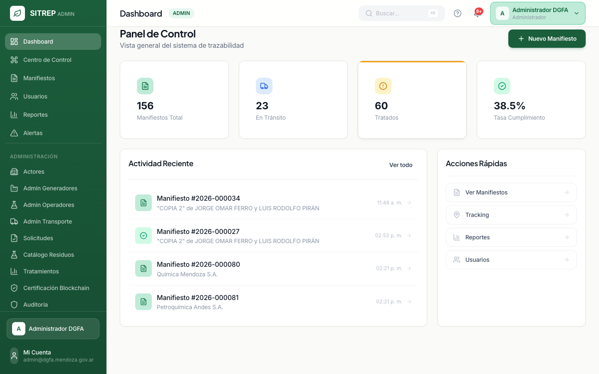
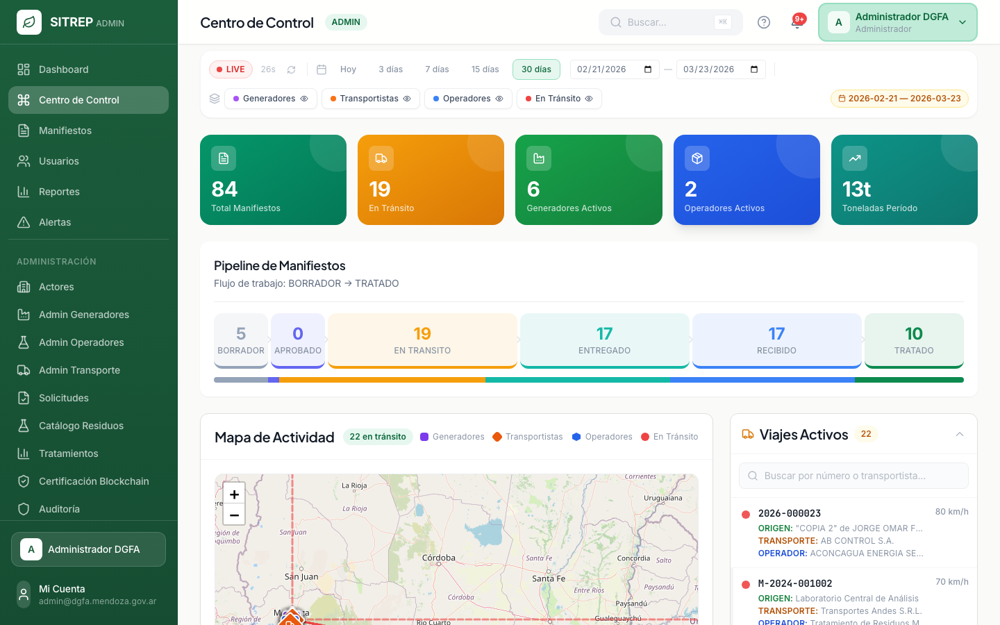
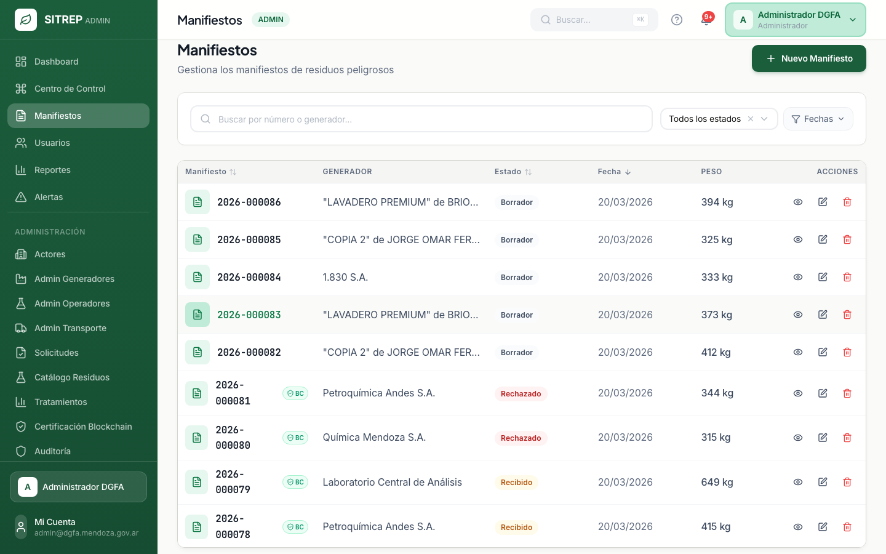
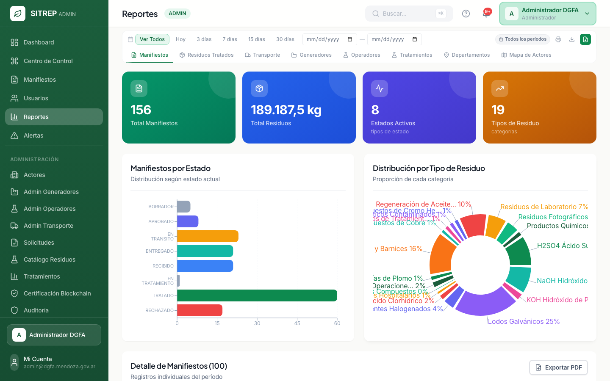
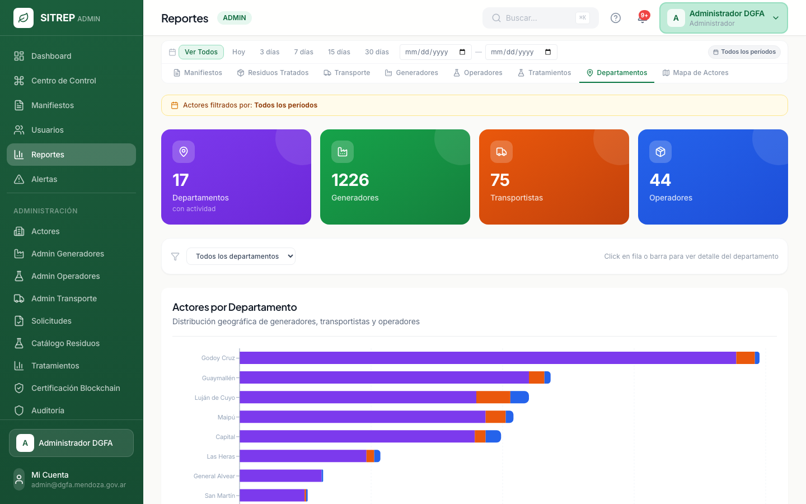
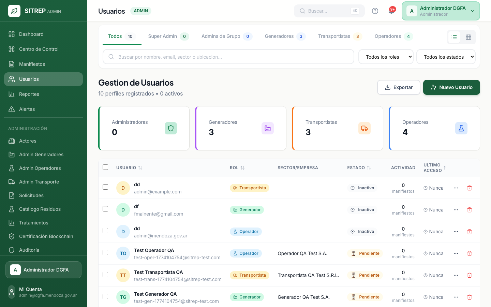
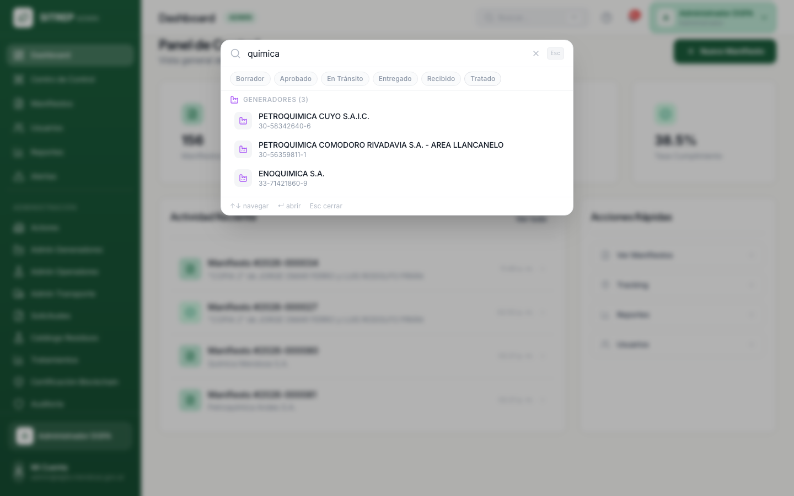
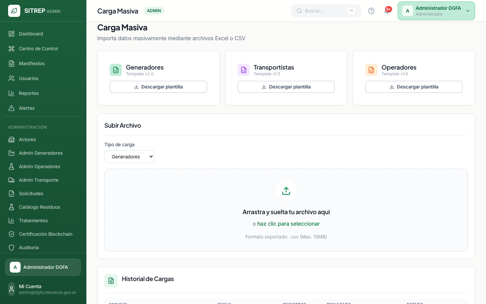
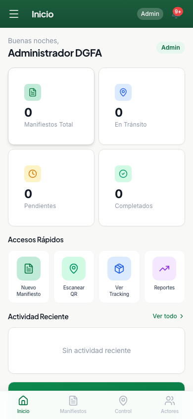
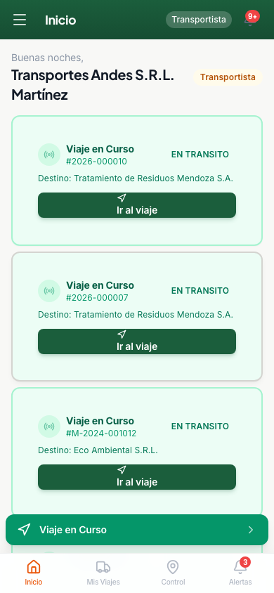
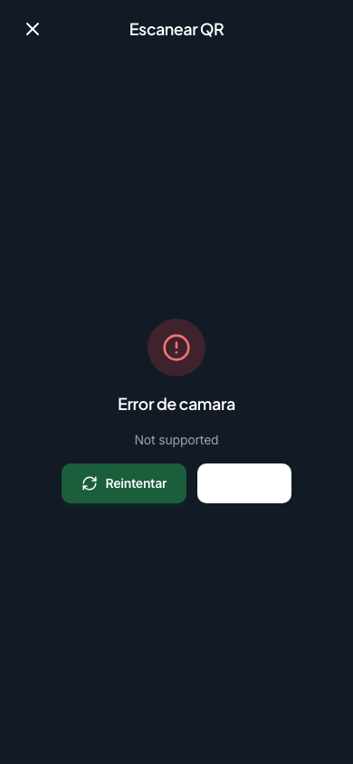
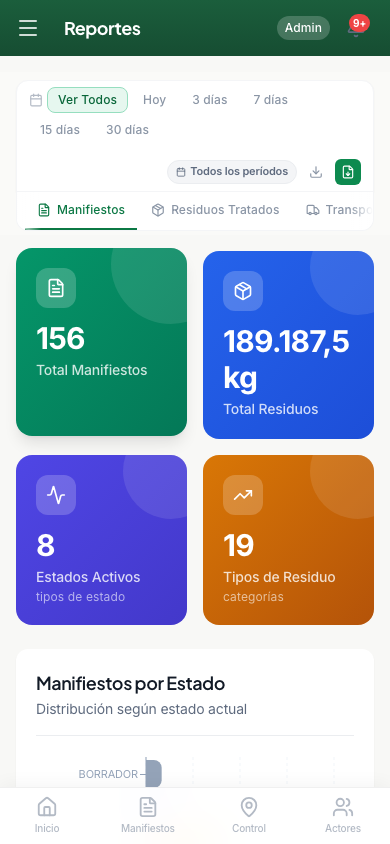
1. Vision General
1.1 Que es SITREP
El sistema permite el monitoreo en tiempo real desde la generacion del residuo, pasando por su transporte, hasta el tratamiento y disposicion final, reemplazando los procesos basados en papel con un sistema electronico conforme a la Ley Nacional 24.051 de Residuos Peligrosos y su Decreto Reglamentario 831/93.
Procesos Cubiertos
SITREP abarca la totalidad del ciclo de vida de los residuos peligrosos:
- Creacion de manifiestos electronicos y firma digital: Los generadores crean manifiestos en formato electronico con todos los datos normativos requeridos (tipo de residuo, cantidad, transportista, operador destino) y los firman electronicamente para dar inicio al proceso.
- Seguimiento GPS en tiempo real del transporte: Durante el transporte, el sistema captura la posicion GPS del vehiculo cada 30 segundos, permitiendo a todos los actores visualizar la ubicacion del residuo en un mapa interactivo.
- Verificacion de peso y documentacion de discrepancias: Al llegar a la planta del operador, se registra el peso real del residuo y se compara automaticamente con el peso declarado, documentando cualquier diferencia significativa.
- Registro de tratamiento y certificados de disposicion: El operador registra el metodo de tratamiento aplicado conforme al catalogo autorizado y, al completar el proceso, el sistema genera el Certificado de Tratamiento y Disposicion Final en formato PDF.
- Reportes estadisticos y cumplimiento regulatorio: El sistema genera reportes detallados sobre manifiestos, residuos tratados, transporte, generadores, operadores, tratamientos, departamentos y mapas de actores, con exportacion a PDF y CSV.
Beneficios Principales
| Beneficio | Descripcion |
|---|---|
| Trazabilidad completa | Seguimiento de cada kilogramo de residuo peligroso desde su generacion hasta su disposicion final, con registro inmutable de cada evento. |
| Eliminacion del papel | Reemplazo total de los manifiestos en papel por formularios electronicos con firma digital, reduciendo errores y tiempos de procesamiento. |
| Transparencia en tiempo real | Todos los actores pueden ver el estado actual de cada manifiesto, la ubicacion del transporte y el progreso del tratamiento. |
| Cumplimiento normativo | Generacion automatica de documentacion conforme a Ley 24.051, con categorias Y1-Y48 y caracteristicas H1-H13. |
| Fiscalizacion efectiva | Centro de control con mapa en tiempo real, deteccion de anomalias y auditoria completa de todas las operaciones. |
| Acceso movil | Aplicacion web progresiva (PWA) optimizada para trabajo en campo, con soporte offline y tracking GPS continuo. |
Alcance Geografico
El sistema cubre la totalidad de la Provincia de Mendoza, con soporte para los 18 departamentos y la posibilidad de visualizar la actividad por zona geografica mediante mapas coropleticos y de actores. Los generadores, transportistas y operadores se geolocalizan con coordenadas precisas (latitud/longitud) para su representacion en los mapas del Centro de Control y los reportes.
1.2 Marco Legal
Legislacion Aplicable
| Norma | Descripcion |
|---|---|
| Ley Nacional 24.051 | Residuos Peligrosos: categorias Y1-Y48, caracteristicas de peligrosidad H1-H13. Establece el regimen de generacion, manipulacion, transporte, tratamiento y disposicion final. |
| Decreto 831/93 | Decreto Reglamentario de la Ley 24.051. Define procedimientos, formularios de manifiesto, requisitos para transportistas y operadores. |
| Ley Provincial 5917 | Adhesion de la Provincia de Mendoza al regimen nacional de residuos peligrosos. Designa a la DGFA como autoridad de aplicacion provincial. |
| Resoluciones SAyDS | Resoluciones de la Secretaria de Ambiente y Desarrollo Sustentable sobre formato de manifiestos, requisitos de transporte y obligaciones de reporte. |
Categorias de Residuos (Corrientes Y)
La Ley 24.051 clasifica los residuos peligrosos en categorias sometidas a control (Anexo I), que van desde Y1 (desechos clinicos) hasta Y48. El catalogo de SITREP mantiene todas las categorias activas configurables por el administrador, con su codigo, nombre, descripcion, caracteristicas de peligrosidad y estado (activo/inactivo).
Caracteristicas de Peligrosidad (H)
Cada tipo de residuo se asocia con una o mas caracteristicas de peligrosidad conforme al Anexo II de la ley:
| Codigo | Caracteristica |
|---|---|
| H1 | Explosivos |
| H3 | Liquidos inflamables |
| H4.1 | Solidos inflamables |
| H5.1 | Oxidantes |
| H6.1 | Venenos (toxicos agudos) |
| H6.2 | Sustancias infecciosas |
| H8 | Corrosivos |
| H10 | Liberacion de gases toxicos al contacto con aire o agua |
| H11 | Sustancias toxicas (efectos retardados o cronicos) |
| H12 | Ecotoxicos |
| H13 | Capaces de generar otra sustancia peligrosa despues de su disposicion |
Obligaciones de los Actores segun Normativa
Generador
Obligado a inscribirse en el Registro Nacional de Generadores y Operadores de Residuos Peligrosos. Debe adoptar medidas para disminuir la cantidad de residuos peligrosos, separar adecuadamente los residuos, envasar, etiquetar y mantener un registro de operaciones. Es responsable del residuo hasta su tratamiento o disposicion final.
Transportista
Debe poseer habilitacion especifica para el transporte de residuos peligrosos. Los vehiculos deben cumplir requisitos tecnicos de seguridad, contar con seguro obligatorio y el chofer debe estar capacitado en manejo de sustancias peligrosas. El manifiesto de transporte debe acompanar al residuo durante todo el trayecto.
Operador
Planta de tratamiento y/o disposicion final habilitada por la autoridad competente. Debe contar con inscripcion vigente, equipamiento adecuado para los tipos de residuos autorizados y personal capacitado. Emite el certificado de disposicion final que cierra el ciclo del manifiesto.
1.3 Actores del Sistema
El sistema contempla cinco actores con diferentes niveles de acceso y responsabilidades:
| Actor | Color | Descripcion | Nivel de Acceso |
|---|---|---|---|
| Administrador DGFA | Azul | Personal de la DGFA. Administracion completa del sistema. | Todos los modulos |
| Generador | Violeta | Empresa productora de residuos peligrosos. Crea y firma manifiestos. | Manifiestos propios, dashboard, reportes |
| Transportista | Naranja | Transportista habilitado de residuos peligrosos. Tracking GPS durante el transporte. | Manifiestos asignados, transporte, flota |
| Operador | Verde | Planta de tratamiento/disposicion. Recibe, pesa y trata los residuos. | Manifiestos entrantes, tratamiento, certificados |
| Sistema | Gris | Procesos automatizados (generacion QR, notificaciones, deteccion de anomalias). | N/A |
1.4 Acceso al Sistema
URLs de Acceso
| Servicio | URL |
|---|---|
| Aplicacion Web | https://sitrep.ultimamilla.com.ar/ |
| App Movil (PWA) | https://sitrep.ultimamilla.com.ar/app/ |
| API REST | https://sitrep.ultimamilla.com.ar/api/ |
| Manual | https://sitrep.ultimamilla.com.ar/manual/ |
Credenciales de Demostracion
| Rol | Contrasena | |
|---|---|---|
| Admin DGFA | admin@dgfa.mendoza.gov.ar | (contactar DGFA) |
| Generador | generador@demo.com | (demo) |
| Transportista | transportista@demo.com | (demo) |
| Operador | operador@demo.com | (demo) |
2. Guia Rapida por Rol
2.1 Administrador DGFA -- Primeros Pasos
Rol: Administrador DGFA — Acceso completo a todos los modulos del sistema.
- Ingresar a
sitrep.ultimamilla.com.arcon credenciales de administrador. - El Dashboard muestra KPIs principales: manifiestos activos, en transito, completados, alertas pendientes.
- Navegar a Centro de Control para ver el mapa de transportes activos en tiempo real.
- Consultar Reportes con 8 pestanas de analisis (manifiestos, residuos, transporte, generadores, operadores, tratamientos, departamentos, mapa de actores).
- Gestionar actores desde Admin > Actores (generadores, transportistas, operadores).
- Configurar reglas de alerta desde Alertas.
- Revisar el log de auditoria inmutable desde Admin > Auditoria.
Consejos para el Administrador
- Centro de Control como monitor principal: Mantener el Centro de Control abierto en una pantalla dedicada para supervision continua. El auto-refresco de 30 segundos mantiene los datos actualizados sin intervencion.
- Alertas proactivas: Configurar reglas de alerta para diferencias de peso mayores al 10%, viajes que excedan el tiempo estimado, y manifiestos estancados en un estado por mas de 48 horas.
- Reportes periodicos: Utilizar el preset "Ultimos 30 dias" para generar informes mensuales. Exportar a CSV para analisis avanzado en planillas de calculo.
- Auditoria regular: Revisar periodicamente el log de auditoria filtrando por acciones criticas (eliminacion, cambio de rol, cancelacion de manifiestos).
- Carga masiva inicial: Al incorporar nuevos actores al sistema, utilizar la herramienta de carga masiva con la plantilla CSV descargable para evitar errores de carga manual.
2.2 Generador -- Crear mi Primer Manifiesto
Rol: Generador — Empresa productora de residuos peligrosos.
- Ingresar con credenciales de generador.
- Desde el Dashboard, hacer clic en "Nuevo Manifiesto".
- Completar los datos: tipo de residuo (categorias Y conforme Ley 24.051), cantidad y unidad de medida.
- Seleccionar el transportista habilitado de la lista desplegable.
- Seleccionar el operador destino (planta de tratamiento autorizada).
- Revisar el resumen completo y firmar electronicamente.
- El sistema genera automaticamente el codigo QR y notifica al transportista asignado.
- Seguir el estado del manifiesto desde Manifiestos: ver timeline de eventos y ubicacion GPS en tiempo real.
Consejos para el Generador
- Verificar datos antes de firmar: Una vez firmado, el manifiesto pasa a APROBADO y no puede editarse. Revisar cuidadosamente tipo de residuo, cantidad, transportista y operador en el paso 5 de revision.
- Usar el codigo QR: Al aprobar el manifiesto, se genera un QR unico. Imprimir y adjuntar al envase del residuo para facilitar la trazabilidad fisica.
- Monitorear en tiempo real: Una vez que el transportista confirma el retiro, es posible seguir la ubicacion del vehiculo en el mapa GPS desde la pagina de detalle del manifiesto.
- Descargar el certificado: Cuando el operador cierra el manifiesto (estado TRATADO), descargar el Certificado de Disposicion Final como respaldo documental del cumplimiento normativo.
- Revisar notificaciones: El sistema envia notificaciones automaticas en cada cambio de estado. Mantener el navegador abierto o instalar la PWA para recibir actualizaciones.
2.3 Transportista -- Mi Primer Viaje
Rol: Transportista — Transportista habilitado para residuos peligrosos.
- Ingresar con credenciales de transportista (web o app movil).
- Ver los manifiestos asignados en el Dashboard (en mobile aparece un banner de viaje destacado).
- Al llegar al generador: Confirmar Retiro → se activa el GPS automaticamente.
- Durante el transporte: el GPS envia la posicion cada 30 segundos al servidor.
- Es posible pausar y reanudar el tracking si se realizan paradas intermedias.
- Si hay incidentes durante el viaje: Registrar Incidente con descripcion detallada.
- Al llegar al operador: Confirmar Entrega → el GPS se desactiva automaticamente.
- Escanear el codigo QR con la camara para acceso rapido al manifiesto.
Consejos para el Transportista
- Instalar la PWA: Para la mejor experiencia en campo, instalar SITREP como aplicacion en el telefono desde
https://sitrep.ultimamilla.com.ar/app/. Esto habilita el modo offline y acceso rapido desde la pantalla de inicio. - Permisos GPS: Al confirmar el retiro, el navegador solicitara permisos de ubicacion. Es imprescindible aceptar para que el tracking funcione correctamente. Si se deniegan por error, ir a configuracion del navegador para habilitarlos manualmente.
- Mantener la aplicacion abierta: El GPS se envia cada 30 segundos mientras la aplicacion esta activa. Si se cierra o se pone en segundo plano, los puntos pendientes se guardan localmente y se envian al reabrir la app.
- Usar pausa en paradas: Si se realizan paradas intermedias (combustible, descanso), usar el boton de Pausa para registrar el incidente. Reanudar al continuar el viaje.
- Registrar incidentes inmediatamente: Ante cualquier incidencia durante el transporte (accidente, demora, desvio de ruta), registrar el incidente con descripcion detallada lo antes posible.
- Escanear QR al llegar: Al llegar a la planta del operador, escanear el QR del manifiesto para verificar rapidamente los datos antes de confirmar la entrega.
2.4 Operador -- Recibir y Tratar Residuos
Rol: Operador — Planta de tratamiento y disposicion final.
- Ingresar con credenciales de operador.
- Ver los manifiestos entrantes en el Dashboard.
- Al recibir la carga: Confirmar Recepcion.
- Registrar el pesaje real y comparar con el peso declarado por el generador.
- Si hay diferencias significativas de peso: se documentan automaticamente en el sistema.
- Si todo esta conforme: Firmar Recepcion Conforme → el manifiesto pasa a estado RECIBIDO.
- Si la carga no es aceptable: Rechazar Carga indicando el motivo del rechazo.
- Registrar el tratamiento aplicado (seleccionar metodo del catalogo autorizado).
- Cerrar Manifiesto → el sistema genera el Certificado de Disposicion Final (PDF descargable).
Consejos para el Operador
- Verificar manifiestos entrantes: Revisar en el Dashboard los manifiestos con estado ENTREGADO que estan esperando recepcion en la planta. Cada minuto de demora en la confirmacion retrasa la cadena de trazabilidad.
- Pesaje inmediato: Registrar el peso real apenas se reciba el residuo. El sistema calcula automaticamente las diferencias con el peso declarado y las documenta para la auditoria.
- Motivos de rechazo claros: Si se rechaza una carga, incluir un motivo detallado y especifico (ej: "Residuo no coincide con categoria Y declarada", "Documentacion de transporte incompleta", "Excede capacidad autorizada").
- Seleccionar tratamiento correcto: Al registrar el tratamiento, asegurarse de seleccionar el metodo del catalogo que corresponde al tipo de residuo recibido. Solo aparecen los metodos autorizados para la planta.
- Conservar certificados: Al cerrar el manifiesto, descargar y archivar el Certificado de Disposicion Final. Este documento es la prueba legal de que el residuo fue tratado conforme a la normativa vigente.
3. Modulos del Sistema
3.1 Dashboard
El dashboard es la pantalla principal del sistema y se adapta segun el rol del usuario autenticado.
Version Desktop (/dashboard)
| Componente | Descripcion |
|---|---|
| Tarjetas KPI (6+1) | Borradores, Aprobados, En Transito, Entregados, Recibidos, Tratados, mas tarjeta de Total general. Cada tarjeta muestra el conteo numerico con icono y color de estado. |
| Manifiestos recientes | Tabla con los ultimos manifiestos ordenados por fecha de actualizacion, con columnas: numero, generador, transportista, operador, estado, fecha. Clic en fila navega al detalle. |
| Acciones rapidas | Botones de acceso directo a las operaciones mas frecuentes segun el rol del usuario autenticado. |
| Filtro de periodo | Selector temporal para filtrar los KPIs y manifiestos recientes por rango de fechas. |
| Lista EN_TRANSITO | Lista de manifiestos actualmente en transporte con indicador de ubicacion GPS activa. |
Endpoint de datos: GET /api/manifiestos/dashboard retorna { borradores, aprobados, enTransito, entregados, recibidos, tratados, total, recientes[], enTransitoList[] }. Auto-refresco cada 30 segundos via useDashboardStats con refetchInterval: 30000.
Version Mobile (/mobile/dashboard)
- Grilla compacta de estadisticas optimizada para pantallas pequenas.
- Especifico para TRANSPORTISTA: Banner de asignacion de viaje en la parte superior:
- Viaje activo: tarjeta verde pulsante con boton "Ir al viaje".
- Viaje pendiente: tarjeta de advertencia amarilla.
- Navegacion simplificada mediante barra inferior (bottom nav bar).
3.2 Manifiestos
Modulo central del sistema para la gestion completa del ciclo de vida de los manifiestos de residuos peligrosos.
Listado (/manifiestos)
- Busqueda de texto completo por numero de manifiesto.
- Filtro por estado (dropdown con los 10 estados posibles).
- Tabla paginada con controles de pagina y limite por pagina.
- Clic en cualquier fila para acceder al detalle del manifiesto.
Crear Nuevo (/manifiestos/nuevo)
Formulario multi-paso guiado:
- Paso 1: Seleccion de tipo de residuo del catalogo de categorias Y.
- Paso 2: Cantidad y unidad de medida.
- Paso 3: Seleccion de transportista (auto-completa CUIT, telefono, domicilio, habilitacion).
- Paso 4: Seleccion de operador destino (auto-completa datos).
- Paso 5: Revision del resumen y firma electronica.
El manifiesto se guarda como BORRADOR hasta que se firma electronicamente.
Detalle (/manifiestos/:id)
- Tarjeta completa con todos los datos del manifiesto.
- Timeline cronologico de todos los eventos (EventoManifiesto).
- Botones de accion que cambian dinamicamente segun el estado actual Y el rol del usuario (mas de 10 acciones posibles).
- Mapa GPS para manifiestos en estado EN_TRANSITO.
- Boton de descarga PDF (disponible en todos los estados).
- Boton de descarga de Certificado de Disposicion (solo en estado TRATADO).
Workflow de Estados
Nota: INCIDENTE es un evento registrado durante EN_TRANSITO, no un estado terminal. El manifiesto permanece en estado EN_TRANSITO mientras se resuelve el incidente.
Estados del Manifiesto
| Estado | Descripcion | Acciones Disponibles |
|---|---|---|
| BORRADOR | Manifiesto creado pero aun no firmado. Puede ser editado. | Firmar/Aprobar, Cancelar |
| APROBADO | Firmado electronicamente. Codigo QR generado. Esperando retiro. | Confirmar Retiro, Cancelar |
| EN_TRANSITO | Residuo retirado. GPS activo. Transportista en ruta. | Confirmar Entrega, Registrar Incidente, Cancelar |
| ENTREGADO | Residuo entregado en planta del operador. GPS desactivado. | Confirmar Recepcion, Rechazar Carga, Cancelar |
| RECIBIDO | Operador confirmo recepcion. Pesaje registrado. | Registrar Tratamiento, Cerrar Manifiesto, Cancelar |
| EN_TRATAMIENTO | Metodo de tratamiento aplicado. En proceso de disposicion. | Cerrar Manifiesto, Cancelar |
| TRATADO | Ciclo completo. Certificado de disposicion disponible. | Descargar PDF, Descargar Certificado |
| RECHAZADO | Carga rechazada por el operador con motivo documentado. | Consultar, Descargar PDF |
| CANCELADO | Manifiesto cancelado por generador o administrador. | Consultar, Descargar PDF |
Datos del Manifiesto
Cada manifiesto contiene la siguiente informacion:
- Numero de manifiesto: Identificador unico generado por el sistema.
- Generador: Razon social, CUIT, domicilio, numero de inscripcion.
- Tipo de residuo: Categoria Y conforme Ley 24.051, con caracteristicas de peligrosidad.
- Cantidad y unidad: Peso o volumen declarado del residuo.
- Transportista: Empresa, CUIT, habilitacion, vehiculo asignado, chofer.
- Operador destino: Planta, CUIT, habilitacion, metodo de tratamiento autorizado.
- Fechas: Creacion, aprobacion, retiro, entrega, recepcion, tratamiento, cierre.
- Codigo QR: Generado automaticamente al aprobar para acceso rapido via escaneo.
- Timeline de eventos: Historial completo de cada accion realizada sobre el manifiesto.
- Certificacion Blockchain: Registro inmutable del hash SHA-256 en la red Ethereum (ver seccion 3.10).
3.3 Centro de Control
Acceso: Administrador DGFA (vista completa) / Transportista (solo viajes propios).
Sala de operaciones en tiempo real (/centro-control):
- Indicador LIVE con cuenta regresiva de auto-refresco cada 30 segundos.
- 5 indicadores KPI en la parte superior.
- Visualizacion tipo embudo (pipeline funnel) del flujo de estados.
- Mapa interactivo Leaflet que muestra:
- Ubicaciones de generadores (marcadores violeta).
- Ubicaciones de transportistas (marcadores naranja).
- Ubicaciones de operadores (marcadores azul).
- Viajes activos con trazas GPS (marcadores rojos pulsantes).
- Panel acordeon para viajes activos (EN_TRANSITO) y viajes completados.
- Grafico de dona y grafico de barras para estadisticas rapidas.
- 6 botones de accion rapida.
- Filtrado por rol: ADMIN ve todo, TRANSPORTISTA ve solo los viajes de su empresa.
Datos del Centro de Control
El endpoint GET /api/centro-control/actividad acepta los siguientes parametros:
| Parametro | Tipo | Descripcion |
|---|---|---|
fechaDesde | string (ISO date) | Fecha de inicio del periodo a consultar |
fechaHasta | string (ISO date) | Fecha de fin (automaticamente ajustada a 23:59:59.999 para incluir el dia completo) |
capas | string (CSV) | Capas a incluir: generadores,transportistas,operadores,transito |
Capas del Mapa
| Capa | Marcador | Datos Incluidos |
|---|---|---|
| Generadores | Cuadrado violeta redondeado + icono Fabrica | Razon social, CUIT, domicilio, categoria, inscripcion |
| Transportistas | Diamante naranja + icono Camion | Razon social, CUIT, habilitacion, vehiculos, choferes |
| Operadores | Cuadrado azul redondeado + icono Laboratorio | Razon social, CUIT, habilitacion, categoria, tratamientos autorizados |
| En Transito | Circulo rojo pulsante | Manifiesto, generador, operador, transportista, traza GPS (hasta 50 puntos por viaje) |
Estadisticas en Tiempo Real
El Centro de Control calcula y muestra:
- Pipeline de estados: Conteo de manifiestos por estado (BORRADOR, APROBADO, EN_TRANSITO, ENTREGADO, RECIBIDO, EN_TRATAMIENTO, TRATADO) como visualizacion tipo embudo.
- KPIs: Total de manifiestos, viajes activos, viajes completados hoy, alertas pendientes, anomalias detectadas.
- Manifiestos por dia: Calculado via SQL raw para rendimiento optimo.
- Refresco automatico: Countdown visible de 30 segundos. Al llegar a 0, todos los datos se recargan automaticamente.
3.4 Reportes
Centro de reportes (/reportes) con barra de filtros compartida:
- Presets de periodo: Ultimos 7 dias, Ultimos 30 dias, Ultimos 90 dias, Este anio, Rango personalizado.
- Exportacion: PDF (generado con jsPDF del lado del cliente) y CSV (generado en servidor, maximo 10,000 filas).
8 Pestanas de Reportes
Ruta: Reportes > Manifiestos
Vista principal de reportes con indicadores clave de rendimiento (KPIs) que muestran totales por estado. Incluye un grafico de dona interactivo (Recharts) que visualiza la distribucion de manifiestos por estado, un grafico de barras que agrupa los manifiestos por tipo de residuo (categoria Y), y una tabla paginada con todos los manifiestos del periodo seleccionado.
Datos del endpoint: GET /api/reportes/manifiestos con parametros fechaInicio, fechaFin, page, limit.
Nota tecnica: El campo porTipoResiduo retorna objetos { cantidad, unidad }, no numeros planos.
Ruta: Reportes > Residuos Tratados
Reporte especializado en el tratamiento de residuos. Incluye KPIs de tratamiento (total recibido, total tratado, pendiente de tratamiento), un indicador gauge que muestra la tasa de tratamiento como porcentaje, grafico de dona con distribucion por tipo de residuo tratado, y tabla detallada de cada operacion de tratamiento con metodo aplicado, fecha y operador responsable.
Datos del endpoint: GET /api/reportes/tratados con paginacion. El campo totalPorTipo retorna numeros planos.
Ruta: Reportes > Transporte
Analisis del desempeno del servicio de transporte. KPIs de viajes totales, completados, en curso y tasa de completitud. Grafico de barras que compara la completitud de cada transportista. Tabla detallada por transportista con nombre, CUIT, viajes asignados, completados, tasa de completitud representada con barras de progreso visuales, y tiempo promedio de viaje.
Datos del endpoint: GET /api/reportes/transporte. Usa _count de Prisma para eficiencia en lugar de cargar manifiestos completos.
Ruta: Reportes > Generadores
Analisis de la actividad de los generadores de residuos peligrosos. KPIs de generadores activos, manifiestos generados, volumen total. Grafico circular de distribucion por categorias de generadores. Tabla detallada con razon social, CUIT, categoria, numero de manifiestos, volumen total generado y estado de cumplimiento.
Ruta: Reportes > Operadores
Analisis del desempeno de las plantas de tratamiento. KPIs de operadores activos, manifiestos recibidos y tratados. Grafico circular por tipo de operador. Grafico de barras comparativo recibidos vs. tratados por operador. Tabla con razon social, CUIT, manifiestos recibidos, manifiestos tratados, tasa de tratamiento y tipos de residuos autorizados.
Ruta: Reportes > Tratamientos
Desglose de los metodos de tratamiento aplicados en el periodo. Incluye listado de metodos utilizados, frecuencia de aplicacion, operadores que los ejecutan y tipos de residuos tratados por cada metodo. La informacion se presenta cuando hay datos de tratamiento disponibles en el periodo seleccionado.
Ruta: Reportes > Departamentos
Visualizacion geografica de la actividad por departamentos de Mendoza. Mapa coropletico que colorea cada departamento segun el nivel de actividad (manifiestos generados). Tabla de ranking con los departamentos ordenados por volumen de actividad. Al hacer clic en un departamento, se abre el modal DepartamentoDetalleModal con desglose completo de generadores, transportistas y operadores activos en esa zona.
Ruta: Reportes > Mapa de Actores
Mapa interactivo Leaflet de pantalla completa con los tres tipos de actores geolocalizados. Controles de capas permiten activar/desactivar cada tipo: generadores (marcadores violeta con icono de fabrica), transportistas (marcadores naranja con icono de camion), operadores (marcadores azul con icono de laboratorio). Para densidades superiores a 50 marcadores, se activa el agrupamiento automatico (clustering) con icono de grupo numerado. Cada marcador tiene un popup informativo con razon social, CUIT, domicilio y datos de contacto.
Utilidades compartidas: downloadCsv, DonutCenterLabel, clusterMarkers en shared.tsx.
Exportacion de Reportes
| Formato | Generacion | Limite | Contenido |
|---|---|---|---|
| Cliente (jsPDF + jspdf-autotable) | Sin limite | Header SITREP verde, tarjetas KPI, tabla autoTable, footer con paginacion | |
| CSV | Servidor (/api/reportes/exportar/:tipo) | 10,000 filas | Datos tabulares completos del periodo, tipos: manifiestos, generadores, transportistas, operadores |
3.5 Tracking GPS
Modulo principal para transportistas. El seguimiento GPS se activa automaticamente al confirmar el retiro del residuo.
| Parametro | Valor | Detalle |
|---|---|---|
| Metodo de captura | navigator.geolocation.watchPosition() | Monitoreo continuo de posicion |
| Intervalo de transmision | 30 segundos | Envio al endpoint POST /api/manifiestos/:id/ubicacion |
| Datos capturados | latitud, longitud, velocidad, rumbo | Precision en metros incluida |
| Maquina de estados | checking → acquiring → active | Tambien: denied, unavailable, error |
| Resiliencia offline | Cola de hasta 5 envios fallidos | Persistidos en localStorage (gps_pending_{id}) |
| Recuperacion | Flush automatico al reconectar | Puntos GPS guardados se envian al backend al montar la app |
| Pausa/Reanudacion | Incidentes PAUSA/REANUDACION | Respaldado en localStorage |
| Temporizador | Tiempo transcurrido desde fechaRetiro | Timestamp del servidor como referencia |
| Cache backend | 30s TTL por manifiestoId | ~24ms cached vs ~250ms cold |
3.6 Gestion de Actores (Admin)
Acceso exclusivo: Administrador DGFA. Gestion CRUD de los tres tipos de actores regulados.
Generadores (/admin/actores/generadores)
Gestion completa de los generadores de residuos peligrosos registrados en el sistema.
| Campo | Tipo | Descripcion |
|---|---|---|
| razonSocial | Texto | Nombre o razon social de la empresa generadora |
| CUIT | Texto | Clave Unica de Identificacion Tributaria (XX-XXXXXXXX-X) |
| domicilio | Texto | Direccion fisica del establecimiento generador |
| telefono | Texto | Numero de contacto principal |
| Texto | Correo electronico de contacto | |
| numeroInscripcion | Texto | Numero de inscripcion en el registro de generadores |
| categoria | Texto | Categoria del generador segun volumen de residuos |
| lat / lng | Decimal | Coordenadas geograficas para ubicacion en mapa |
- Tabla con busqueda por razon social o CUIT, filtros por categoria y paginacion.
- Modal de creacion/edicion con validacion de campos obligatorios.
- Pagina de detalle con historial completo de manifiestos del generador.
- Datos de enriquecimiento via archivo CSV estatico para campos extendidos (indexado por CUIT para merge O(1)).
Transportistas (/admin/actores/transportistas)
Gestion de empresas transportistas habilitadas con sus entidades asociadas.
- Tabla con busqueda por razon social o CUIT y filtros.
- Creacion/Edicion con entidades anidadas:
| Entidad | Campos | Descripcion |
|---|---|---|
| Vehiculos | patente, marca, modelo, anio, capacidad, habilitacion, vencimiento | Flota de vehiculos habilitados para transporte de residuos peligrosos |
| Choferes | nombre, apellido, DNI, licencia, vencimiento, telefono | Conductores habilitados con licencia especial vigente |
- Pagina de detalle con flota de vehiculos, choferes asignados y historial de viajes realizados.
Operadores (/admin/actores/operadores)
Gestion de plantas de tratamiento y disposicion final autorizadas.
- Tabla con busqueda por razon social o CUIT y filtros por categoria.
- Creacion/Edicion con:
- Certificados: Numero de certificado, tipo (FIJO / IN SITU), fecha de vencimiento.
- Corrientes Y autorizadas: Lista de categorias de residuos que la planta esta habilitada para recibir.
- Tratamientos autorizados: Metodos de tratamiento registrados con capacidad por tipo de residuo.
- Pagina de detalle con manifiestos recibidos, tratados, tasa de tratamiento y metodos aplicados.
Nota: Existen empresas con certificados duales (misma razon social con certificado FIJO e IN SITU). El sistema maneja estos casos como registros separados, permitiendo la deduplicacion en reportes por CUIT.
3.7 Catalogos y Configuracion
| Catalogo | Ruta | Descripcion |
|---|---|---|
| Residuos | /admin/residuos | Codigos de categorias Y conforme Ley 24.051, nombre, descripcion, caracteristicas de peligrosidad, estado activo/inactivo. |
| Tratamientos | /admin/tratamientos | Metodos de tratamiento, descripciones, capacidades autorizadas. |
| Vehiculos | /admin/vehiculos | Gestion de flota: patente, marca, modelo, anio, capacidad, habilitacion, vencimiento. |
| Parametros | /configuracion | Configuraciones globales del sistema organizadas por categoria. |
3.8 Usuarios y Seguridad
Gestion de Usuarios (/admin/usuarios)
Administracion CRUD completa de usuarios del sistema con los siguientes campos: email, nombre, apellido, empresa, telefono, CUIT, asignacion de rol.
Roles y Permisos
| Rol | Alcance | Permisos Clave |
|---|---|---|
| ADMIN | Acceso total | Gestion de actores, usuarios, catalogos, reportes completos, auditoria, alertas, centro de control |
| GENERADOR | Manifiestos propios | Crear, firmar y seguir manifiestos. Dashboard y reportes propios |
| TRANSPORTISTA | Manifiestos asignados | Confirmar retiro/entrega, GPS, registrar incidentes, escaner QR |
| OPERADOR | Manifiestos entrantes | Recibir, pesar, aceptar/rechazar, registrar tratamiento, cerrar manifiesto, certificados |
Auditoria (/admin/auditoria)
Log inmutable de todas las operaciones realizadas en el sistema. Incluye filtros por fecha, usuario, accion y modulo. Muestra datos anteriores y posteriores a cada cambio (before/after).
Matriz de Permisos Detallada
| Recurso / Operacion | ADMIN | GENERADOR | TRANSPORTISTA | OPERADOR |
|---|---|---|---|---|
| Ver Dashboard | Si (global) | Si (propios) | Si (asignados) | Si (entrantes) |
| Crear Manifiesto | Si | Si | No | No |
| Firmar / Aprobar Manifiesto | Si | Si (propios) | No | No |
| Confirmar Retiro | Si | No | Si (asignados) | No |
| Confirmar Entrega | Si | No | Si (asignados) | No |
| Registrar Incidente | Si | No | Si (en transito) | No |
| Confirmar Recepcion | Si | No | No | Si (destino) |
| Rechazar Carga | Si | No | No | Si (destino) |
| Registrar Tratamiento | Si | No | No | Si (destino) |
| Cerrar Manifiesto | Si | No | No | Si (destino) |
| Cancelar Manifiesto | Si | Si (propios) | No | No |
| Descargar PDF | Si | Si (propios) | Si (asignados) | Si (destino) |
| Descargar Certificado | Si | Si (propios) | Si (asignados) | Si (destino) |
| Ver Centro de Control | Si (todo) | No | Si (propios) | No |
| Ver Reportes | Si (globales) | Si (propios) | No | Si (propios) |
| Exportar CSV/PDF | Si | Si | No | Si |
| Gestionar Actores | Si | No | No | No |
| Gestionar Usuarios | Si | No | No | No |
| Gestionar Catalogos | Si | No | No | No |
| Gestionar Alertas | Si | No | No | No |
| Ver Auditoria | Si | No | No | No |
| Carga Masiva | Si | No | No | No |
| Configuracion Sistema | Si | No | No | No |
| Tracking GPS (enviar) | No | No | Si | No |
| Escanear QR | Si | Si | Si | Si |
| Notificaciones | Si | Si | Si | Si |
| Gestionar Perfil | Si | Si | Si | Si |
Registro de Auditoria - Campos Detallados
| Campo | Tipo | Descripcion | Ejemplo |
|---|---|---|---|
id | UUID | Identificador unico del registro | a1b2c3d4-e5f6-... |
accion | String | Tipo de operacion realizada | ESTADO_CHANGE |
modulo | String | Modulo del sistema afectado | MANIFIESTOS |
datosAntes | JSON | Estado del registro antes del cambio | { "estado": "APROBADO" } |
datosDespues | JSON | Estado del registro despues del cambio | { "estado": "EN_TRANSITO" } |
ip | String | Direccion IP del cliente | 190.210.45.123 |
userAgent | String | Navegador y dispositivo | Mozilla/5.0 (Android...) |
usuarioId | UUID | Usuario que ejecuto la accion | user-uuid-123 |
manifiestoId | UUID (opt) | Manifiesto afectado | manif-uuid-456 |
createdAt | DateTime | Fecha y hora exacta del evento | 2026-02-10T14:30:00Z |
Filtros de Auditoria
La pagina de auditoria permite filtrar los registros por multiples criterios combinados:
- Rango de fechas: Desde/hasta para acotar el periodo de busqueda.
- Usuario: Seleccionar un usuario especifico para ver solo sus acciones.
- Accion: Filtrar por tipo (CREATE, UPDATE, DELETE, ESTADO_CHANGE, LOGIN).
- Modulo: Filtrar por modulo del sistema (MANIFIESTOS, ACTORES, USUARIOS, etc.).
- Manifiesto: Buscar registros asociados a un manifiesto especifico.
Los resultados se presentan en una tabla paginada con expansion de detalle para ver los datos completos before/after de cada registro.
3.9 Herramientas
Escaner QR (/mobile/escaner-qr)
Herramienta de lectura de codigos QR diseiiada para uso en campo por transportistas y operadores.
- Camara: Utiliza la biblioteca
html5-qrcodepara acceder a la camara del dispositivo. - Marco animado: Guia visual con marco de escaneo animado para facilitar la alineacion del codigo.
- Entrada manual: Campo de texto como metodo alternativo para ingresar el codigo del manifiesto directamente.
- Navegacion automatica: Al detectar un codigo QR valido, el sistema navega automaticamente a la pagina de detalle del manifiesto correspondiente.
- Validacion: El sistema verifica que el codigo corresponda a un manifiesto existente antes de navegar.
Carga Masiva (/admin/carga-masiva)
Importacion masiva de datos via archivos CSV para los tres tipos de actores.
| Paso | Accion | Descripcion |
|---|---|---|
| 1 | Seleccionar tipo | Elegir entre generadores, transportistas u operadores |
| 2 | Descargar plantilla | Obtener archivo CSV con las columnas requeridas (GET /api/carga-masiva/plantilla/:tipo) |
| 3 | Completar datos | Llenar la plantilla con los datos a importar |
| 4 | Subir archivo | Cargar el CSV completado al sistema |
| 5 | Vista previa | Revisar los datos parseados con indicadores de filas validas y con errores |
| 6 | Confirmar importacion | Ejecutar la importacion de filas validas |
| 7 | Reporte de resultados | Ver resumen de importados, omitidos y errores detallados por fila |
Precauciones CSV: Los archivos CSV pueden contener campos entrecomillados con saltos de linea (RFC 4180). Los separadores de codigos Y pueden ser inconsistentes (coma, barra, "e", espacios). Algunos certificados usan guion largo en lugar de guion comun.
Notificaciones
Sistema de notificaciones integrado en el header de la aplicacion.
- Icono campana: Visible en todo momento en la barra superior, con badge numerico de notificaciones no leidas.
- Lista desplegable: Al hacer clic, muestra las notificaciones mas recientes ordenadas por fecha.
- Polling automatico: Consulta al servidor cada 30 segundos para detectar nuevas notificaciones.
- Prioridades: Las notificaciones tienen niveles de prioridad con indicadores visuales diferenciados:
- Urgente: Borde rojo, fondo destacado.
- Alta: Borde naranja.
- Normal: Estilo estandar.
- Acciones: Marcar como leida, marcar todas como leidas, eliminar notificacion individual.
- Tipos de notificacion: Cambio de estado de manifiesto, asignacion de transporte, alertas del sistema, recordatorios de vencimiento.
Alertas (/alertas)
Motor de reglas de alerta configurable por el administrador.
| Campo de Regla | Descripcion |
|---|---|
| Nombre | Identificador descriptivo de la regla |
| Evento disparador | Accion que inicia la evaluacion (cambio de estado, GPS fuera de ruta, peso discrepante, etc.) |
| Condicion | Expresion que debe cumplirse para generar la alerta (ej: diferencia de peso mayor al 10%) |
| Destinatarios | Roles o usuarios especificos que reciben la alerta generada |
| Activa | Interruptor para activar/desactivar la regla sin eliminarla |
Cuando una regla se dispara, se crea un registro en AlertaGenerada vinculado al manifiesto y a la regla que la origino. Las alertas pueden ser resueltas manualmente por el administrador via PUT /api/alertas/:id/resolver.
3.10 Certificacion Blockchain
Nota: La certificacion blockchain no reemplaza la firma digital regulada por la normativa argentina (ver CU-S10). Es un mecanismo complementario de integridad de datos que garantiza que el contenido del manifiesto no fue alterado despues de su certificacion.
3.10.1 Red y Contrato Inteligente
El sistema opera sobre Ethereum Sepolia, una red de prueba (testnet) publica y gratuita que es identica en funcionamiento a la red principal de Ethereum (mainnet). La testnet permite validar completamente la tecnologia sin incurrir en costos de gas reales.
| Parametro | Valor |
|---|---|
| Red | Ethereum Sepolia (testnet, chain ID 11155111) |
| Contrato | SitrepRegistry |
| Direccion | 0xbe4680934B675c80E2e6C2BD5Ae8Bf32aD42e241 |
| Explorador | Ver en Etherscan |
El contrato SitrepRegistry expone dos funciones:
| Funcion | Acceso | Descripcion |
|---|---|---|
registrar(hash) | Solo owner (wallet del sistema) | Almacena un hash bytes32 con su timestamp. Falla si el hash ya existe. Emite evento ManifiestoRegistrado. |
verificar(hash) | Publico (lectura gratuita) | Retorna (exists, timestamp). No consume gas. |
El patron onlyOwner asegura que solo la wallet del sistema pueda escribir en el contrato, mientras que cualquier persona puede verificar hashes sin costo.
3.10.2 Proceso de Certificacion
La certificacion es bajo demanda: el usuario hace clic en “Certificar en Blockchain” desde la pagina de detalle del manifiesto. No es automatica.
Prerequisito: El manifiesto debe estar en estado APROBADO o posterior. No se pueden certificar manifiestos en estado BORRADOR ni CANCELADO.
Solicitud
Usuario hace clic en “Certificar en Blockchain” → POST /api/blockchain/registrar/:id
Hash
Backend genera hash SHA-256 del JSON canonico del manifiesto. Estado → PENDIENTE
Transaccion
Envia TX al smart contract registrar(hash). Guarda txHash en BD.
Confirmacion
Espera 1 confirmacion de la red. Estado → CONFIRMADO (guarda bloque + timestamp).
Cron de reintentos: Un job automatico se ejecuta cada 60 segundos y procesa registros en estado PENDIENTE o ERROR. Maximo 3 reintentos por manifiesto. Solo corre en la instancia PM2 0 para evitar duplicacion en modo cluster.
3.10.3 Datos Certificados (Hash Canonico)
El hash SHA-256 se calcula sobre un JSON canonico con los siguientes campos, siempre en el mismo orden:
| Campo | Descripcion |
|---|---|
numero | Numero del manifiesto (ej: 2026-000147) |
generadorId | ID del generador |
generadorCuit | CUIT del generador |
transportistaId | ID del transportista |
transportistaCuit | CUIT del transportista |
operadorId | ID del operador |
operadorCuit | CUIT del operador |
residuos | Array de residuos (sorted por tipoResiduoId): tipoResiduoId, cantidad, unidad |
fechaFirma | Fecha de firma en formato ISO 8601 |
Los residuos se ordenan alfabeticamente por tipoResiduoId. El resultado es determinista: los mismos datos siempre generan el mismo hash SHA-256 de 64 caracteres hexadecimales.
3.10.4 Panel de Certificacion en Detalle del Manifiesto
El componente BlockchainPanel se muestra en la pagina de detalle de cada manifiesto y presenta cuatro estados visuales:
| Estado | Visual | Comportamiento |
|---|---|---|
| No certificado | Borde punteado verde, icono escudo, boton “Certificar en Blockchain” | Solo visible si el manifiesto no es BORRADOR ni CANCELADO. Al hacer clic inicia el registro. |
| PENDIENTE | Fondo ambar, spinner animado, texto “Esperando confirmacion” | Muestra TX Hash como link a Etherscan. Auto-refresh cada 10 segundos. |
| ERROR | Fondo rojo, icono alerta, boton “Reintentar” | Permite reintentar manualmente el registro. |
| CONFIRMADO | Banner verde gradiente, escudo verificado, barra SHA-256 | Detalles expandibles: TX Hash (link Etherscan), bloque, timestamp, contrato. Boton copiar hash. |
3.10.5 Registro de Certificaciones (/admin/blockchain)
Pagina exclusiva para el rol ADMIN que lista todas las certificaciones blockchain del sistema.
- Tabla paginada con 15 registros por pagina.
- Columnas: Manifiesto #, Generador, Estado blockchain, Hash SHA-256, TX Hash (link a Etherscan), Bloque, Fecha de registro.
- Filtros por pestanas: Todos, Confirmados, Pendientes, Con Error.
- Boton “Ver Contrato”: Link directo a la direccion del contrato en Etherscan.
- Cada fila es clickeable y navega al detalle del manifiesto.
3.10.6 Verificacion Publica
La pagina de verificacion publica (/verificar/:numero) muestra un badge de blockchain cuando el manifiesto tiene estado CONFIRMADO. El endpoint GET /api/blockchain/verificar/:hash permite verificar un hash SHA-256 contra el smart contract sin autenticacion.
3.10.7 Sello Blockchain en PDFs
Cuando un manifiesto tiene certificacion blockchain CONFIRMADA, los PDFs (manifiesto y certificado de disposicion final) incluyen un sello verde con el hash SHA-256, TX Hash y link a Etherscan.
3.11 Estadisticas y Analytics
El modulo de Estadisticas (/estadisticas) ofrece una vista consolidada de los indicadores clave del sistema, accesible por todos los usuarios autenticados. La pagina presenta cuatro paneles de analytics alimentados por endpoints dedicados del backend:
| Panel | Endpoint | Descripcion |
|---|---|---|
| Manifiestos por Mes | /api/analytics/manifiestos-por-mes | Grafico de barras con la evolucion mensual de manifiestos creados (ultimos 12 meses). Consulta via raw SQL. |
| Residuos por Tipo | /api/analytics/residuos-por-tipo | Distribucion de residuos agrupados por tipo/categoria (Prisma groupBy). |
| Manifiestos por Estado | /api/analytics/manifiestos-por-estado | Donut chart con la proporcion de manifiestos en cada estado del workflow. |
| Tiempo Promedio por Etapa | /api/analytics/tiempo-promedio | Tiempo promedio (en horas) que un manifiesto permanece en cada etapa del workflow, calculado a partir de las fechas de transicion. |
Estos datos permiten a los administradores identificar tendencias, cuellos de botella en el proceso y evaluar la eficiencia operativa del sistema de trazabilidad.
4. Aplicacion Movil (PWA)
4.1 Instalacion y Requisitos
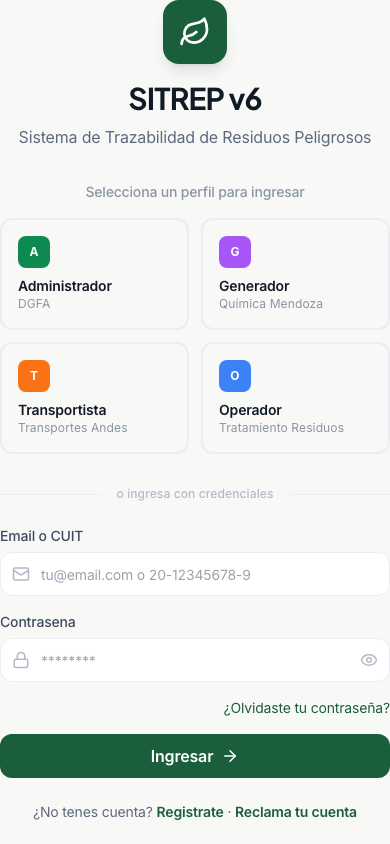
Requisitos del Dispositivo
| Requisito | Minimo | Recomendado |
|---|---|---|
| Navegador | Chrome 80+ / Safari 14+ | Chrome 100+ / Safari 16+ |
| Pantalla | 375px ancho | 390px+ ancho |
| GPS | Requerido para Transportista | Alta precision (A-GPS) |
| Camara | Requerido para Escaner QR | Enfoque automatico |
| Conexion | 3G | 4G/WiFi |
Instalacion en Android (Chrome)
- Abrir
https://sitrep.ultimamilla.com.ar/app/en Google Chrome. - El navegador mostrara automaticamente un banner de instalacion despues de 45 segundos de uso (puede descartarse por 7 dias).
- Alternativamente, tocar el menu de tres puntos y seleccionar "Agregar a pantalla de inicio".
- La aplicacion se instala como icono independiente en el launcher.
Instalacion en iOS (Safari)
- Abrir
https://sitrep.ultimamilla.com.ar/app/en Safari. - Tocar el boton Compartir (icono de flecha hacia arriba).
- Seleccionar "Agregar a la pantalla de inicio".
- Confirmar el nombre y tocar Agregar.
Primer Inicio
Al abrir la aplicacion instalada por primera vez:
- La PWA se abre en modo standalone (sin barra de direcciones del navegador).
- Se redirige automaticamente a
/app/con la interfaz mobile optimizada. - Se muestra la pantalla de login donde el usuario ingresa sus credenciales.
- Tras el primer login, se activa el Tour de Bienvenida (carrusel adaptado al rol del usuario).
Configuracion del Manifest
| Parametro | Valor |
|---|---|
| Scope | /app/ |
| Start URL | /app/ |
| Orientacion | Portrait (vertical) |
| Display | Standalone |
| Iconos | 192x192 y 512x512 (maskable) |
4.3 Login y Acceso
El acceso a la aplicacion movil requiere credenciales validas (email y contrasena). La sesion se mantiene activa mediante tokens JWT que se renuevan automaticamente.
Proceso de Login
- Ingresar email y contrasena en el formulario.
- El sistema autentica contra el backend y genera un token JWT.
- El token se almacena en
localStoragey se incluye automaticamente en todas las solicitudes. - El usuario es redirigido al Dashboard correspondiente a su rol.
Selector de Perfil (User Switcher)
Para ambientes de demostracion o usuarios que manejan multiples roles, la aplicacion incluye un selector rapido de perfil accesible desde el menu lateral. Permite alternar entre hasta 5 usuarios guardados sin necesidad de cerrar sesion manualmente.
Sincronizacion cross-tab: Si el usuario tiene multiples pestanas abiertas, el token se sincroniza automaticamente entre todas ellas mediante el evento storage del navegador. Esto previene conflictos cuando se renueva un token en una pestana.
Sesion y Seguridad
| Aspecto | Detalle |
|---|---|
| Duracion del token | Configurable en el backend (por defecto, varias horas) |
| Renovacion | Automatica via /api/auth/refresh |
| Logout | Limpia tokens, estado de viaje, GPS pending, y snapshots de localStorage |
| Inactividad | El token expira y el usuario es redirigido al login |
4.4 Pantallas del Administrador
Rol ADMIN: Acceso completo a todas las funciones del sistema. El administrador puede gestionar usuarios, monitorear la actividad en tiempo real, generar reportes y supervisar todo el ciclo de vida de los manifiestos.
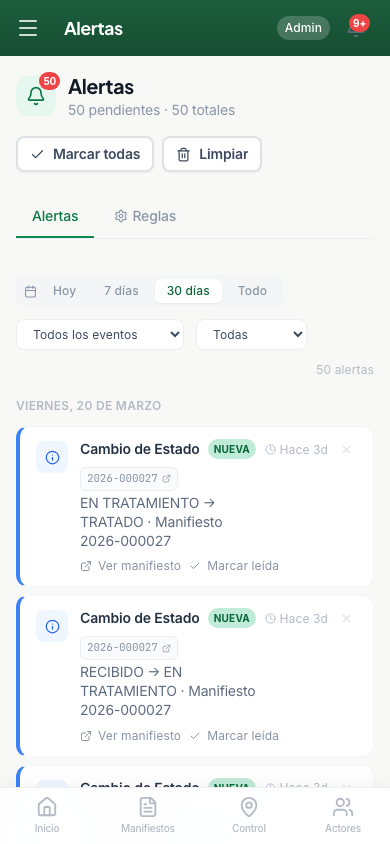
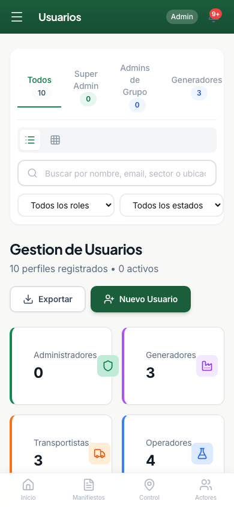
Dashboard del Administrador
La pantalla principal muestra una vision global del sistema con KPIs en tiempo real:
- KPIs principales: Total de manifiestos, borradores pendientes, en transito, tratados completados.
- Actividad reciente: Ultimos manifiestos creados o actualizados en el sistema.
- Acciones rapidas: Crear manifiesto, ver centro de control, generar reportes.
Alertas del Sistema
Panel de alertas con filtros por estado (pendiente, resuelta, descartada). El administrador recibe notificaciones de anomalias en el transporte, manifiestos vencidos y eventos criticos. Las alertas se pueden filtrar y gestionar directamente desde la interfaz mobile.
Centro de Reportes
Acceso a los 7 tabs de reportes con graficos interactivos (Recharts), tablas paginadas y exportacion a PDF/CSV. En mobile, los graficos se adaptan al ancho de pantalla y las tablas se transforman en tarjetas apiladas.
Gestion de Usuarios
CRUD completo de usuarios del sistema: crear, editar, eliminar y activar/desactivar cuentas. Cada tarjeta de usuario muestra nombre, email, rol (con badge de color) y estado activo/inactivo con toggle rapido.
Rutas Accesibles al Admin en Mobile
| Ruta | Funcion |
|---|---|
| /app/dashboard | Dashboard con KPIs globales |
| /app/manifiestos | Lista completa de manifiestos |
| /app/centro-control | Mapa en tiempo real |
| /app/reportes | Centro de reportes (7 tabs) |
| /app/alertas | Alertas del sistema |
| /app/usuarios | Gestion de usuarios |
| /app/actores | Gestion de actores |
| /app/admin/* | Catalogos (residuos, vehiculos, tratamientos) |
| /app/carga-masiva | Importacion masiva CSV |
| /app/auditoria | Registro de auditoria |
4.5 Pantallas del Generador
Rol GENERADOR: Responsable de crear manifiestos de residuos peligrosos, firmarlos para aprobar su despacho, y realizar seguimiento de la trazabilidad completa hasta el tratamiento final.
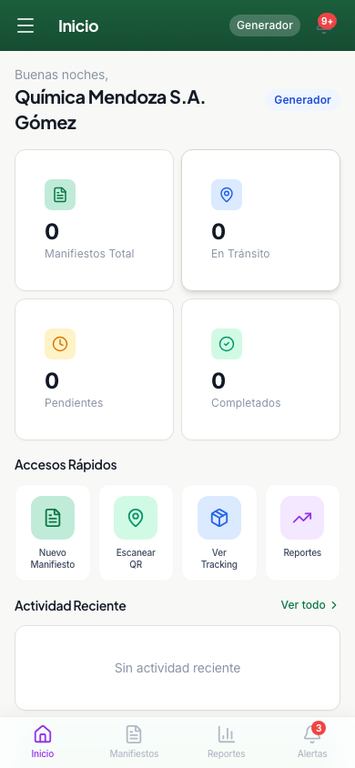
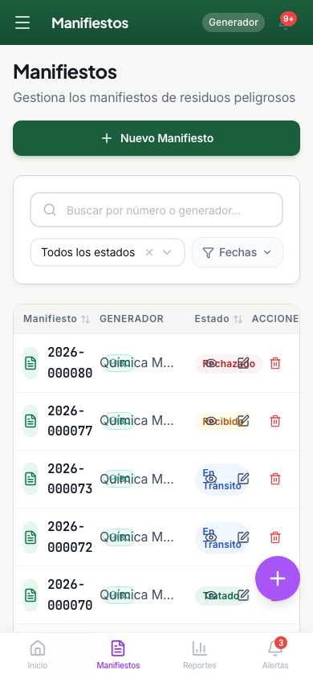
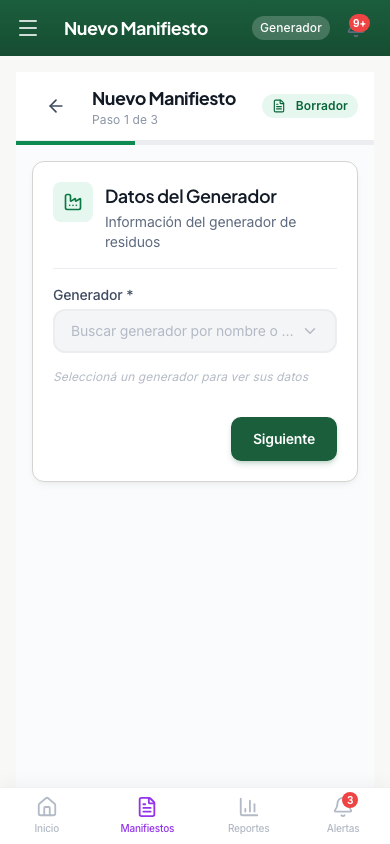
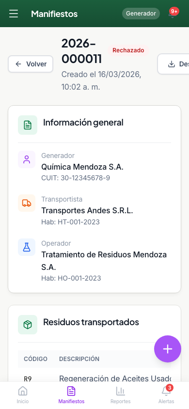
Dashboard del Generador
Vision personalizada con KPIs filtrados a los manifiestos propios del generador:
- Borradores: Manifiestos en preparacion que aun no fueron firmados.
- En transito: Manifiestos cuyo residuo ya fue retirado por un transportista.
- Tratados: Manifiestos cuyo ciclo se completo exitosamente.
- Actividad reciente: Ultimos movimientos en los manifiestos del generador.
Lista de Manifiestos
Tabla con busqueda por numero y filtros por estado. En mobile, cada manifiesto se muestra como tarjeta con numero, estado (badge de color), transportista asignado y fecha de creacion. Toque en la tarjeta para acceder al detalle completo.
Nuevo Manifiesto (Formulario Multi-Paso)
Formulario optimizado para mobile dividido en pasos secuenciales:
- Paso 1 - Actores: Seleccionar generador, transportista y operador. Al seleccionar un actor, se auto-completan automaticamente los campos de CUIT, telefono, domicilio y numero de habilitacion.
- Paso 2 - Residuos: Agregar uno o mas residuos con tipo, cantidad y unidad.
- Paso 3 - Confirmacion: Revisar todos los datos y crear el manifiesto en estado BORRADOR.
Detalle y Firma
Desde la pantalla de detalle, el generador puede:
- Ver toda la informacion del manifiesto, residuos incluidos y timeline de eventos.
- Firmar/Aprobar un manifiesto en estado BORRADOR para pasarlo a APROBADO.
- Cancelar un manifiesto que aun no fue retirado.
- Descargar PDF del manifiesto en cualquier estado.
- Descargar Certificado de disposicion final cuando el manifiesto llega a estado TRATADO.
4.6 Pantallas del Transportista
Rol TRANSPORTISTA: Responsable de retirar los residuos del generador, transportarlos con tracking GPS en tiempo real, y entregarlos al operador de tratamiento. La interfaz mobile esta especialmente optimizada para este rol, que opera exclusivamente desde el dispositivo movil durante los viajes.
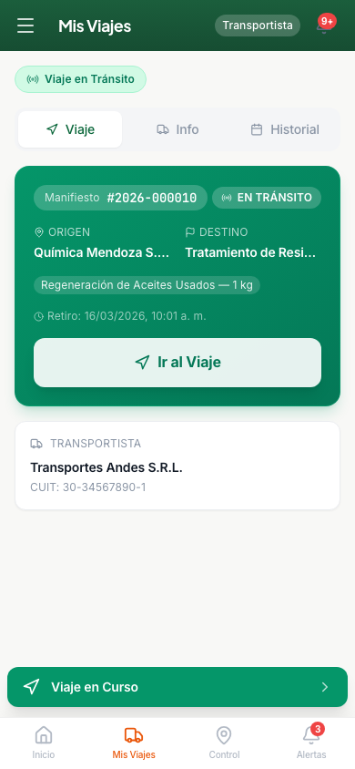
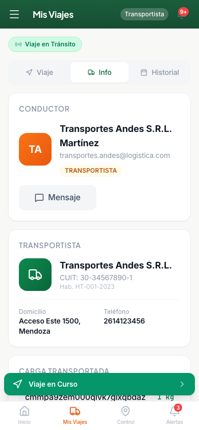
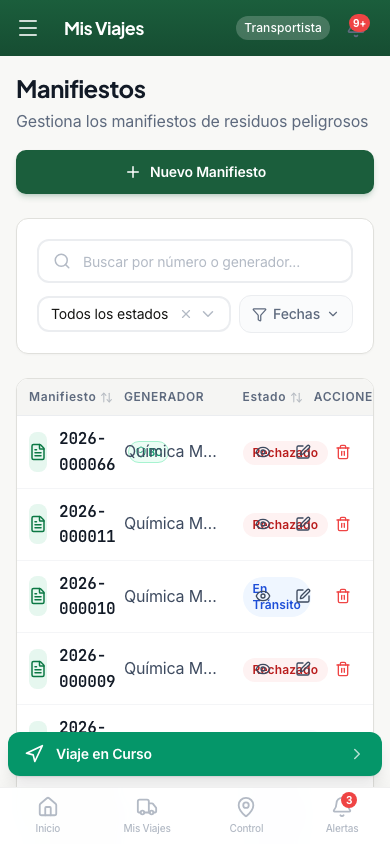
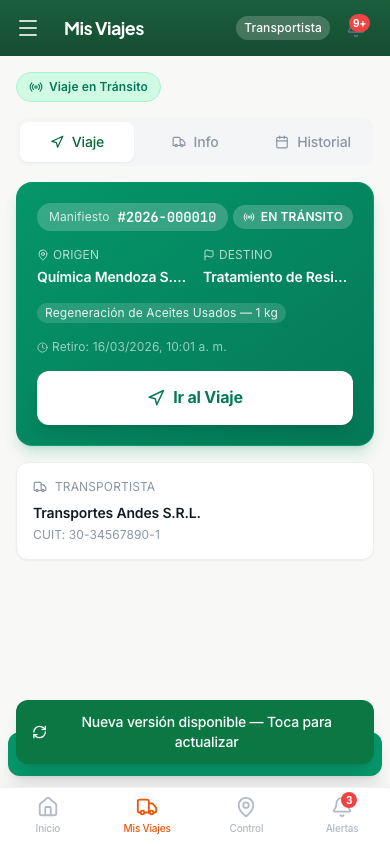
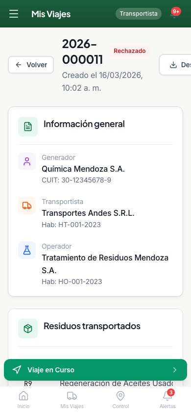
Dashboard del Transportista
El dashboard del transportista incluye elementos exclusivos ademas de los KPIs:
- Banner de viaje activo (EN_TRANSITO): Tarjeta verde pulsante con animacion que muestra el numero de manifiesto y boton "Ir al viaje". Aparece entre el saludo y la grilla de KPIs.
- Banner de viajes pendientes (APROBADO): Tarjeta de advertencia con lista de manifiestos aprobados listos para retirar.
- KPIs propios: Viajes completados, en transito, pendientes de retiro.
Perfil del Transportista (3 Tabs)
La pantalla de perfil tiene tres pestanas con funcionalidad diferenciada:
| Tab | Contenido | Acciones |
|---|---|---|
| Viaje | Viaje activo EN_TRANSITO (con mapa y controles) o lista de viajes APROBADO | Ir al viaje activo, Tomar viaje pendiente |
| Info | Datos de la empresa, vehiculos registrados, conductores/choferes | CRUD de vehiculos y conductores (agregar, editar, eliminar) |
| Historial | Lista de viajes completados con fechas y estados finales | Ver detalle de viajes pasados |
Mis Viajes (Manifiestos)
Lista de manifiestos asignados al transportista, filtrados automaticamente por transportistaId. Cada tarjeta muestra numero de manifiesto, generador de origen, operador de destino, estado actual con badge de color y fecha.
Flujo "Tomar Viaje"
El flujo completo desde la asignacion hasta el inicio del tracking GPS:
- Asignacion: Un manifiesto APROBADO aparece en el banner del Dashboard o en el Tab Viaje del perfil.
- Seleccion: El transportista toca "Tomar Viaje" en la tarjeta del manifiesto.
- Pantalla ViajeEnCurso: Se abre el panel de control del viaje con toda la informacion del manifiesto.
- Confirmar Retiro: El transportista toca el boton "Confirmar Retiro" para cambiar el estado a EN_TRANSITO.
- GPS Activo: Automaticamente se activa el tracking GPS y comienza la transmision de ubicacion cada 30 segundos.
Guard de Viaje Activo
Una proteccion automatica (ActiveTripGuard) valida el estado del manifiesto antes de redirigir al panel de viaje. Si el manifiesto ya alcanzo un estado terminal (ENTREGADO, TRATADO, CANCELADO), la redireccion se cancela para evitar bucles infinitos.
4.7 Pantallas del Operador
Rol OPERADOR: Responsable de recibir los residuos del transportista, verificar las cargas, registrar el pesaje, aplicar el tratamiento correspondiente y emitir el certificado de disposicion final. El operador cierra el ciclo de trazabilidad del manifiesto.
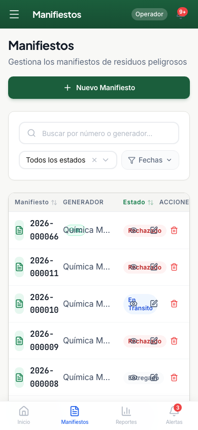
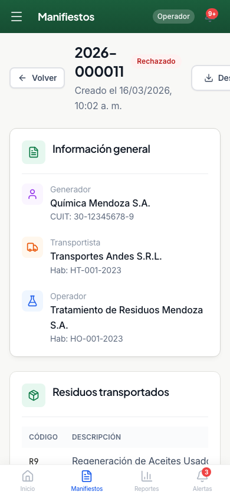

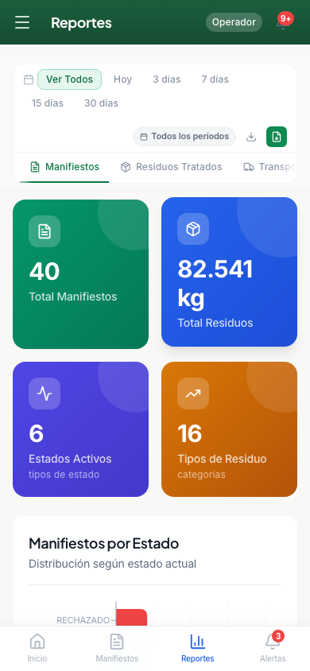
Dashboard del Operador
KPIs enfocados en la recepcion y tratamiento de residuos:
- Manifiestos entrantes: Cantidad de manifiestos en estado ENTREGADO esperando recepcion.
- En tratamiento: Manifiestos actualmente siendo procesados.
- Tratados: Manifiestos completados con certificado emitido.
- Actividad reciente: Ultimos manifiestos recibidos o procesados.
Lista de Manifiestos del Operador
Manifiestos filtrados automaticamente por operadorId. Las tarjetas muestran numero, generador de origen, transportista, tipo de residuo y estado actual. Los manifiestos en estado ENTREGADO se destacan visualmente para priorizar la recepcion.
Flujo de Recepcion y Tratamiento
El operador gestiona la etapa final del ciclo de vida del manifiesto:
- Confirmar Recepcion: El operador verifica la carga y confirma la recepcion (ENTREGADO → RECIBIDO). Alternativamente, puede Rechazar Carga si hay discrepancias (ENTREGADO → RECHAZADO).
- Registrar Pesaje: Modal para ingresar el peso real de cada residuo recibido. Los datos de pesaje se almacenan y se comparan con las cantidades declaradas por el generador.
- Registrar Tratamiento: Indica que el residuo comenzo a ser procesado (RECIBIDO → EN_TRATAMIENTO).
- Cerrar Manifiesto: Confirma que el tratamiento se completo exitosamente (EN_TRATAMIENTO → TRATADO). Esto habilita la generacion del Certificado de Disposicion Final.
Reportes del Operador
Acceso a reportes filtrados por el operador propio, con graficos de residuos recibidos por tipo, tasa de tratamiento, y exportacion a PDF/CSV.
4.8 Tracking GPS y Viaje en Curso
Exclusivo para TRANSPORTISTA: El sistema de tracking GPS permite el monitoreo en tiempo real de la posicion del vehiculo durante el transporte de residuos peligrosos. Soporta hasta 50 viajes simultaneos con transmision cada 30 segundos.
Panel de Control del Viaje
La pantalla ViajeEnCursoTransportista muestra toda la informacion del viaje activo:
- Timer: Tiempo transcurrido desde la fecha de retiro (
fechaRetirodel servidor, no un contador local). - Velocidad: Velocidad actual reportada por el GPS del dispositivo.
- Coordenadas: Latitud y longitud actuales.
- Direccion: Rumbo de desplazamiento (heading).
- Informacion del manifiesto: Numero, generador, operador, residuos.
Estado del GPS (Maquina de Estados)
El GPS del dispositivo pasa por diferentes estados durante el viaje:
| Estado | Indicador | Descripcion |
|---|---|---|
checking | Gris | Verificando permisos de geolocalizacion |
acquiring | Amarillo pulsante | Obteniendo primera posicion GPS |
active | Verde | GPS activo, transmitiendo cada 30 segundos |
denied | Rojo | Permisos de GPS denegados por el usuario |
unavailable | Rojo | GPS no disponible en el dispositivo |
error | Rojo | Error en la obtencion de posicion |
Transmision de Datos
Cada 30 segundos, el dispositivo envia la posicion actual al backend:
| Dato | Tipo | Requerido |
|---|---|---|
| latitud | number | Si |
| longitud | number | Si |
| velocidad | number | No (puede ser null) |
| direccion | number | No (heading en grados) |
Pausa y Reanudacion
El transportista puede pausar y reanudar el viaje durante el transporte. Cada accion registra un incidente (PAUSA o REANUDACION) en el backend y se persiste en localStorage para sobrevivir cierres accidentales de la aplicacion.
Registro de Incidentes
Durante un viaje EN_TRANSITO, el transportista puede registrar incidentes como:
- Averia: Problema mecanico o del vehiculo.
- Pausa: Detencion temporal planificada.
- Reanudacion: Continuacion despues de una pausa.
Cada incidente se registra con timestamp y se muestra en la timeline del manifiesto.
Confirmar Entrega
Al llegar al operador de destino, el transportista toca "Confirmar Entrega" para cambiar el estado del manifiesto de EN_TRANSITO a ENTREGADO. Esto detiene el tracking GPS y limpia el cache de verificacion del manifiesto.
Resiliencia y Modo Offline
El tracking GPS esta disenado para funcionar de manera robusta ante perdidas de conexion:
| Mecanismo | Descripcion |
|---|---|
| Cola de pendientes | Hasta 5 puntos GPS no enviados se almacenan en pendingUpdatesRef |
| Persistencia localStorage | La cola se guarda en gps_pending_{id} al cerrar o enviar a background la app |
| IndexedDB backup | Cola respaldada en sync_queue de IndexedDB como segunda capa de seguridad |
| Flush al montar | Al reabrir la app, los puntos guardados se envian automaticamente al backend |
| Cleanup de watchPosition | Callback cleanupGps + listener beforeunload previene watchers zombie |
4.9 Escaner QR
La aplicacion incluye un escaner de codigos QR integrado que permite acceder rapidamente a la informacion de un manifiesto escaneando su codigo impreso.
Como Funciona
- Acceder al escaner desde el menu lateral (Herramientas → Escaner QR).
- La aplicacion solicita permiso para acceder a la camara del dispositivo.
- Apuntar la camara al codigo QR impreso en el manifiesto fisico.
- La libreria
html5-qrcodedecodifica el contenido del QR automaticamente. - Se extrae el numero de manifiesto y se navega a la pantalla de verificacion publica.
Verificacion Publica
La verificacion de manifiesto via QR no requiere autenticacion. Cualquier persona puede escanear el codigo QR de un manifiesto y verificar su autenticidad y estado actual a traves del endpoint publico /api/manifiestos/verificar/:numero.
Comportamiento Offline
El escaner funciona sin conexion a internet (la decodificacion del QR es local). Sin embargo, la navegacion al detalle del manifiesto requiere conexion al servidor para obtener los datos actualizados.
4.10 Modo Offline
Estrategia Network-First: El Service Worker prioriza siempre la red. Solo cuando la conexion no esta disponible se recurre al cache local. Las solicitudes a la API nunca se cachean para garantizar datos actualizados.
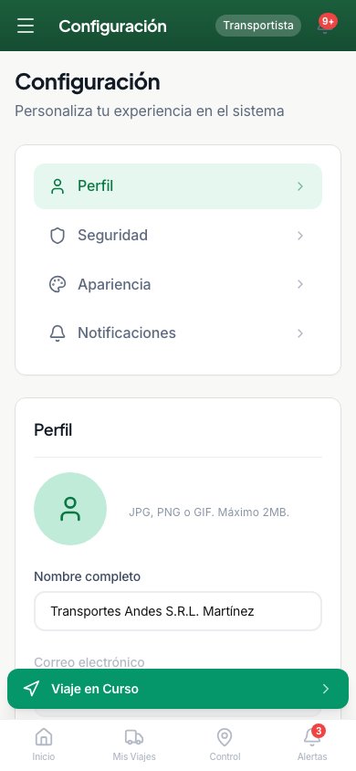
Service Worker
| Componente | Detalle |
|---|---|
| Estrategia | Network-first con fallback a cache |
| Cache name | trazabilidad-rrpp-v14 |
| Pagina offline | Fallback personalizado en /offline.html |
| Exclusiones | Solicitudes a /api/ nunca se cachean |
| Recursos cacheados | HTML, CSS, JS, imagenes, fuentes |
Estrategia de Cache
- Primero intenta obtener el recurso de la red.
- Si la red no esta disponible, busca en el cache local.
- Si el recurso no esta en cache, muestra la pagina de fallback offline.
- Las solicitudes a la API (
/api/) NO se cachean para garantizar datos actualizados. - Los recursos estaticos se cachean automaticamente al ser visitados.
Comportamiento Offline por Tipo de Operacion
| Operacion | Disponible Offline | Comportamiento |
|---|---|---|
| Ver pantallas cacheadas | Si | Se muestran desde el cache del Service Worker |
| Enviar puntos GPS | Parcial | Se almacenan en localStorage + IndexedDB y se envian al reconectar |
| Crear manifiestos | No | Requiere conexion al servidor |
| Cambiar estados | No | Requiere conexion al servidor |
| Ver reportes | No | Requiere datos actualizados del servidor |
| Escanear QR | Parcial | Escaneo local funciona; detalle requiere conexion |
| Ver notificaciones | No | Requiere polling al servidor |
Indicador de Conectividad
El componente ConnectivityIndicator se muestra automaticamente segun el estado de la conexion:
- Online: Sin indicador visible (comportamiento normal).
- Offline: Barra amarilla en la parte superior: "Sin conexion a internet".
- Reconectando: Barra con animacion pulsante indicando intento de reconexion.
- Reconectado: Barra verde momentanea que desaparece tras 3 segundos.
Sincronizacion Automatica
El hook useConnectivity realiza un health ping al servidor cada 30 segundos. Al detectar reconexion, ejecuta automaticamente el flush de todos los datos pendientes (puntos GPS, estados de viaje) almacenados durante el periodo offline.
Persistencia de Estado del Viaje
Para transportistas, el estado del viaje se persiste localmente para sobrevivir reinicios:
| Clave localStorage | Contenido | Uso |
|---|---|---|
sitrep_active_trip_id | ID del manifiesto activo | Redireccion automatica al viaje al abrir la app |
viaje_snapshot_{id} | Ultimo snapshot del viaje | Mostrar datos mientras se recarga del servidor |
viaje_status_{id} | Estado GPS (activo/pausa) | Reanudar tracking tras reinicio |
gps_pending_{id} | Cola de puntos GPS no enviados | Flush al servidor al montar el componente |
4.11 Tour de Bienvenida
SITREP incluye dos mecanismos de onboarding complementarios para guiar a los usuarios nuevos en su primer acceso a la aplicacion.
OnboardingTour (Tour Interactivo Desktop/Mobile)
Un tour guiado de 5 pasos con efecto spotlight que resalta los elementos clave de la interfaz:
- Dashboard: Panel principal con KPIs y resumen de actividad del sistema.
- Manifiestos: Listado y gestion de manifiestos de residuos peligrosos.
- Centro de Control: Mapa en tiempo real con transportes activos y capas de datos.
- Reportes: Analisis interactivo con graficos y exportacion PDF/CSV.
- Configuracion: Preferencias personales y ajustes de notificaciones.
El tour se activa automaticamente en el primer login y puede relanzarse desde la pagina de Ayuda.
DemoAppOnboarding (Carrusel por Rol - Mobile)
Al primer acceso desde la aplicacion movil PWA, se muestra un carrusel de bienvenida con slides especificos segun el rol del usuario:
| Rol | Slides del Carrusel |
|---|---|
| ADMIN | Vision general del sistema, herramientas avanzadas (impersonar usuarios, barra de comandos Cmd+K, importacion CSV masiva), Centro de Control en tiempo real |
| GENERADOR | Como crear manifiestos paso a paso, trazabilidad completa del residuo desde generacion hasta tratamiento, descarga de certificados |
| TRANSPORTISTA | Gestion de viajes asignados, tracking GPS en tiempo real, administracion de flota (vehiculos y choferes) |
| OPERADOR | Recepcion y verificacion de cargas, registro de pesaje y tratamiento, emision de certificados de disposicion final |
El carrusel puede relanzarse en cualquier momento desde la pagina de Ayuda dentro de la aplicacion.
4.12 Configuracion
La pantalla de configuracion permite al usuario personalizar su experiencia y gestionar su cuenta desde el dispositivo movil.
Opciones Disponibles
| Opcion | Descripcion |
|---|---|
| Editar Perfil | Modificar nombre y datos personales del usuario |
| Cambiar Contrasena | Requiere ingresar la contrasena actual y la nueva (validacion de complejidad) |
| Notificaciones | Toggle para activar/desactivar notificaciones por email |
| Ayuda | Acceso a la documentacion y opcion de relanzar el Tour de Bienvenida |
| Cerrar Sesion | Cierra la sesion activa y limpia todos los datos locales |
Comportamiento del Logout
Al cerrar sesion, la aplicacion realiza una limpieza completa de datos locales para garantizar la seguridad:
- Tokens JWT (access y refresh).
sitrep_active_trip_id— ID del viaje activo.viaje_snapshot_*— Snapshots de datos de viaje.viaje_status_*— Estado del GPS.gps_pending_*— Cola de puntos GPS pendientes.
Esto asegura que al iniciar sesion con otro usuario, no se mezclen datos de sesiones anteriores.
5. Arquitectura y Datos
5.1 Arquitectura General
Stack Tecnologico
| Capa | Tecnologia | Version |
|---|---|---|
| Runtime | Node.js | 20.19.4 |
| Framework Backend | Express.js | ^4.18.2 |
| Lenguaje Backend | TypeScript | ^5.2.2 |
| ORM | Prisma | ^5.6.0 |
| Base de Datos | PostgreSQL | 15-alpine (Docker) |
| Framework Frontend | React | ^19.2.0 |
| Build Tool | Vite | ^7.2.4 |
| Lenguaje Frontend | TypeScript | ~5.9.3 |
| Estado/Data | TanStack React Query | ^5.90.20 |
| Graficos | Recharts | ^3.5.1 |
| Mapas | Leaflet + React Leaflet | ^1.9.4 + ^5.0.0 |
| PDF (client) | jsPDF + jspdf-autotable | ^4.1.0 + ^5.0.7 |
| PDF (server) | PDFKit | ^0.17.2 |
| CSS | Tailwind CSS | ^3.4.19 |
| Iconos | Lucide React | ^0.555.0 |
| QR | qrcode.react + qrcode (server) | ^4.2.0 + ^1.5.3 |
| HTTP Client | Axios | ^1.13.2 |
| Router | React Router DOM | ^7.10.1 |
| E2E Testing | Playwright | ^1.58.2 |
Despliegue en Produccion
| Componente | Configuracion |
|---|---|
| Servidor | VPS en 23.105.176.45 |
| Dominio | sitrep.ultimamilla.com.ar |
| PM2 | Modo cluster, 2 instancias, puerto 3002, 512MB por instancia |
| Nginx | Reverse proxy /api/ hacia localhost:3002, SPA fallback para frontend |
| SSL | Let's Encrypt (renovacion automatica) |
| Docker | Contenedor PostgreSQL (directus-admin-database-1) |
Rutas en el Servidor
| Componente | Ruta en Servidor |
|---|---|
| Frontend principal | /var/www/sitrep/ |
| PWA App mobile | /var/www/sitrep/app/ |
| Backend (codigo compilado) | /var/www/sitrep-backend/ |
| Backend .env | /var/www/sitrep-backend/.env (symlink) |
| Configuracion Nginx | /etc/nginx/sites-available/sitrep.ultimamilla.com.ar |
| Logs PM2 | /root/.pm2/logs/sitrep-backend-*.log |
Configuracion de Vite (Build)
El sistema utiliza tres configuraciones de build para diferentes targets:
| Configuracion | Base Path | Output Dir | Entry Point |
|---|---|---|---|
vite.config.ts | / | dist/ | index.html |
vite.config.v6.ts | /v6/ | dist-v6/ | src-v6/main.tsx (dev only) |
vite.config.app.ts | /app/ | dist-app/ | app.html |
Optimizacion de Bundle (Vendor Splitting)
Vite divide automaticamente los bundles de vendor para optimizar el caching y lazy loading:
| Chunk | Tamano | Contenido | Carga |
|---|---|---|---|
vendor-react | ~45KB | react, react-dom, react-router-dom | Siempre (critico) |
vendor-query | ~36KB | @tanstack/react-query | Siempre (critico) |
vendor-charts | ~369KB | recharts | Bajo demanda (paginas con graficos) |
vendor-maps | ~152KB | leaflet, react-leaflet | Bajo demanda (paginas con mapas) |
vendor-pdf | ~408KB | jspdf, jspdf-autotable | Bajo demanda (exportacion PDF) |
Los datos de enriquecimiento estaticos (generadores-enrichment.ts, ~647KB fuente) se compilan como chunk separado (~541KB, 122KB gzipped) y se cargan lazy per page.
Configuracion PM2
| Parametro | Valor |
|---|---|
| Process name | sitrep-backend |
| Script | dist/index.js |
| Exec mode | cluster |
| Instances | 2 |
| Port | 3002 |
| Max memory | 512MB por instancia |
| CWD | /var/www/sitrep-backend/ |
Configuracion Nginx
Nginx actua como reverse proxy y servidor de archivos estaticos:
- Frontend principal: Sirve archivos estaticos desde
/var/www/sitrep/con SPA fallback (try_files $uri $uri/ /index.html). - PWA App: Sirve desde
/var/www/sitrep/app/con SPA fallback a/app/app.html. - API: Reverse proxy de
/api/ahttp://127.0.0.1:3002. - SSL: Certificado Let's Encrypt con renovacion automatica via certbot.
- Headers: Configuracion de cache para assets estaticos, compresion gzip, y headers de seguridad adicionales.
Hooks y Hooks Frontend
El frontend utiliza hooks personalizados para la gestion de datos y estado:
| Hook | Archivo | Funcion |
|---|---|---|
useDashboardStats | hooks/useDashboard.ts | Estadisticas del dashboard con auto-refresco cada 30 segundos |
useReporteManifiestos | hooks/useReportes.ts | Datos de reportes de manifiestos por periodo |
useReporteTratados | hooks/useReportes.ts | Datos de reportes de residuos tratados |
useReporteTransporte | hooks/useReportes.ts | Datos de reportes de transporte |
useExportarReporte | hooks/useReportes.ts | Mutacion para exportar reportes a CSV |
useManifiestos | hooks/useManifiestos.ts | Lista y operaciones CRUD de manifiestos |
useAlertas | hooks/useAlertas.ts | Alertas del sistema (condicionado al rol ADMIN) |
useActores | hooks/useActores.ts | CRUD hooks para generadores, transportistas, operadores |
usePWAInstall | hooks/usePWAInstall.ts | Deteccion de instalabilidad PWA (canInstall, isInstalled, isIOS, promptInstall()) |
useConnectivity | hooks/useConnectivity.ts | Health ping cada 30s, sincronizacion al reconectar |
Servicios Frontend
Los servicios encapsulan las llamadas a la API REST:
| Servicio | Archivo | Base API | Notas |
|---|---|---|---|
manifiestoService | services/manifiesto.service.ts | /manifiestos/* | CRUD manifiestos, acciones de workflow, GPS |
reporteService | services/reporte.service.ts | /reportes/* | Incluye mapFilters() que traduce fechaDesde/fechaHasta a fechaInicio/fechaFin |
actoresService | services/actores.service.ts | /actores/* | CRUD generadores, transportistas, operadores |
catalogoService | services/catalogo.service.ts | /catalogos/* | Tipos de residuo, generadores, transportistas, operadores, vehiculos, choferes, tratamientos |
analyticsService | services/analytics.service.ts | /analytics/* | Parcialmente implementado. getDashboardStats funciona, otros endpoints retornan vacio via try/catch. |
Utilidades Frontend
| Utilidad | Archivo | Funcion |
|---|---|---|
exportReportePDF | utils/exportPdf.ts | Genera PDF profesional con jsPDF: header SITREP verde, KPI cards, tabla autoTable, footer paginado |
downloadCsv | utils/exportCsv.ts | Genera y descarga archivo CSV desde datos tabulares |
formatRelativeTime | utils/formatters.ts | Formato relativo tipo "hace 5 minutos" |
ACTOR_ICONS | utils/map-icons.ts | Leaflet divIcons: Generador (purple + Factory), Transportista (orange + Truck), Operador (blue + FlaskConical), Transit (red pulsing) |
createClusterIcon | utils/map-icons.ts | Icono de agrupamiento para mas de 50 marcadores en un grid de 0.05 grados |
Diseno del Frontend
| Aspecto | Detalle |
|---|---|
| Colores | Primary #0D8A4F, Institutional #1B5E3C, semantic success/warning/error/info |
| Tipografia | Plus Jakarta Sans (display), Inter (body), JetBrains Mono (monospace) |
| Efectos | Glassmorphism, spring easing, stagger-children animations, hover-lift effects |
| Componentes UI | 17+ componentes reutilizables en src-v6/components/ui/ |
| Iconos | Lucide React (stroke-based, 14x14, blancos sobre fondo de color) |
| Mapas | Leaflet + React Leaflet con marcadores SVG custom por tipo de actor |
Patrones de Layout CSS
Lecciones aprendidas sobre layout:
position: stickysolo funciona si el elemento esta dentro de un contenedor con scroll. El root layout debe usarh-screen overflow-hiddenpara forzar que<main>sea el scroll container.- Los mapas Leaflet tienen z-index 400+. Usar
isolateen content wrappers para contener el stacking context. - En CSS grid, columnas se estiran al alto de la fila. Usar
self-starten columnas con contenido variable para evitar whitespace innecesario. - Modales sobre headers fijos: si el header tiene
h-16(64px) yz-30, los modales conz-50necesitanpt-20(80px).
5.2 Modelo de Datos
El modelo de datos se compone de las siguientes entidades principales definidas en el esquema Prisma:
Entidades Principales
| Entidad | Campos Clave |
|---|---|
| Usuario | id, email, password, rol, cuit, nombre, apellido, empresa, telefono, activo |
| Generador | id, usuarioId, razonSocial, cuit, domicilio, telefono, email, numeroInscripcion, categoria, lat, lng |
| Transportista | id, usuarioId, razonSocial, cuit, domicilio, telefono, email, numeroHabilitacion, lat, lng |
| Operador | id, usuarioId, razonSocial, cuit, domicilio, telefono, email, numeroHabilitacion, categoria, lat, lng |
| Vehiculo | id, transportistaId, patente, marca, modelo, anio, capacidad, numeroHabilitacion, vencimiento |
| Chofer | id, transportistaId, nombre, apellido, dni, licencia, vencimiento, telefono |
| TipoResiduo | id, codigo, nombre, descripcion, categoria, caracteristicas, peligrosidad |
| Manifiesto | id, numero, generadorId, transportistaId, operadorId, estado, fechas[], qrCode |
| ManifiestoResiduo | id, manifiestoId, tipoResiduoId, cantidad, unidad, cantidadRecibida, tipoDiferencia |
| EventoManifiesto | id, manifiestoId, tipo, descripcion, ubicacion, lat, lng, usuarioId |
| TrackingGPS | id, manifiestoId, latitud, longitud, velocidad, direccion, precision, timestamp |
| TratamientoAutorizado | id, operadorId, tipoResiduoId, metodo, descripcion, capacidad |
| Notificacion | id, usuarioId, tipo, titulo, mensaje, manifiestoId, leida, prioridad |
| ReglaAlerta | id, nombre, evento, condicion, destinatarios, activa |
| AlertaGenerada | id, reglaId, manifiestoId, datos, estado |
| AnomaliaTransporte | id, manifiestoId, tipo, descripcion, lat, lng, severidad |
| Auditoria | id, accion, modulo, datosAntes, datosDespues, ip, userAgent, usuarioId, manifiestoId |
| AnalyticsLog | id, endpoint, method, statusCode, responseTime, userId |
| RefreshToken | id, token, userId, expiresAt, revoked |
Relaciones entre Entidades
Las relaciones principales del modelo de datos son:
- Usuario 1:1 Generador | Transportista | Operador (un usuario puede ser uno de los tres tipos de actor)
- Generador 1:N Manifiesto (un generador crea multiples manifiestos)
- Transportista 1:N Manifiesto (un transportista se asigna a multiples manifiestos)
- Transportista 1:N Vehiculo (una empresa tiene multiples vehiculos)
- Transportista 1:N Chofer (una empresa tiene multiples choferes)
- Operador 1:N Manifiesto (un operador recibe multiples manifiestos)
- Operador 1:N TratamientoAutorizado (un operador tiene multiples tratamientos autorizados)
- Manifiesto 1:N ManifiestoResiduo (un manifiesto contiene uno o mas residuos)
- Manifiesto 1:N EventoManifiesto (un manifiesto tiene multiples eventos en su timeline)
- Manifiesto 1:N TrackingGPS (un manifiesto tiene multiples puntos GPS durante el transporte)
- Manifiesto 1:N Notificacion (un manifiesto genera multiples notificaciones)
- Manifiesto 1:N AnomaliaTransporte (un manifiesto puede tener multiples anomalias detectadas)
- TipoResiduo 1:N ManifiestoResiduo (un tipo de residuo aparece en multiples manifiestos)
- ReglaAlerta 1:N AlertaGenerada (una regla puede generar multiples alertas)
- Usuario 1:N Auditoria (un usuario genera multiples registros de auditoria)
- Usuario 1:N RefreshToken (un usuario puede tener multiples tokens de refresco activos)
Base de Datos
| Parametro | Valor |
|---|---|
| Motor | PostgreSQL |
| Contenedor | directus-admin-database-1 (Docker) |
| Nombre de BD | trazabilidad_rrpp |
| Connection Pool | 20 por instancia PM2 (connection_limit=20&pool_timeout=10) |
| max_connections | 100 |
| ORM | Prisma con prisma.$transaction() para operaciones criticas |
Indices de Base de Datos (16 indices)
| Tabla | Indice | Columnas |
|---|---|---|
| manifiestos | idx_manifiestos_generador | generadorId |
| manifiestos | idx_manifiestos_transportista | transportistaId |
| manifiestos | idx_manifiestos_operador | operadorId |
| manifiestos | idx_manifiestos_estado | estado |
| manifiestos | idx_manifiestos_created | createdAt |
| manifiestos | idx_manifiestos_estado_created | estado, createdAt |
| manifiestos | idx_manifiestos_numero | numero |
| manifiestos | idx_manifiestos_trans_estado | transportistaId, estado |
| manifiestos_residuos | idx_manif_residuos_manif | manifiestoId |
| eventos_manifiesto | idx_eventos_manifiesto | manifiestoId |
| eventos_manifiesto | idx_eventos_manif_tipo | manifiestoId, tipo |
| tracking_gps | idx_tracking_manifiesto | manifiestoId |
| tracking_gps | idx_tracking_timestamp | timestamp |
| tracking_gps | idx_tracking_manif_ts | manifiestoId, timestamp |
| auditorias | idx_auditorias_manifiesto | manifiestoId |
| auditorias | idx_auditorias_created | createdAt |
5.3 Esquema de Servicios API
Documentacion Interactiva de la API (OpenAPI/Swagger)
Explore todos los endpoints, pruebe requests, vea schemas de datos y codigos de respuesta en tiempo real.
Modulos API
| Modulo | Base | Descripcion |
|---|---|---|
| Autenticacion | /api/auth | Login, registro, refresh token, perfil |
| Manifiestos | /api/manifiestos | CRUD, workflow de estados, dashboard, GPS |
| Actores | /api/actores | Generadores, transportistas, operadores |
| Catalogos | /api/catalogos | Tipos de residuo, actores, vehiculos, tratamientos |
| Reportes | /api/reportes | Manifiestos, tratados, transporte, exportacion CSV |
/api/pdf | Generacion de PDF de manifiestos y certificados | |
| Notificaciones | /api/notificaciones | Lectura, marcado, eliminacion |
| Alertas | /api/alertas | Reglas, alertas generadas, resolucion |
| Centro de Control | /api/centro-control | Actividad en tiempo real, capas, estadisticas |
Endpoints Principales
| Metodo | Endpoint | Descripcion |
|---|---|---|
| POST | /api/auth/login | Iniciar sesion |
| POST | /api/auth/register | Registrar usuario |
| POST | /api/auth/refresh | Renovar access token |
| GET | /api/auth/perfil | Obtener perfil autenticado |
| GET | /api/manifiestos | Listar manifiestos (paginado) |
| POST | /api/manifiestos | Crear manifiesto |
| GET | /api/manifiestos/:id | Detalle de manifiesto |
| GET | /api/manifiestos/dashboard | Estadisticas del dashboard |
| POST | /api/manifiestos/:id/aprobar | Aprobar manifiesto (BORRADOR a APROBADO) |
| POST | /api/manifiestos/:id/confirmar-retiro | Confirmar retiro (APROBADO a EN_TRANSITO) |
| POST | /api/manifiestos/:id/entregar | Confirmar entrega (EN_TRANSITO a ENTREGADO) |
| POST | /api/manifiestos/:id/recibir | Confirmar recepcion (ENTREGADO a RECIBIDO) |
| POST | /api/manifiestos/:id/tratamiento | Registrar tratamiento (RECIBIDO a EN_TRATAMIENTO) |
| POST | /api/manifiestos/:id/cerrar | Cerrar manifiesto (a TRATADO) |
| POST | /api/manifiestos/:id/rechazar | Rechazar carga (ENTREGADO a RECHAZADO) |
| POST | /api/manifiestos/:id/incidente | Registrar incidente durante transporte |
| POST | /api/manifiestos/:id/cancelar | Cancelar manifiesto |
| POST | /api/manifiestos/:id/ubicacion | Actualizar posicion GPS |
| GET | /api/catalogos/residuos | Catalogo de tipos de residuo |
| GET | /api/catalogos/generadores | Lista de generadores |
| GET | /api/catalogos/transportistas | Lista de transportistas |
| GET | /api/catalogos/operadores | Lista de operadores |
| GET | /api/catalogos/vehiculos | Lista de vehiculos |
| GET | /api/catalogos/choferes | Lista de choferes |
| GET | /api/catalogos/tratamientos | Lista de tratamientos autorizados |
| GET | /api/actores/generadores | CRUD generadores (GET lista) |
| POST | /api/actores/generadores | Crear generador |
| PUT | /api/actores/generadores/:id | Actualizar generador |
| DEL | /api/actores/generadores/:id | Eliminar generador |
| GET | /api/actores/transportistas | CRUD transportistas (GET lista) |
| POST | /api/actores/transportistas | Crear transportista |
| PUT | /api/actores/transportistas/:id | Actualizar transportista |
| DEL | /api/actores/transportistas/:id | Eliminar transportista |
| GET | /api/actores/operadores | CRUD operadores (GET lista) |
| POST | /api/actores/operadores | Crear operador |
| PUT | /api/actores/operadores/:id | Actualizar operador |
| DEL | /api/actores/operadores/:id | Eliminar operador |
| GET | /api/reportes/manifiestos | Reporte de manifiestos |
| GET | /api/reportes/tratados | Reporte de residuos tratados |
| GET | /api/reportes/transporte | Reporte de transporte |
| GET | /api/reportes/exportar/:tipo | Exportar CSV (max 10,000 filas) |
| GET | /api/pdf/manifiesto/:id | PDF del manifiesto |
| GET | /api/pdf/certificado/:id | Certificado de disposicion (solo TRATADO) |
| GET | /api/notificaciones | Listar notificaciones |
| PUT | /api/notificaciones/:id/leida | Marcar como leida |
| PUT | /api/notificaciones/todas-leidas | Marcar todas como leidas |
| DEL | /api/notificaciones/:id | Eliminar notificacion |
| GET | /api/alertas/reglas | Listar reglas de alerta |
| POST | /api/alertas/reglas | Crear regla de alerta |
| PUT | /api/alertas/reglas/:id | Actualizar regla |
| DEL | /api/alertas/reglas/:id | Eliminar regla |
| GET | /api/alertas | Listar alertas generadas |
| PUT | /api/alertas/:id/resolver | Resolver alerta |
| POST | /api/anomalias/detectar/:manifiestoId | Detectar anomalias de transporte |
| GET | /api/anomalias/:manifiestoId | Listar anomalias del manifiesto |
| PUT | /api/anomalias/:id/resolver | Resolver anomalia |
| POST | /api/carga-masiva/generadores | Importar generadores desde CSV |
| POST | /api/carga-masiva/transportistas | Importar transportistas desde CSV |
| POST | /api/carga-masiva/operadores | Importar operadores desde CSV |
| GET | /api/carga-masiva/plantilla/:tipo | Descargar plantilla CSV |
| GET | /api/centro-control/actividad | Actividad en tiempo real por capas |
Middleware Stack
| Middleware | Funcion | Configuracion |
|---|---|---|
| Helmet | Headers de seguridad HTTP | CSP, HSTS, X-Frame-Options, X-Content-Type-Options, Referrer-Policy |
| Compression | Compresion gzip | ~7x reduccion de payload. Aplicado a todas las respuestas JSON y HTML. |
| CORS | Control de origen cruzado | Configurado exclusivamente para el dominio de produccion (sitrep.ultimamilla.com.ar). |
| Rate Limiting | Proteccion contra abuso | 600 solicitudes por minuto por direccion IP. Soporta CGNAT (multiples usuarios detras de misma IP). |
| Auth JWT | Autenticacion y autorizacion | Verificacion de token Bearer en rutas protegidas. Roles verificados por endpoint. |
| Analytics | Registro de metricas | Registra endpoint, metodo, status, tiempo de respuesta, userId. Excluye rutas GPS (/ubicacion, /gps) para evitar volumen excesivo. |
| Timeout | Limite de tiempo por solicitud | 30 segundos maximo. Protege contra consultas largas o conexiones colgadas. |
Detalle de Endpoints por Modulo
Autenticacion (/api/auth)
| Metodo | Endpoint | Body / Params | Respuesta |
|---|---|---|---|
| POST | /api/auth/login | { email, password } | { accessToken, refreshToken, user } |
| POST | /api/auth/register | { email, password, nombre, apellido, rol, cuit, empresa, telefono } | { user } |
| POST | /api/auth/refresh | { refreshToken } | { accessToken, refreshToken } |
| GET | /api/auth/perfil | Header: Authorization: Bearer {token} | { user } |
Manifiestos (/api/manifiestos)
| Metodo | Endpoint | Descripcion | Roles |
|---|---|---|---|
| GET | /api/manifiestos | Lista paginada. Params: page, limit, estado, search. Filtrado automatico por rol del usuario. | Todos |
| POST | /api/manifiestos | Crear manifiesto. Body: { generadorId, transportistaId, operadorId, residuos[] }. ADMIN puede especificar generadorId directamente. | GENERADOR, ADMIN |
| GET | /api/manifiestos/:id | Detalle completo con eventos, residuos, datos de actores. | Todos (si tiene acceso) |
| GET | /api/manifiestos/dashboard | Estadisticas: { borradores, aprobados, enTransito, entregados, recibidos, tratados, total, recientes[], enTransitoList[] } | Todos |
| POST | /api/manifiestos/:id/aprobar | BORRADOR a APROBADO. Genera QR. | GENERADOR, ADMIN |
| POST | /api/manifiestos/:id/confirmar-retiro | APROBADO a EN_TRANSITO. Registra fechaRetiro. $transaction(). | TRANSPORTISTA, ADMIN |
| POST | /api/manifiestos/:id/entregar | EN_TRANSITO a ENTREGADO. Registra fechaEntrega. Invalida cache GPS. $transaction(). | TRANSPORTISTA, ADMIN |
| POST | /api/manifiestos/:id/recibir | ENTREGADO a RECIBIDO. Body: { cantidadRecibida }. Registra diferencia de peso. | OPERADOR, ADMIN |
| POST | /api/manifiestos/:id/tratamiento | RECIBIDO a EN_TRATAMIENTO. Body: { metodo, observaciones }. $transaction(). | OPERADOR, ADMIN |
| POST | /api/manifiestos/:id/cerrar | EN_TRATAMIENTO/RECIBIDO a TRATADO. Genera certificado. | OPERADOR, ADMIN |
| POST | /api/manifiestos/:id/rechazar | ENTREGADO a RECHAZADO. Body: { motivo }. | OPERADOR, ADMIN |
| POST | /api/manifiestos/:id/incidente | Registra evento en EN_TRANSITO. Body: { tipo|tipoIncidente, descripcion }. No cambia estado. | TRANSPORTISTA, ADMIN |
| POST | /api/manifiestos/:id/cancelar | Cualquier estado (excepto CANCELADO/TRATADO) a CANCELADO. Body: { motivo }. | GENERADOR, ADMIN |
| POST | /api/manifiestos/:id/ubicacion | Actualizar GPS. Body: { latitud, longitud, velocidad?, direccion? }. Solo EN_TRANSITO. Cache 30s. | TRANSPORTISTA, ADMIN |
Catalogos (/api/catalogos)
| Metodo | Endpoint | Descripcion | Incluye |
|---|---|---|---|
| GET | /api/catalogos/residuos | Catalogo de tipos de residuo | id, codigo, nombre, descripcion, categoria, caracteristicas, peligrosidad, activo |
| GET | /api/catalogos/generadores | Lista de generadores para seleccion | id, razonSocial, cuit, telefono, domicilio, inscripcion, categoria + usuario (email, nombre) |
| GET | /api/catalogos/transportistas | Lista de transportistas para seleccion | id, razonSocial, cuit, habilitacion + vehiculos[], choferes[] + usuario |
| GET | /api/catalogos/operadores | Lista de operadores para seleccion | id, razonSocial, cuit, habilitacion, categoria + tratamientos[] + usuario |
| GET | /api/catalogos/vehiculos | Lista de vehiculos | id, patente, marca, modelo, anio, capacidad, habilitacion, vencimiento, transportista |
| GET | /api/catalogos/choferes | Lista de choferes | id, nombre, apellido, dni, licencia, vencimiento, telefono, transportista |
| GET | /api/catalogos/tratamientos | Lista de tratamientos autorizados | id, metodo, descripcion, capacidad, operador, tipoResiduo |
Reportes (/api/reportes)
| Metodo | Endpoint | Params | Respuesta |
|---|---|---|---|
| GET | /api/reportes/manifiestos | fechaInicio, fechaFin, page, limit | { porEstado, porTipoResiduo: {cantidad,unidad}, manifiestos[], pagination } |
| GET | /api/reportes/tratados | fechaInicio, fechaFin, page, limit | { porGenerador, totalPorTipo: number, detalle[], pagination } |
| GET | /api/reportes/transporte | fechaInicio, fechaFin, page, limit | { transportistas[] con tasaCompletitud, pagination }. Usa _count. |
| GET | /api/reportes/exportar/:tipo | tipo: manifiestos|generadores|transportistas|operadores | Archivo CSV (blob). Limite: 10,000 filas max. |
Nota sobre mapeo de filtros: El frontend usa fechaDesde/fechaHasta pero el backend espera fechaInicio/fechaFin. La funcion mapFilters() en reporte.service.ts realiza la traduccion automaticamente.
Notificaciones y Alertas
| Metodo | Endpoint | Descripcion |
|---|---|---|
| GET | /api/notificaciones | Listar notificaciones del usuario autenticado |
| PUT | /api/notificaciones/:id/leida | Marcar una notificacion como leida |
| PUT | /api/notificaciones/todas-leidas | Marcar todas las notificaciones como leidas |
| DEL | /api/notificaciones/:id | Eliminar una notificacion |
| GET | /api/alertas/reglas | Listar todas las reglas de alerta |
| POST | /api/alertas/reglas | Crear nueva regla de alerta |
| PUT | /api/alertas/reglas/:id | Actualizar regla de alerta |
| DEL | /api/alertas/reglas/:id | Eliminar regla de alerta |
| GET | /api/alertas | Listar alertas generadas |
| PUT | /api/alertas/:id/resolver | Resolver/cerrar una alerta generada |
Otros Endpoints
| Metodo | Endpoint | Descripcion |
|---|---|---|
| GET | /api/pdf/manifiesto/:id | Generar y descargar PDF del manifiesto |
| GET | /api/pdf/certificado/:id | Generar y descargar Certificado de Disposicion (solo TRATADO) |
| POST | /api/anomalias/detectar/:manifiestoId | Ejecutar deteccion de anomalias para un manifiesto |
| GET | /api/anomalias/:manifiestoId | Listar anomalias detectadas para un manifiesto |
| PUT | /api/anomalias/:id/resolver | Resolver una anomalia detectada |
| POST | /api/carga-masiva/generadores | Importar generadores desde CSV |
| POST | /api/carga-masiva/transportistas | Importar transportistas desde CSV |
| POST | /api/carga-masiva/operadores | Importar operadores desde CSV |
| GET | /api/carga-masiva/plantilla/:tipo | Descargar plantilla CSV para importacion |
| GET | /api/centro-control/actividad | Datos del Centro de Control por capas y periodo |
| GET | /api/health | Health check: verifica DB y retorna { status, db, uptime } |
Blockchain
| Metodo | Endpoint | Descripcion |
|---|---|---|
| GET | /api/blockchain/verificar/:hash | Verificacion publica de hash en blockchain (sin auth) |
| GET | /api/blockchain/manifiesto/:id | Estado de certificacion de un manifiesto |
| POST | /api/blockchain/registrar/:id | Registrar manifiesto en blockchain (bajo demanda) |
| GET | /api/blockchain/registro | Lista paginada de certificaciones (solo ADMIN) |
5.4 Seguridad
| Aspecto | Implementacion |
|---|---|
| JWT Access Token | Duracion 24 horas |
| JWT Refresh Token | Duracion 7 dias, almacenado en base de datos |
| Contrasenas | Hashing con bcrypt (salt rounds configurables) |
| Rate Limiting | 600 solicitudes por minuto por direccion IP |
| Helmet | Headers de seguridad (CSP, HSTS, X-Frame-Options, etc.) |
| CORS | Configurado para dominio de produccion unicamente |
| Trust Proxy | Habilitado (requerido detras de Nginx para deteccion de IP real) |
| Timeout | 30 segundos maximo por solicitud |
| Transacciones | prisma.$transaction() en workflow criticos para prevenir condiciones de carrera |
| Auditoria | Log inmutable de todas las operaciones con datos before/after |
| Certificacion Blockchain | Hash SHA-256 de manifiestos registrado en smart contract Ethereum Sepolia. Prueba inmutable de integridad verificable por terceros via Etherscan. |
Protecciones de Concurrencia
Para soportar 50+ transportistas simultaneos, el sistema implementa las siguientes protecciones contra condiciones de carrera:
| Proteccion | Ubicacion | Descripcion |
|---|---|---|
| Transaccion en workflow | manifiesto.controller.ts | confirmarRetiro, confirmarEntrega, registrarTratamiento envueltos en prisma.$transaction() para prevenir condiciones de carrera por doble-tap o solicitudes simultaneas. |
| Guard doble-tap | ManifiestoDetallePage.tsx | actionInFlightRef bloquea envios concurrentes de acciones antes de que React re-renderice el estado isPending. |
| Sync tokens cross-tab | api.ts | Listener del evento storage sincroniza el refresh de tokens entre pestanas del navegador, previniendo agotamiento de la cola de renovacion. |
| switchUser async | AuthContext.tsx | Funcion asincrona con await + setIsLoading(true) para prevenir navegacion con tokens inconsistentes. |
| Limpieza en logout | AuthContext.tsx | Limpia sitrep_active_trip_id, viaje_snapshot_*, viaje_status_*, gps_pending_* de localStorage. |
| ActiveTripGuard | AppMobile.tsx | Valida el estado del viaje contra estados terminales antes de redirigir, previniendo bucles de redireccion a viajes finalizados. |
| GPS localStorage persist | ViajeEnCursoTransportista.tsx | Ref de actualizaciones pendientes persistido a localStorage al cerrar; flush al backend al montar la aplicacion. |
| Limpieza watchPosition | ViajeEnCursoTransportista.tsx | Callback de limpieza + listener beforeunload previene watchers GPS zombi en navegacion o desmontaje. |
Autenticacion y Autorizacion
El flujo de autenticacion sigue el patron estandar JWT con refresh tokens:
- Login: El usuario envia email y contrasena a
POST /api/auth/login. - Validacion: El servidor verifica las credenciales con bcrypt y, si son validas, genera un access token (duracion 24 horas) y un refresh token (duracion 7 dias).
- Solicitudes autenticadas: Cada solicitud incluye el access token en el header
Authorization: Bearer {token}. - Middleware de autorizacion: Cada endpoint verifica el rol del usuario contra los roles permitidos para esa operacion.
- Renovacion automatica: Cuando el access token expira, el frontend envia automaticamente el refresh token a
POST /api/auth/refreshpara obtener un nuevo par de tokens. - Revocacion: Los refresh tokens se almacenan en base de datos y pueden ser revocados individualmente.
5.5 Capacidad Actual (50 Transportistas)
| Parametro | Valor | Notas |
|---|---|---|
| Viajes concurrentes maximos | 50+ | Connection pool + indices + cache |
| Intervalo GPS | 30s | 1 solicitud cada 30s por telefono |
| Rate limit | 600 req/min/IP | Soporta 50+ telefonos |
| Connection pool DB | 20/instancia (40 total) | PM2 cluster con 2 instancias |
| PostgreSQL max_connections | 100 | ~40 activas en pico |
| Latencia por solicitud | ~24ms cached / ~250ms cold | Cache TTL: 30s |
| Crecimiento de datos | ~6,000 filas/hora a 50 viajes | Indices optimizados |
5.6 Escalamiento a 200 Usuarios
Plan de escalamiento para soportar 200 usuarios concurrentes:
- Servidor: Upgrade de CPU y RAM.
- PM2: Escalar de 2 a 4-6 instancias.
- Connection pool: 50 por instancia con cap global.
- Redis: Cache para dashboard, reportes, catalogos con TTL de 30s a 5min.
- Nginx: Proxy cache para catalogos y reportes.
- Rate limit: Escalar a 1200 req/min/IP.
- PostgreSQL tuning: max_connections=200, shared_buffers=256MB, work_mem=4MB, effective_cache_size=1GB.
Estrategia de Cache con Redis
Para el escalamiento a 200 usuarios, se planifica la migracion del cache en memoria a Redis con las siguientes politicas de TTL:
| Recurso | TTL | Justificacion |
|---|---|---|
| GPS ubicacion (manifiestoId) | 30 segundos | Coincide con el intervalo de envio GPS |
| Dashboard estadisticas | 30 segundos | Coincide con el refresco del Centro de Control |
| Catalogos (residuos, actores) | 5 minutos | Datos poco volatiles, alta frecuencia de lectura |
| Reportes (periodo fijo) | 2 minutos | Consultas costosas que se repiten frecuentemente |
| Sesiones de usuario | 24 horas | Coincide con la duracion del access token |
Comparativa de Capacidad
| Metrica | 50 usuarios | 200 usuarios |
|---|---|---|
| Instancias PM2 | 2 | 4-6 |
| Connection pool total | 40 | 200-300 |
| Rate limit | 600/min/IP | 1200/min/IP |
| Escrituras GPS | ~100/min | ~400/min |
| Cache | In-memory (30s TTL) | Redis |
| Latencia esperada | 24-250ms | 20-100ms (con Redis) |
Fases de Escalamiento
El escalamiento a 200 usuarios se planifica en tres fases incrementales:
- Aumentar instancias PM2 de 2 a 4.
- Aumentar connection pool a 25 por instancia (100 total).
- Aumentar max_connections de PostgreSQL a 150.
- Ajustar shared_buffers a 128MB y work_mem a 2MB.
- Rate limit a 800 req/min/IP.
- Monitorear metricas con PM2 Plus o similar.
Costo estimado: Solo configuracion, sin cambio de hardware.
- Instalar Redis en contenedor Docker.
- Migrar cache en memoria a Redis (GPS, dashboard, catalogos).
- Configurar Nginx proxy cache para endpoints de catalogos y reportes.
- Upgrade de CPU y RAM del servidor (al menos 4 cores, 8GB RAM).
- Aumentar instancias PM2 a 6.
- Connection pool 30 por instancia (180 total).
- Rate limit a 1000 req/min/IP.
Costo estimado: Upgrade de servidor + configuracion de Redis.
- Separar PostgreSQL a servidor dedicado.
- Connection pool 50 por instancia (200-300 total).
- max_connections=200, shared_buffers=256MB, work_mem=4MB, effective_cache_size=1GB.
- Redis con politicas de TTL por tipo de dato (30s GPS, 5min catalogos).
- Rate limit a 1200 req/min/IP.
- Considerar read replicas de PostgreSQL para reportes pesados.
- Monitoreo avanzado con alertas de rendimiento.
Costo estimado: Servidor adicional para BD + configuracion avanzada.
Metricas de Monitoreo Clave
| Metrica | Herramienta | Umbral de Alerta |
|---|---|---|
| CPU del servidor | PM2 / top | Mayor a 80% sostenido por 5 minutos |
| Memoria RAM | PM2 / free | Mayor a 85% de uso |
| Connection pool activo | Prisma metrics | Mayor a 80% de capacidad |
| Latencia de endpoint GPS | AnalyticsLog | Mayor a 100ms promedio |
| Latencia de endpoints generales | AnalyticsLog | Mayor a 500ms promedio |
| Tasa de error 5xx | Nginx access log | Mayor a 1% de solicitudes |
| Tamano de la BD | PostgreSQL | Mas de 10GB (planificar archivado) |
| Rate limit hits | Express middleware | Mas de 10 bloqueos por hora (indica posible abuso) |
Punto de Salud (Health Check)
El endpoint GET /api/health verifica el estado del sistema:
{
"status": "healthy",
"db": "connected",
"uptime": 345600,
"version": "2026.1",
"timestamp": "2026-02-10T14:30:00Z"
}Este endpoint es utilizado por:
- El hook
useConnectivitypara detectar reconexion (ping cada 30s). - Sistemas de monitoreo externo para verificar disponibilidad.
- PM2 para health checks de las instancias del cluster.
6. Referencia de Workflow
6.1 Diagrama de Estados
Flujo Principal (Camino Feliz)
El flujo completo desde la creacion hasta el tratamiento del residuo peligroso:
Detalle de Cada Transicion del Flujo Principal
| Transicion | Actor | Accion del Usuario | Acciones Automaticas del Sistema |
|---|---|---|---|
| BORRADOR → APROBADO | Generador | Revisar datos y Firmar electronicamente | Genera codigo QR. Crea evento APROBACION. Notifica al transportista asignado. |
| APROBADO → EN_TRANSITO | Transportista | Confirmar Retiro en ubicacion del generador | Registra fechaRetiro. Activa tracking GPS. Crea evento RETIRO. Notifica al generador y operador. |
| EN_TRANSITO → ENTREGADO | Transportista | Confirmar Entrega en ubicacion del operador | Registra fechaEntrega. Desactiva tracking GPS. Invalida cache. Crea evento ENTREGA. Notifica al operador. |
| ENTREGADO → RECIBIDO | Operador | Confirmar Recepcion, registrar pesaje | Registra fechaRecepcion y cantidadRecibida. Calcula diferencia de peso. Crea evento RECEPCION. Notifica al generador y transportista. |
| RECIBIDO → EN_TRATAMIENTO | Operador | Registrar metodo de tratamiento del catalogo | Registra fechaTratamiento y metodo. Crea evento TRATAMIENTO. Notifica al administrador. |
| EN_TRATAMIENTO → TRATADO | Operador | Cerrar Manifiesto confirmando tratamiento completo | Registra fechaCierre. Genera Certificado de Disposicion. Crea evento CIERRE. Notifica a todos los actores. |
Transiciones Alternativas
El operador puede rechazar la carga cuando:
- El residuo no coincide con la categoria Y declarada en el manifiesto.
- La cantidad entregada excede significativamente lo declarado.
- La documentacion de transporte esta incompleta o incorrecta.
- El residuo excede la capacidad autorizada de la planta.
- El envase o embalaje no cumple las condiciones de seguridad requeridas.
La cancelacion puede ser realizada por el generador o el administrador en cualquier momento del ciclo, excepto cuando el manifiesto ya esta CANCELADO o TRATADO. Requiere un motivo documentado.
Durante el transporte, el transportista puede registrar incidentes sin cambiar el estado del manifiesto. Los tipos de incidente incluyen:
- PAUSA: Parada intermedia planificada (descanso, carga de combustible).
- REANUDACION: Reanudacion del viaje tras una pausa.
- ACCIDENTE: Accidente vial o incidente de seguridad.
- DEMORA: Demora significativa por trafico, clima u otros factores.
- DESVIO: Desvio de la ruta planificada.
- OTRO: Cualquier otro incidente relevante con descripcion libre.
Atajos de Workflow
El sistema permite una transicion directa de RECIBIDO a TRATADO (saltando EN_TRATAMIENTO) cuando el operador cierra el manifiesto directamente desde el estado RECIBIDO. Esto es util para tratamientos rapidos o de baja complejidad.
Eventos del Timeline
Cada accion sobre un manifiesto genera un registro en la tabla EventoManifiesto con la siguiente informacion:
| Campo | Descripcion |
|---|---|
| tipo | Tipo de evento (CREACION, APROBACION, RETIRO, ENTREGA, RECEPCION, TRATAMIENTO, CIERRE, RECHAZO, CANCELACION, INCIDENTE, PAUSA, REANUDACION) |
| descripcion | Descripcion textual del evento |
| ubicacion | Descripcion de la ubicacion donde ocurrio el evento |
| lat / lng | Coordenadas GPS del lugar del evento (cuando esta disponible) |
| usuarioId | Usuario que ejecuto la accion |
| createdAt | Timestamp exacto del evento |
6.2 Matriz Completa de Acciones
| Accion | Estado Origen | Estado Destino | Roles Permitidos |
|---|---|---|---|
| Firmar / Aprobar | BORRADOR | APROBADO | GENERADOR, ADMIN |
| Confirmar Retiro | APROBADO | EN_TRANSITO | TRANSPORTISTA, ADMIN |
| Confirmar Entrega | EN_TRANSITO | ENTREGADO | TRANSPORTISTA, ADMIN |
| Registrar Incidente | EN_TRANSITO | (solo evento) | TRANSPORTISTA, ADMIN |
| Confirmar Recepcion | ENTREGADO | RECIBIDO | OPERADOR, ADMIN |
| Rechazar Carga | ENTREGADO | RECHAZADO | OPERADOR, ADMIN |
| Registrar Pesaje | RECIBIDO | (actualiza pesos) | OPERADOR, ADMIN |
| Registrar Tratamiento | RECIBIDO | EN_TRATAMIENTO | OPERADOR, ADMIN |
| Cerrar Manifiesto | EN_TRATAMIENTO / RECIBIDO | TRATADO | OPERADOR, ADMIN |
| Cancelar Manifiesto | Cualquiera (excepto CANCELADO/TRATADO) | CANCELADO | GENERADOR, ADMIN |
| Descargar Certificado | TRATADO | (descarga PDF) | TODOS |
| Certificar en Blockchain | Cualquiera (excepto BORRADOR/CANCELADO) | (registro async) | TODOS |
6.3 Flujo GPS
Flujo del seguimiento GPS durante el transporte de residuos peligrosos.
- Activacion: El transportista confirma el retiro en el generador. El estado cambia a EN_TRANSITO y se activa
navigator.geolocation.watchPosition(). - Captura continua: El navegador reporta la posicion continuamente al obtener nuevas coordenadas.
- Transmision periodica: Cada 30 segundos, la ultima posicion conocida se envia al servidor via
POST /api/manifiestos/:id/ubicacion. - Datos transmitidos: latitud, longitud, velocidad (m/s), direccion (grados), precision (metros).
- Resiliencia offline: Si falla el envio, el punto GPS se agrega a una cola (maximo 5 puntos pendientes). La cola se persiste en
localStoragecon clavegps_pending_{manifiestoId}. - Recuperacion: Al montar la aplicacion, los puntos GPS pendientes guardados en localStorage se envian automaticamente al backend.
- Pausa/Reanudacion: El transportista puede pausar el tracking, lo cual registra un incidente de tipo PAUSA. Al reanudar, se registra un incidente REANUDACION.
- Desactivacion: Al confirmar la entrega en el operador, el estado cambia a ENTREGADO y el watcher GPS se limpia correctamente (incluye listener
beforeunloadpara prevenir watchers zombi).
Temporizador
El temporizador de viaje muestra el tiempo transcurrido desde la fechaRetiro (timestamp del servidor), no un contador local. Esto garantiza consistencia entre dispositivos y sesiones.
Cache Backend
El endpoint de ubicacion GPS utiliza un cache en memoria con TTL de 30 segundos por manifiestoId. Esto reduce la latencia de las escrituras GPS de ~250ms (consulta completa a BD) a ~24ms (cache hit). El cache se invalida cuando el manifiesto cambia de estado (por ejemplo, al confirmar entrega).
Maquina de Estados GPS
El componente de tracking GPS en el frontend implementa una maquina de estados para gestionar el ciclo de vida del GPS:
| Estado | Descripcion | Transiciones Posibles |
|---|---|---|
| checking | Verificando disponibilidad de la API de geolocalizacion | acquiring, unavailable, error |
| acquiring | Solicitando permisos y primera posicion GPS | active, denied, error |
| active | GPS activo, transmitiendo posiciones cada 30 segundos | (fin del viaje) |
| denied | El usuario denego los permisos de ubicacion | checking (al reintentar) |
| unavailable | API de geolocalizacion no disponible en el dispositivo | checking (al reintentar) |
| error | Error inesperado en la captura de posicion | checking (al reintentar) |
Formato de Datos GPS
Cada punto GPS enviado al servidor contiene:
{
"latitud": -32.8895, // Latitud en grados decimales
"longitud": -68.8458, // Longitud en grados decimales
"velocidad": 45.2, // Velocidad en m/s (opcional)
"direccion": 180.5 // Rumbo en grados (0-360, opcional)
}El servidor adiciona automaticamente: precision (metros), timestamp (ISO 8601), y el manifiestoId de la URL.
Resiliencia ante Perdida de Conexion
- El frontend intenta enviar la posicion GPS al servidor.
- Si falla (sin conexion, timeout, error 5xx), el punto se agrega a
pendingUpdatesRef. - La cola de pendientes tiene un limite maximo de 5 puntos (los mas antiguos se descartan para priorizar datos recientes).
- La cola se persiste en
localStoragecon clavegps_pending_{manifiestoId}para sobrevivir cierres de aplicacion. - Al montar el componente de viaje, se verifica si hay puntos pendientes en localStorage.
- Si existen puntos pendientes, se envian al backend secuencialmente antes de iniciar el tracking normal.
- Adicionalmente, el hook
useConnectivityrealiza un health ping cada 30 segundos y, al detectar reconexion, ejecuta un flush de la cola de sincronizacion de IndexedDB.
7. Anexo: Casos de Uso
Administrador7.1 Administrador DGFA (20 casos)
Descripcion: El administrador crea, edita, activa/desactiva y asigna roles a los usuarios del sistema. Incluye asignacion de empresa y CUIT.
Precondiciones: El usuario autenticado tiene rol ADMIN.
Flujo principal:
- Acceder a Admin > Usuarios.
- Visualizar tabla de usuarios con busqueda y filtros.
- Crear nuevo usuario: completar email, nombre, apellido, empresa, telefono, CUIT.
- Asignar rol: el dropdown ofrece 7 opciones: ADMIN, GENERADOR, TRANSPORTISTA, OPERADOR, ADMIN_GENERADOR, ADMIN_TRANSPORTISTA, ADMIN_OPERADOR (ver CU-A17).
- Guardar. El sistema valida unicidad de email y formato de CUIT.
Nota: La columna de acciones incluye un icono de ojo naranja para impersonar al usuario (ver CU-A16). Este icono solo es visible para usuarios activos y no aparece en la propia fila del ADMIN.
Ruta: /admin/usuarios
Endpoints: GET/POST/PUT/DELETE /api/admin/usuarios, PATCH /api/admin/usuarios/:id/toggle-activo
Completo
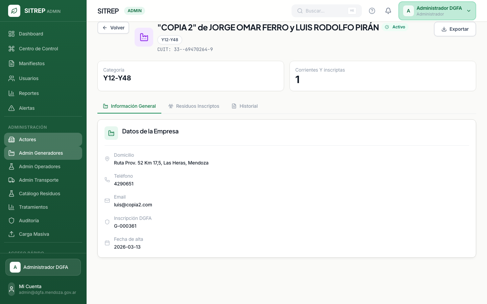
Descripcion: Alta, baja y modificacion de generadores de residuos peligrosos registrados. Incluye datos de inscripcion, categoria y geolocalizacion.
Precondiciones: El usuario autenticado tiene rol ADMIN.
Flujo principal:
- Acceder a Admin > Actores > Generadores.
- Visualizar tabla paginada con busqueda por razon social o CUIT.
- Crear/Editar: completar razonSocial, CUIT, domicilio, telefono, email, numeroInscripcion, categoria, coordenadas lat/lng.
- Los datos se enriquecen con informacion extendida del archivo CSV estatico indexado por CUIT.
- Guardar. El sistema valida los campos obligatorios.
Ruta: /admin/actores/generadores
Endpoints: GET/POST/PUT/DELETE /api/actores/generadores
Completo
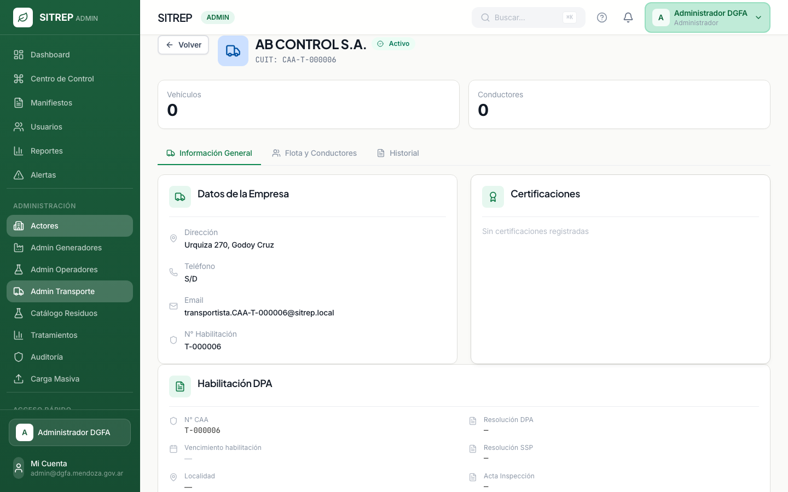
Descripcion: CRUD completo de empresas transportistas con entidades anidadas: vehiculos (patente, capacidad, habilitacion) y choferes (DNI, licencia).
Precondiciones: El usuario autenticado tiene rol ADMIN.
Flujo principal:
- Acceder a Admin > Actores > Transportistas.
- Crear/Editar transportista con datos basicos (razonSocial, CUIT, habilitacion).
- Agregar vehiculos: patente, marca, modelo, anio, capacidad, numero de habilitacion, Vencimiento de Habilitacion (date picker).
- Agregar choferes: nombre, apellido, DNI, licencia, Vencimiento de Licencia (date picker), telefono.
- Guardar con todas las entidades anidadas.
Nota: Los transportistas pueden gestionar su propia flota de forma autonoma desde su perfil sin intervencion del administrador (ver CU-T12).
Ruta: /admin/actores/transportistas
Endpoints: GET/POST/PUT/DELETE /api/actores/transportistas
Completo
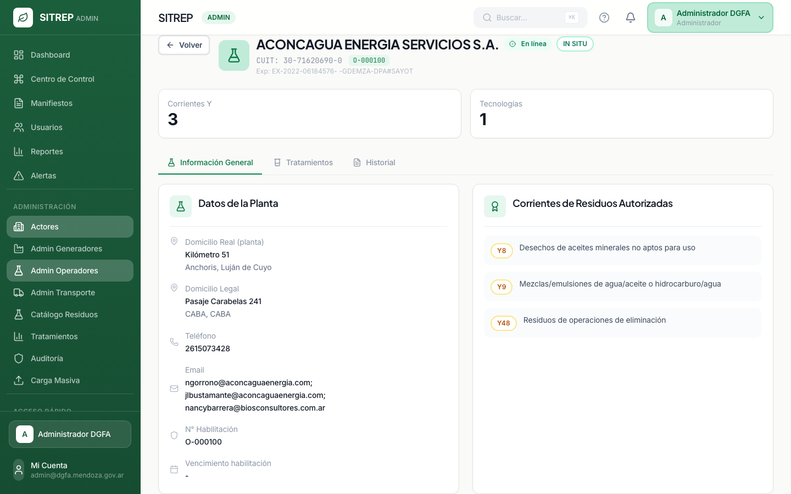
Descripcion: Alta, baja y modificacion de plantas operadoras con certificados, corrientes Y autorizadas y metodos de tratamiento.
Precondiciones: El usuario autenticado tiene rol ADMIN.
Flujo principal:
- Acceder a Admin > Actores > Operadores.
- Crear/Editar operador con datos basicos y certificados (tipo FIJO o IN SITU).
- Configurar corrientes Y autorizadas (tipos de residuo que puede recibir la planta).
- Definir tratamientos autorizados: metodo, descripcion, capacidad por tipo de residuo.
- Guardar. El sistema valida coherencia entre corrientes Y y tratamientos.
Nota: Existen empresas con certificados duales (ej: IBS CORDOBA tiene O-000056 IN SITU + O-000088 FIJO). El sistema maneja estos como registros separados.
Ruta: /admin/actores/operadores
Endpoints: GET/POST/PUT/DELETE /api/actores/operadores
Completo
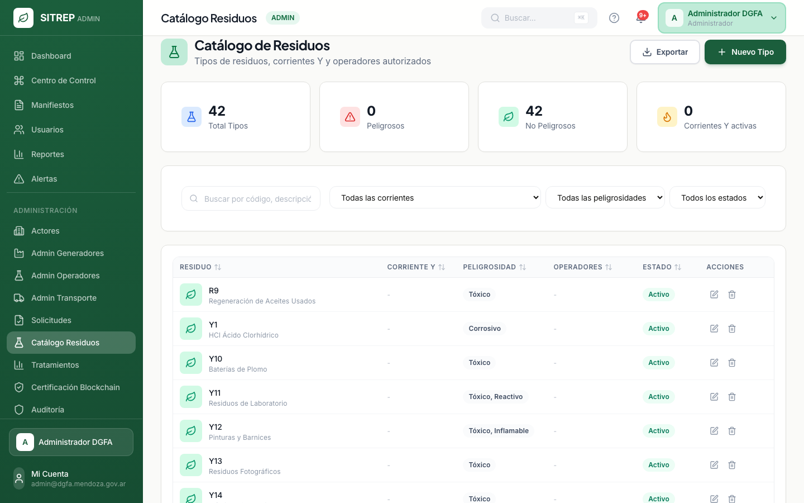
Descripcion: Administrar el catalogo de tipos de residuo con codigos Y conforme Ley 24.051, caracteristicas de peligrosidad y estado activo/inactivo.
Precondiciones: El usuario autenticado tiene rol ADMIN.
Campos del catalogo: codigo (Y1-Y48), nombre, descripcion detallada, categoria, caracteristicas de peligrosidad (H1-H13), estado (activo/inactivo).
Funcionalidades: Filtros interactivos por categoria y estado en las tarjetas de estadisticas. Busqueda por codigo o nombre. Solo los residuos activos aparecen como opcion al crear manifiestos.
Ruta: /admin/residuos
Endpoints: GET /api/catalogos/residuos
Completo
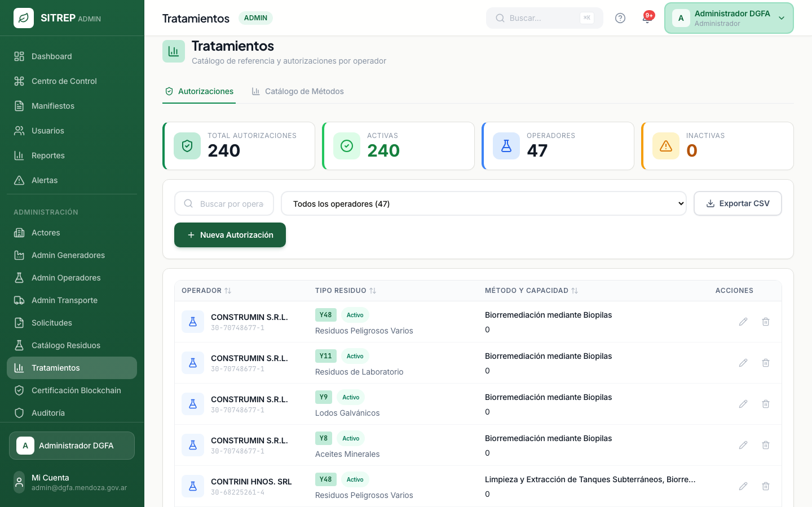
Descripcion: Gestionar los metodos de tratamiento autorizados con descripciones y capacidades.
Precondiciones: El usuario autenticado tiene rol ADMIN.
Campos: Nombre del metodo, descripcion del proceso, capacidad de tratamiento, tipos de residuos compatibles.
Ruta: /admin/tratamientos
Endpoints: GET /api/catalogos/tratamientos
Completo
Descripcion: Pantalla principal con KPIs globales, manifiestos recientes, acciones rapidas y filtros por periodo.
Precondiciones: El usuario autenticado tiene rol ADMIN.
KPIs mostrados: Borradores, Aprobados, En Transito, Entregados, Recibidos, Tratados, Total. Cada KPI es clickeable y filtra la tabla de recientes.
Auto-refresco: Datos actualizados cada 30 segundos via TanStack Query (refetchInterval: 30000).
Ruta: /dashboard
Endpoints: GET /api/manifiestos/dashboard
Completo
Descripcion: Sala de operaciones en tiempo real con mapa interactivo, viajes activos, pipeline de estados, graficos y auto-refresco cada 30 segundos.
Precondiciones: El usuario autenticado tiene rol ADMIN.
Componentes principales:
- Badge LIVE con countdown de refresco (30 segundos).
- 5 indicadores KPI en la parte superior.
- Pipeline funnel: visualizacion tipo embudo del flujo de estados.
- Mapa Leaflet interactivo con 4 capas de marcadores (generadores, transportistas, operadores, transito).
- Panel acordeon con viajes activos y completados.
- Graficos de dona y barras para estadisticas rapidas.
- 6 botones de accion rapida.
- Presets rapidos de fecha: Hoy, 7d, 30d, 90d para filtrado inmediato.
Ruta: /centro-control
Endpoints: GET /api/centro-control/actividad
Completo
Descripcion: Centro de reportes con 8 pestanas de analisis. Cada pestana se carga bajo demanda (React.lazy + Suspense) para optimizar el rendimiento.
Precondiciones: El usuario autenticado tiene rol ADMIN.
8 pestanas: Manifiestos, Residuos Tratados, Transporte, Generadores, Operadores, Tratamientos, Departamentos, Mapa de Actores.
Exportacion: PDF generado en cliente con jsPDF (header SITREP verde, KPI cards, tabla autoTable, footer paginado). CSV generado en servidor con limite de 10,000 filas.
Ruta: /reportes
Endpoints: GET /api/reportes/manifiestos, GET /api/reportes/tratados, GET /api/reportes/transporte, GET /api/reportes/exportar/:tipo
Completo
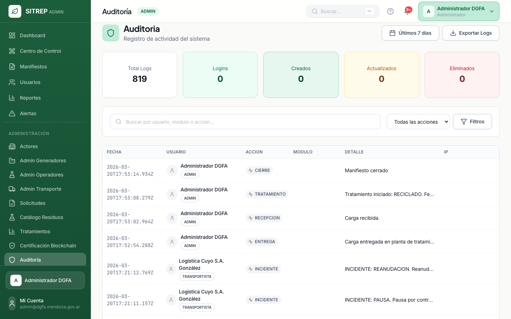
Descripcion: Log inmutable de todas las operaciones del sistema. Cada registro incluye la accion realizada, el modulo afectado, los datos antes y despues del cambio, la direccion IP, el user agent, el usuario responsable y el timestamp.
Precondiciones: El usuario autenticado tiene rol ADMIN.
Filtros disponibles: Rango de fechas, usuario, tipo de accion, modulo.
Inmutabilidad: Los registros de auditoria no pueden ser editados ni eliminados por ningun usuario, incluido el administrador.
Ruta: /admin/auditoria
Completo
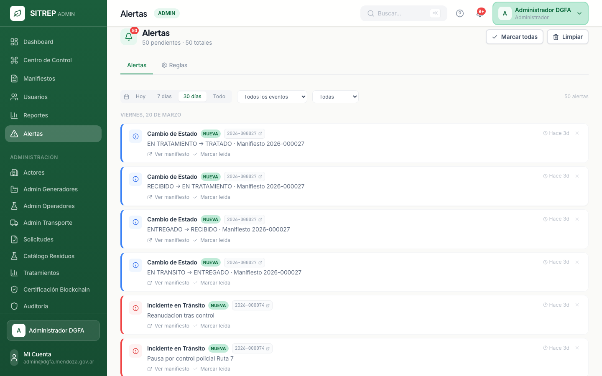
Descripcion: Crear, editar y activar/desactivar reglas de alerta. Cuando una regla se dispara, genera automaticamente una alerta para los usuarios configurados como destinatarios. La vista de alertas generadas usa un diseno de timeline con tarjetas coloreadas (critico = rojo, advertencia = amarillo, info = azul, exito = verde) y paginacion.
Precondiciones: El usuario autenticado tiene rol ADMIN.
Campos de regla: Nombre, evento disparador, condicion, destinatarios (por rol o usuario especifico), estado activo/inactivo.
Flujo:
- Crear regla con nombre descriptivo.
- Definir evento disparador (cambio de estado, exceso de tiempo, discrepancia de peso, etc.).
- Configurar condicion de evaluacion.
- Asignar destinatarios.
- Activar la regla.
Ruta: /alertas
Endpoints: GET/POST/PUT/DELETE /api/alertas/reglas, GET /api/alertas, PUT /api/alertas/:id/resolver
Completo
Descripcion: Importacion masiva de generadores, transportistas y operadores desde archivos CSV. El flujo incluye seleccion de tipo, descarga de plantilla, carga del archivo, vista previa con validacion, importacion y reporte de resultados.
Precondiciones: El usuario autenticado tiene rol ADMIN.
Consideraciones tecnicas:
- Los archivos CSV pueden contener campos entrecomillados con saltos de linea (RFC 4180).
- Los separadores de codigos Y son inconsistentes en los datos fuente (coma, barra, "e", espacios).
- Algunos certificados usan guion largo (en-dash) en lugar de guion comun.
Ruta: /admin/carga-masiva
Endpoints: POST /api/carga-masiva/{generadores|transportistas|operadores}, GET /api/carga-masiva/plantilla/:tipo
Completo
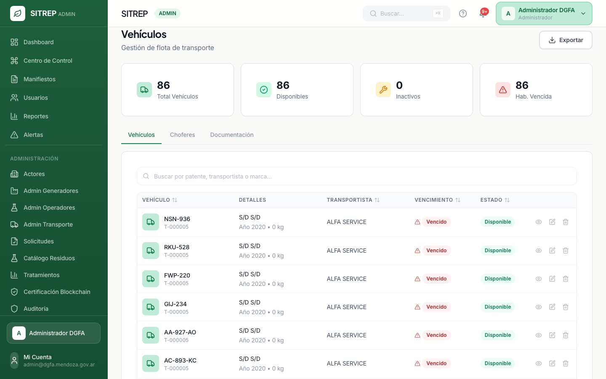
Descripcion: Administrar la flota de vehiculos habilitados para transporte de residuos peligrosos. Cada vehiculo se asocia a un transportista y contiene datos de patente, marca, modelo, anio, capacidad, numero de habilitacion y fecha de vencimiento.
Precondiciones: El usuario autenticado tiene rol ADMIN.
Validaciones: Unicidad de patente, habilitacion vigente (vencimiento futuro), capacidad mayor a cero.
Ruta: /admin/vehiculos
Endpoints: GET /api/catalogos/vehiculos
Completo
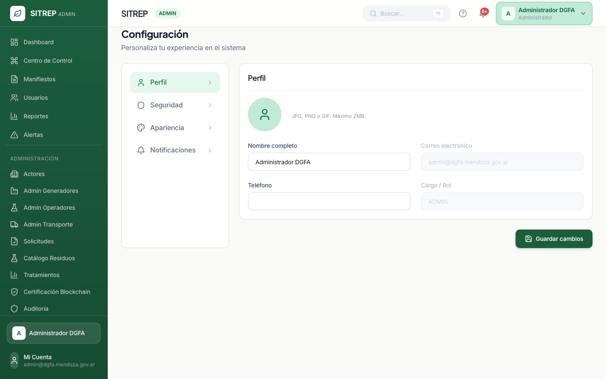
Descripcion: Ajustar configuraciones globales del sistema organizadas por categorias: intervalos de refresco, limites de paginacion, configuracion de notificaciones, parametros de GPS, umbrales de alerta.
Precondiciones: El usuario autenticado tiene rol ADMIN.
Ruta: /configuracion
Completo
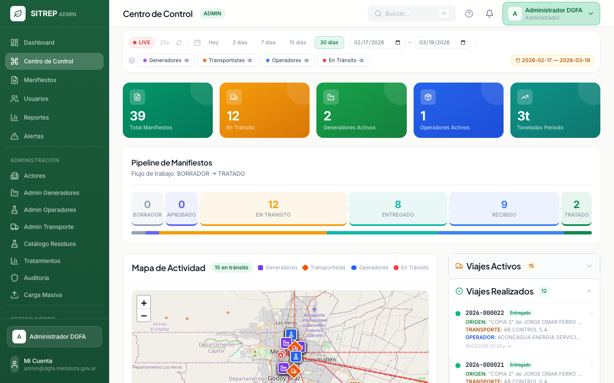
Descripcion: Detectar, listar y resolver anomalias detectadas durante el transporte de residuos peligrosos.
Precondiciones: El usuario autenticado tiene rol ADMIN.
Tipos de anomalia:
- Desvio de ruta: El vehiculo se aleja significativamente de la ruta esperada entre generador y operador.
- Parada prolongada: El vehiculo permanece detenido mas tiempo del normal sin registrar pausa.
- Velocidad excesiva: La velocidad del vehiculo supera los limites establecidos para transporte de residuos peligrosos.
- Sin senial GPS: Perdida prolongada de la senal GPS durante el transporte.
Estado de implementacion: Deteccion basica implementada con endpoint POST /api/anomalias/detectar/:manifiestoId. Resolucion manual disponible via PUT /api/anomalias/:id/resolver. La deteccion automatica avanzada (por reglas y machine learning) esta pendiente de implementacion.
Endpoints: POST /api/anomalias/detectar/:manifiestoId, GET /api/anomalias/:manifiestoId, PUT /api/anomalias/:id/resolver
Parcial
Descripcion: El administrador puede acceder al sistema en nombre de cualquier usuario activo para verificar su experiencia, resolver incidencias o auditar la interfaz sin necesitar la contrasena del usuario objetivo.
Actor: Administrador DGFA
Precondiciones: Usuario autenticado con rol ADMIN. El usuario objetivo existe y tiene estado activo.
Flujo principal:
- El ADMIN navega a Admin > Usuarios (
/admin/usuarios). - En la tabla de usuarios, cada fila tiene un icono de ojo naranja en la columna de acciones (solo visible para usuarios activos; no visible para el propio ADMIN).
- El ADMIN hace clic en el icono de ojo del usuario objetivo.
- El sistema llama a
POST /api/admin/impersonate/{userId}. El backend valida que el objetivo esta activo y no es el propio ADMIN; genera nuevos tokens JWT para el usuario objetivo. - El frontend guarda los tokens del ADMIN en localStorage (
sitrep_impersonation) y realiza una recarga completa de la pagina (flush del cache React Query). - La nueva sesion carga con los tokens del usuario objetivo. Aparece un banner naranja/ambar en la parte superior con el texto: "Acceso Comodin — viendo como: [Nombre] ([Rol])".
- El ADMIN navega por la aplicacion exactamente como la veria el usuario objetivo, con acceso solo a las paginas de ese rol.
- Para terminar: clic en "Volver a mi cuenta" en el banner → el sistema restaura los tokens del ADMIN desde localStorage y navega de vuelta a
/admin/usuarios.
Postcondiciones: Registro de auditoria creado con accion IMPERSONATION (adminId, targetUserId, timestamp, IP). La sesion del ADMIN no fue afectada.
Restricciones de seguridad: No es posible impersonar a otro ADMIN. No es posible impersonar a usuarios inactivos.
Ruta: /admin/usuarios
Endpoint: POST /api/admin/impersonate/{userId}
Completo

Descripcion: El administrador puede asignar roles de administracion parcial a usuarios de confianza. Cada sub-rol otorga acceso a un subconjunto especifico del sistema.
Actor: Administrador DGFA
Precondiciones: Usuario autenticado con rol ADMIN.
Sub-roles disponibles:
| Sub-rol | Paginas accesibles | Dominio de gestion |
|---|---|---|
ADMIN_GENERADOR | Dashboard, Manifiestos, Reportes, Alertas, Generadores, Catalogo Residuos, Configuracion, Auditoria | Alta/baja/modificacion de generadores y catalogo de residuos |
ADMIN_TRANSPORTISTA | Dashboard, Centro de Control, Manifiestos, Reportes, Alertas, Transportistas, Vehiculos, Configuracion, Auditoria | Alta/baja/modificacion de transportistas, vehiculos y conductores |
ADMIN_OPERADOR | Dashboard, Manifiestos, Reportes, Alertas, Operadores, Tratamientos, Configuracion, Auditoria | Alta/baja/modificacion de operadores y catalogo de tratamientos |
Flujo principal:
- El ADMIN navega a Admin > Usuarios.
- Crea un nuevo usuario o edita uno existente.
- En el campo Rol, el dropdown ofrece 7 opciones: ADMIN, GENERADOR, TRANSPORTISTA, OPERADOR, ADMIN_GENERADOR, ADMIN_TRANSPORTISTA, ADMIN_OPERADOR.
- El ADMIN selecciona el sub-rol correspondiente y guarda.
- El nuevo usuario, al iniciar sesion, vera unicamente las paginas habilitadas para su sub-rol en el menu lateral.
Ruta: /admin/usuarios (modal de creacion/edicion)
Endpoint: POST/PUT /api/admin/usuarios
Completo
Descripcion: Buscador global accesible mediante atajo de teclado para encontrar manifiestos, generadores, transportistas y operadores desde cualquier pagina sin cambiar de seccion.
Actor: Cualquier usuario autenticado
Atajo: Cmd+K (macOS) / Ctrl+K (Windows/Linux)
Flujo principal:
- El usuario presiona Cmd+K. Se abre el panel de busqueda global (modal centrado bajo el header, backdrop oscuro).
- El campo de busqueda recibe el foco automaticamente.
- El usuario escribe la consulta (minimo 2 caracteres). Despues de 300 ms, se realiza la busqueda.
- Los resultados se muestran agrupados por tipo: Manifiestos (con chip de estado), Generadores, Transportistas, Operadores (cada uno con razon social y CUIT).
- Chips de filtro por estado en la parte superior (BORRADOR, APROBADO, EN_TRANSITO, ENTREGADO, RECIBIDO, TRATADO): clic en un chip filtra resultados.
- Navegacion por teclado: flechas ↓/↑ mueven el foco entre resultados; Enter navega al recurso seleccionado.
- Clic en un resultado → navega a la pagina de detalle. La consulta se guarda en historial reciente (localStorage:
sitrep_recent_searches, maximo 5 items). - Escape cierra el panel.
- Si se abre el panel con menos de 2 caracteres, se muestran las busquedas recientes.
Ruta: Disponible en cualquier pagina autenticada
Completo
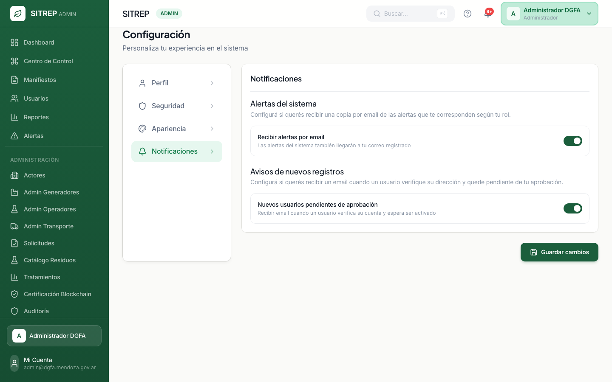
Descripcion: Cada usuario controla que tipos de notificaciones recibe por correo electronico. Los administradores tienen opciones adicionales.
Actor: Cualquier usuario autenticado (opciones extendidas para ADMIN)
Ruta: Configuracion (/configuracion) → pestana Notificaciones
Opciones disponibles:
- Todos los usuarios: Toggle "Recibir alertas por email" (
notifEmail). Si esta desactivado, el usuario no recibira emails aunque este asignado como destinatario en reglas de alerta. - Solo ADMIN: Toggle adicional "Notificarme nuevos usuarios pendientes de aprobacion" (
notifNuevoRegistro). Controla si el admin recibe email cuando un usuario nuevo requiere activacion.
Flujo:
- El usuario navega a Configuracion → pestana Notificaciones.
- Activa o desactiva los toggles.
- La preferencia se guarda automaticamente al hacer clic en el toggle (
PUT /api/admin/preferencias-notificacion). - Aparece toast: "Preferencias guardadas".
Efecto: El servicio de notificaciones consulta notifEmail=true antes de enviar cualquier email a un usuario.
Endpoint: PUT /api/admin/preferencias-notificacion
Completo
Descripcion: Registro inmutable de manifiestos en la blockchain de Ethereum Sepolia. El usuario certifica bajo demanda desde el detalle del manifiesto (boton “Certificar en Blockchain”). La pagina /admin/blockchain permite al administrador consultar todas las certificaciones con filtros por estado (Confirmados, Pendientes, Con Error), tabla paginada con TX Hash, numero de bloque y links a Etherscan.
Precondiciones: El manifiesto debe estar en estado APROBADO o posterior (no BORRADOR ni CANCELADO). Blockchain habilitado en configuracion del servidor.
Flujo principal:
- El usuario accede al detalle de un manifiesto firmado.
- Hace clic en “Certificar en Blockchain” en el panel lateral.
- El sistema genera un hash SHA-256 del JSON canonico del manifiesto.
- Se envia una transaccion al smart contract
SitrepRegistryen Ethereum Sepolia. - El estado cambia a PENDIENTE (spinner animado) y luego a CONFIRMADO (badge verde con detalles tecnicos).
- Si falla, el estado cambia a ERROR con opcion de reintentar. Un cron job reintenta automaticamente cada 60 segundos (max 3 reintentos).
Ruta admin: /admin/blockchain
Endpoints: POST /api/blockchain/registrar/:id, GET /api/blockchain/manifiesto/:id, GET /api/blockchain/registro, GET /api/blockchain/verificar/:hash
Completo
Generador7.2 Generador (12 casos)
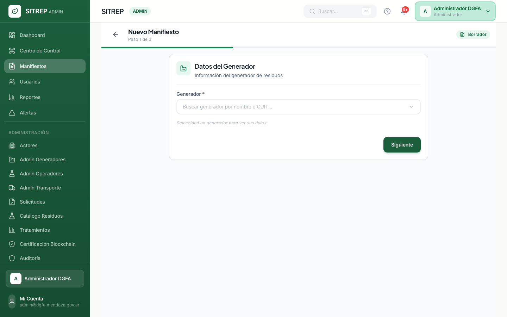
Descripcion: Formulario multi-paso para crear un nuevo manifiesto de residuos peligrosos. El manifiesto se guarda como BORRADOR hasta ser firmado.
Precondiciones: El usuario autenticado tiene rol GENERADOR. Existen transportistas y operadores registrados en el sistema.
Flujo principal (5 pasos):
- Paso 1 - Residuo: Seleccionar tipo de residuo del catalogo de categorias Y (solo residuos activos). El sistema muestra codigo, nombre y caracteristicas de peligrosidad.
- Paso 2 - Cantidad: Ingresar cantidad y seleccionar unidad de medida (kg, litros, toneladas, metros cubicos).
- Paso 3 - Transportista: Seleccionar transportista habilitado del listado. El sistema auto-completa CUIT, telefono, domicilio y numero de habilitacion en una tarjeta informativa.
- Paso 4 - Operador: Seleccionar operador destino. El sistema auto-completa datos y muestra tratamientos autorizados para el tipo de residuo seleccionado.
- Paso 5 - Revision: Resumen completo de todos los datos ingresados. Boton para guardar como BORRADOR.
Postcondiciones: Manifiesto creado en estado BORRADOR. Evento CREACION registrado en timeline.
Ruta: /manifiestos/nuevo
Endpoint: POST /api/manifiestos
Completo
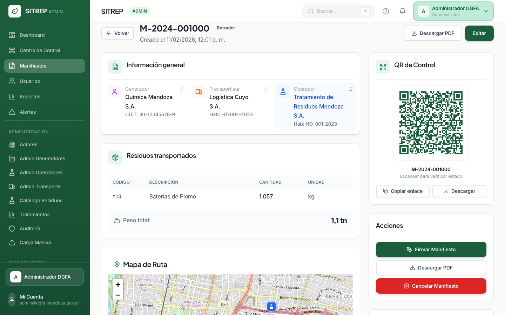
Descripcion: Firma electronica del manifiesto en estado BORRADOR para pasarlo a APROBADO. El sistema genera automaticamente un codigo QR unico para el manifiesto.
Precondiciones: El manifiesto esta en estado BORRADOR. El usuario autenticado es el generador propietario del manifiesto o un ADMIN.
Flujo:
- Acceder al detalle del manifiesto en estado BORRADOR.
- Revisar todos los datos del manifiesto.
- Hacer clic en "Firmar / Aprobar".
- Confirmar la accion en el dialogo de confirmacion.
Postcondiciones: Estado cambia a APROBADO. Se genera codigo QR. Se notifica al transportista asignado. Evento APROBACION registrado.
Endpoint: POST /api/manifiestos/:id/aprobar
Completo
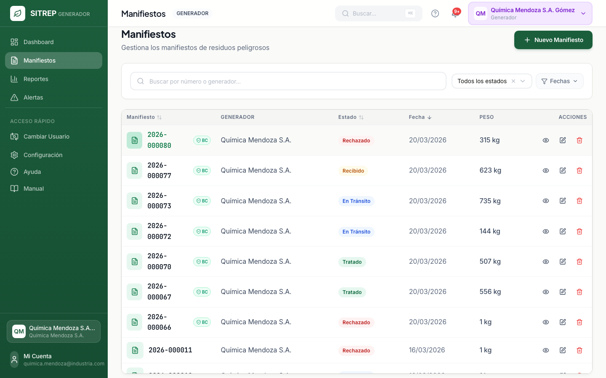
Descripcion: Listado paginado de manifiestos creados por el generador autenticado. Permite busqueda por numero de manifiesto y filtro por estado.
Precondiciones: El usuario autenticado tiene rol GENERADOR.
Funcionalidades: Busqueda por numero, filtro por estado (dropdown con 10 estados), paginacion configurable (10/25/50 por pagina), ordenamiento por fecha, clic en fila navega al detalle.
Ruta: /manifiestos
Endpoint: GET /api/manifiestos (filtrado automaticamente por generadorId del usuario)
Completo
Descripcion: Vista completa del manifiesto con tarjeta de datos, timeline cronologico de eventos, mapa GPS (para manifiestos en transito) y descarga de documentos PDF.
Precondiciones: El usuario tiene acceso al manifiesto (es el generador propietario o ADMIN).
Contenido:
- Tarjeta principal con todos los datos del manifiesto.
- Timeline visual con iconos y colores por tipo de evento.
- Mapa GPS interactivo (solo para EN_TRANSITO) con traza del recorrido.
- Botones de accion contextuales segun estado y rol.
- Boton de descarga PDF (todos los estados).
- Boton de descarga de Certificado (solo TRATADO).
Ruta: /manifiestos/:id
Endpoint: GET /api/manifiestos/:id
Completo
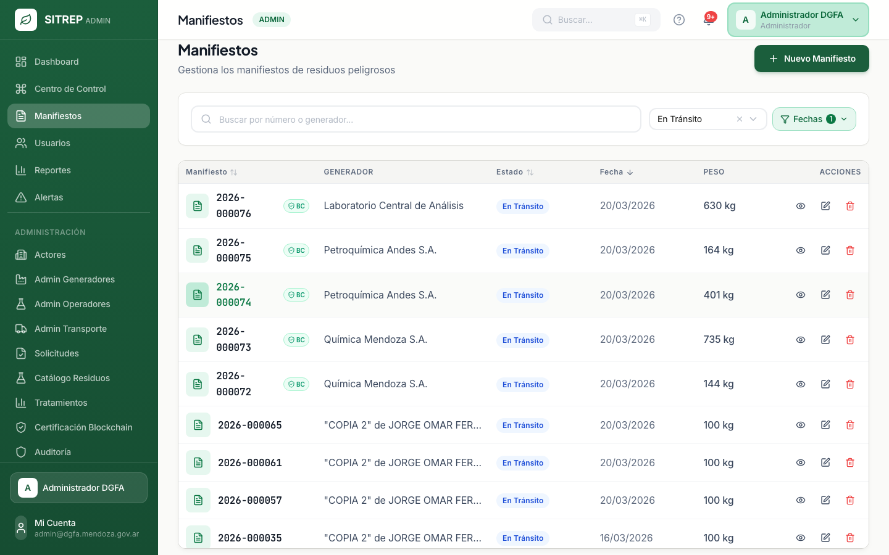
Descripcion: Visualizar la ubicacion GPS del vehiculo transportador en tiempo real sobre un mapa interactivo. Disponible cuando el manifiesto esta en estado EN_TRANSITO.
Precondiciones: El manifiesto esta en estado EN_TRANSITO. El transportista tiene GPS activo.
Datos mostrados: Posicion actual del vehiculo (marcador rojo pulsante), traza del recorrido (linea sobre el mapa), velocidad actual, tiempo transcurrido desde el retiro, generador (punto de origen), operador (punto de destino).
Ruta: /manifiestos/:id (seccion de mapa en el detalle)
Completo
Descripcion: Cancelar un manifiesto que no ha llegado a estado TRATADO ni CANCELADO. Requiere indicar un motivo de cancelacion.
Precondiciones: El manifiesto no esta en estado TRATADO ni CANCELADO. El usuario es el generador propietario o ADMIN.
Flujo: Acceder al detalle, clic en "Cancelar Manifiesto", ingresar motivo, confirmar.
Postcondiciones: Estado cambia a CANCELADO. Evento CANCELACION registrado con motivo. Notificacion a todos los actores involucrados.
Endpoint: POST /api/manifiestos/:id/cancelar
Completo

Descripcion: Generar y descargar el PDF oficial del manifiesto con todos los datos normativos requeridos por Ley 24.051.
Precondiciones: El manifiesto existe (cualquier estado).
Contenido del PDF: Header SITREP con logo, numero de manifiesto, datos del generador, datos del transportista (incluye vehiculo y chofer), datos del operador, tipo y cantidad de residuo, categorias Y y caracteristicas H, fechas del ciclo, codigo QR, timeline de eventos, firmas.
Endpoint: GET /api/pdf/manifiesto/:id
Completo
Descripcion: Descargar el Certificado de Tratamiento y Disposicion Final en formato PDF. Este documento certifica que el residuo peligroso fue tratado conforme a la normativa vigente.
Precondiciones: El manifiesto esta en estado TRATADO.
Contenido del certificado: Referencia a Ley 24.051, datos completos del ciclo (generador, transportista, operador), tipo de residuo y cantidad, metodo de tratamiento aplicado, fechas completas, firma del operador responsable, numero de certificado.
Endpoint: GET /api/pdf/certificado/:id
Completo
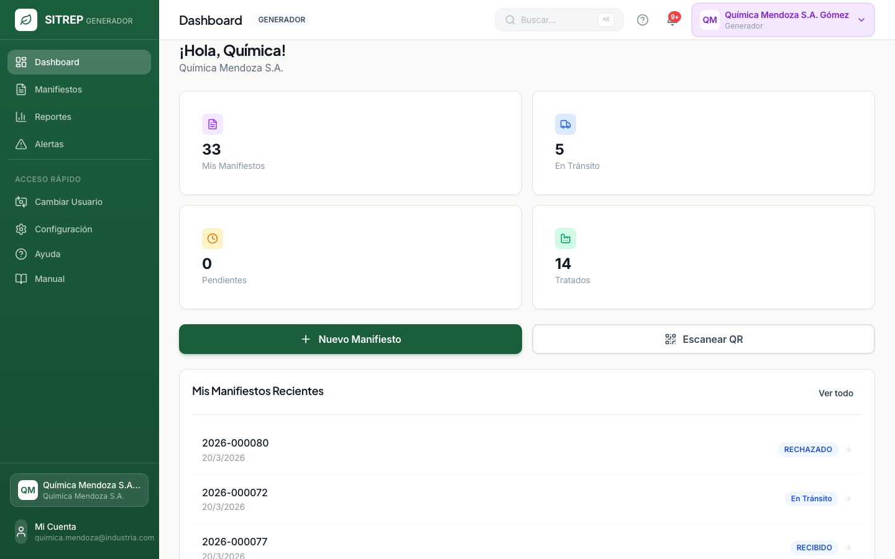
Descripcion: Dashboard personalizado que muestra los KPIs especificos del generador autenticado: manifiestos por estado, manifiestos recientes, acciones rapidas (nuevo manifiesto, ver en transito).
Precondiciones: El usuario autenticado tiene rol GENERADOR.
Ruta: /dashboard
Completo
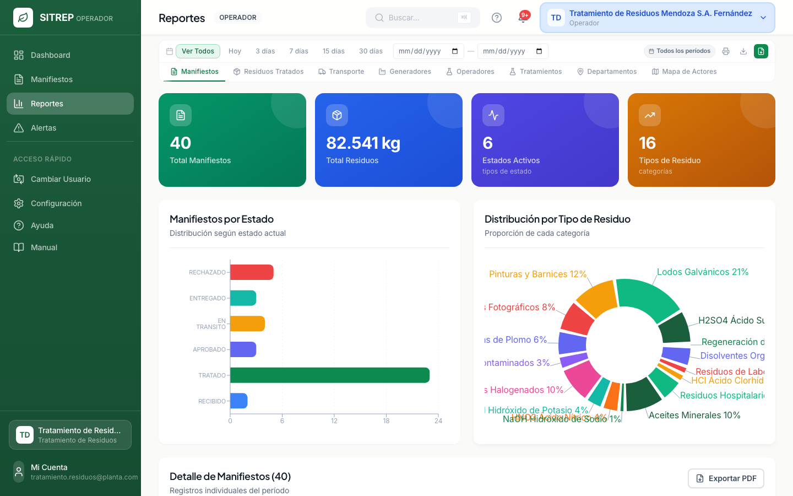
Descripcion: Acceso a reportes filtrados automaticamente por la actividad del generador autenticado. Los datos solo incluyen manifiestos propios.
Precondiciones: El usuario autenticado tiene rol GENERADOR.
Ruta: /reportes (datos filtrados por generadorId)
Completo
Descripcion: Recibir notificaciones automaticas cuando cambia el estado de un manifiesto propio: aprobacion, retiro por el transportista, entrega al operador, recepcion, inicio de tratamiento, cierre y emision de certificado.
Precondiciones: El usuario autenticado tiene rol GENERADOR.
Mecanismo: Polling cada 30 segundos al endpoint de notificaciones. Icono de campana con badge numerico.
Endpoint: GET /api/notificaciones
Completo
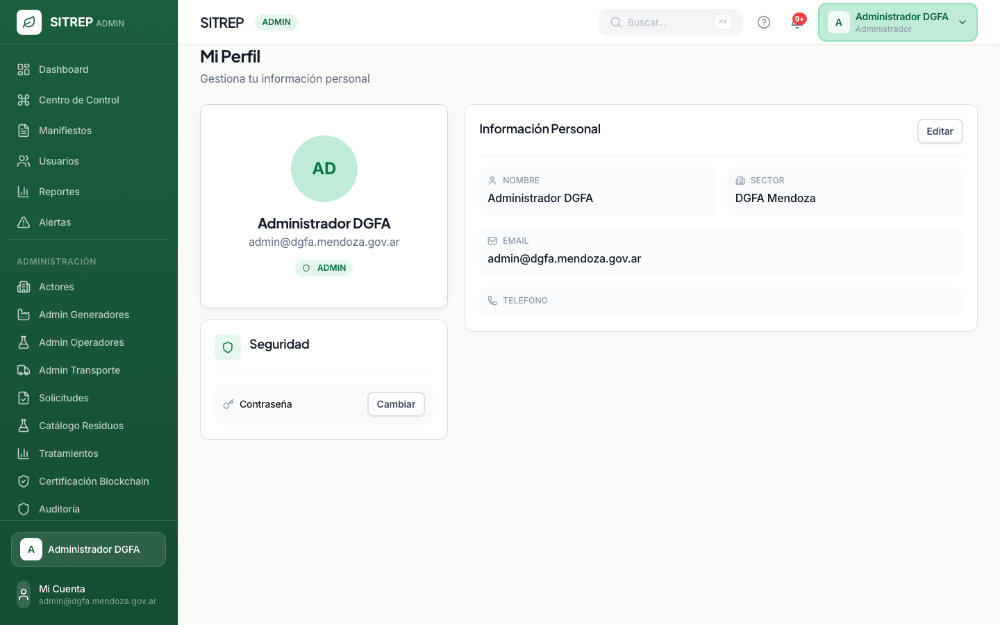
Descripcion: Editar datos personales (nombre, apellido, telefono), cambiar contrasena y configurar preferencias de notificacion del usuario generador.
Precondiciones: El usuario esta autenticado.
Ruta: /perfil
Completo
Transportista7.3 Transportista (12 casos)
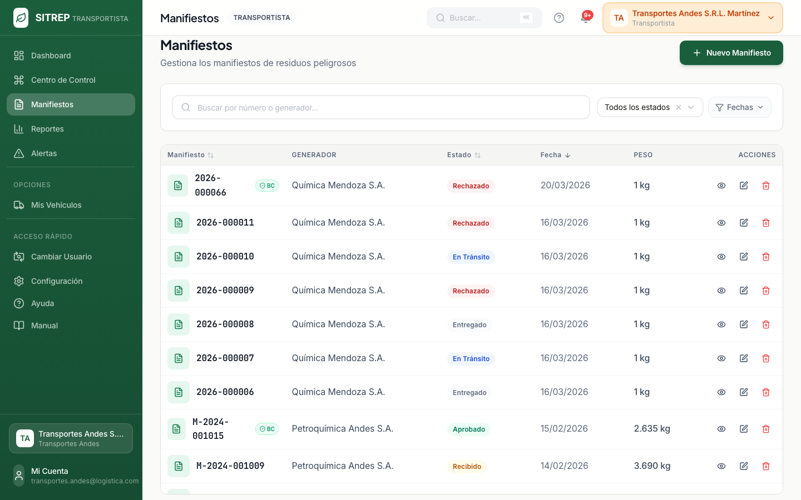
Descripcion: Listado de manifiestos asignados al transportista autenticado con filtros por estado y busqueda por numero de manifiesto.
Precondiciones: El usuario autenticado tiene rol TRANSPORTISTA.
Datos mostrados: Numero, generador, operador destino, tipo de residuo, cantidad, estado actual, fecha de creacion. Los manifiestos se filtran automaticamente por el transportistaId del usuario.
Ruta: /manifiestos
Completo
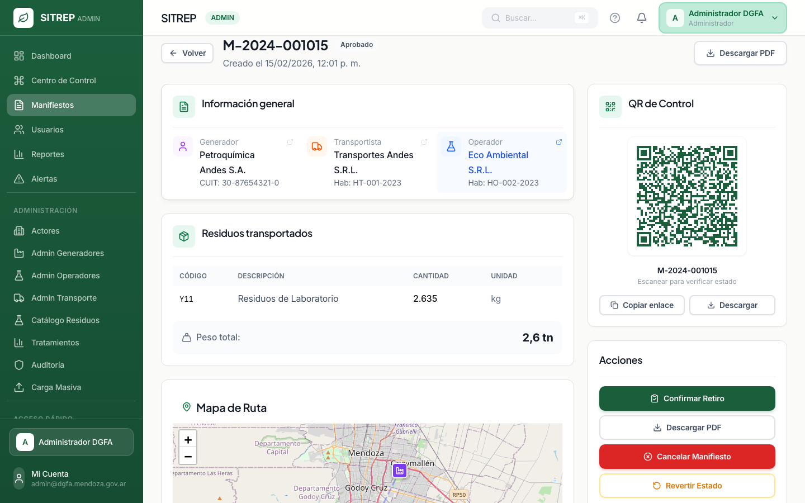
Descripcion: El transportista confirma que ha retirado el residuo en la ubicacion del generador. Esta accion cambia el estado del manifiesto a EN_TRANSITO y activa automaticamente el tracking GPS.
Precondiciones: El manifiesto esta en estado APROBADO. El usuario es el transportista asignado o ADMIN.
Flujo:
- Acceder al detalle del manifiesto APROBADO (desde Dashboard o lista).
- Verificar los datos del manifiesto y del generador.
- Clic en "Confirmar Retiro".
- El navegador solicita permisos de ubicacion (si no fueron concedidos previamente).
- El sistema registra la fechaRetiro y activa el watcher GPS.
Postcondiciones: Estado EN_TRANSITO. GPS activo. Evento RETIRO registrado. Notificacion al generador y operador.
Endpoint: POST /api/manifiestos/:id/confirmar-retiro (envuelto en prisma.$transaction())
Completo
Descripcion: Seguimiento GPS continuo durante todo el transporte del residuo peligroso. La posicion se captura continuamente y se transmite al servidor cada 30 segundos.
Precondiciones: El manifiesto esta en estado EN_TRANSITO. Permisos de ubicacion concedidos.
Datos capturados: Latitud, longitud, velocidad (m/s), direccion (grados 0-360), precision (metros).
Panel de control: Temporizador de viaje (desde fechaRetiro del servidor), velocidad actual, coordenadas, estado del GPS (activo/pausa/error), boton de pausa/reanudacion.
Resiliencia: Cola de hasta 5 puntos pendientes persistidos en localStorage. Flush automatico al reconectar.
Endpoint: POST /api/manifiestos/:id/ubicacion
Completo
Descripcion: El transportista puede pausar el tracking GPS durante paradas intermedias (combustible, descanso, tramites) y reanudarlo al continuar el viaje.
Precondiciones: El manifiesto esta en estado EN_TRANSITO. El GPS esta activo.
Flujo de pausa: Clic en "Pausar", se registra incidente tipo PAUSA con ubicacion actual, se detiene el watcher GPS, se persiste estado en localStorage.
Flujo de reanudacion: Clic en "Reanudar", se registra incidente tipo REANUDACION, se reactiva el watcher GPS.
Endpoint: POST /api/manifiestos/:id/incidente (tipo: PAUSA o REANUDACION)
Completo
Descripcion: Documentar incidentes ocurridos durante el transporte con descripcion detallada, tipo de incidente y ubicacion GPS automatica.
Precondiciones: El manifiesto esta en estado EN_TRANSITO. El usuario es el transportista asignado.
Tipos de incidente: Accidente vial, demora por trafico, desvio de ruta, problema mecanico, condicion climatica adversa, otro (texto libre).
Datos registrados: Tipo de incidente, descripcion textual, coordenadas GPS actuales, timestamp, usuario.
Nota: Registrar un incidente NO cambia el estado del manifiesto. El manifiesto permanece en EN_TRANSITO.
Endpoint: POST /api/manifiestos/:id/incidente (acepta tanto tipo como tipoIncidente)
Completo
Descripcion: El transportista confirma que ha entregado el residuo en la planta del operador destino. Esta accion desactiva el GPS y cambia el estado a ENTREGADO.
Precondiciones: El manifiesto esta en estado EN_TRANSITO. El usuario es el transportista asignado o ADMIN.
Postcondiciones: Estado cambia a ENTREGADO. GPS desactivado y watcher limpiado. Cache de manifiestoId invalidado. Evento ENTREGA registrado. Notificacion al operador para que inicie la recepcion.
Endpoint: POST /api/manifiestos/:id/entregar (envuelto en prisma.$transaction())
Completo
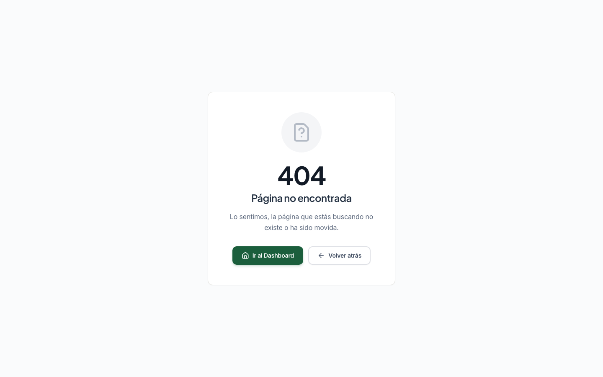
Descripcion: Leer el codigo QR impreso en el manifiesto o envase del residuo para acceder rapidamente al detalle del manifiesto correspondiente.
Precondiciones: El usuario tiene la app mobile instalada o accede desde el navegador con camara.
Flujo: Abrir escaner QR, apuntar camara al codigo, el sistema decodifica y navega al manifiesto. Si la camara no esta disponible, usar entrada manual del codigo.
Ruta: /mobile/escaner-qr
Completo
Descripcion: Dashboard personalizado para el transportista con banner destacado de viaje activo/pendiente, KPIs de transporte y manifiestos recientes asignados.
Precondiciones: El usuario autenticado tiene rol TRANSPORTISTA.
Banner de viaje:
- Viaje activo (EN_TRANSITO): Tarjeta verde pulsante con boton "Ir al viaje" que navega directamente al panel de control GPS.
- Viaje pendiente (APROBADO): Tarjeta amarilla de advertencia con lista clickeable de manifiestos por retirar.
- Sin viajes: No se muestra banner.
Ruta: /dashboard (desktop) o /mobile/dashboard (mobile)
Completo
Descripcion: Ver el historial completo de viajes realizados por el transportista, incluyendo trazas GPS sobre el mapa, tiempos de viaje y estadisticas de rendimiento.
Precondiciones: El usuario autenticado tiene rol TRANSPORTISTA.
Datos mostrados: Lista de viajes completados con generador origen, operador destino, fecha/hora de retiro y entrega, duracion total, distancia recorrida.
Completo
Descripcion: Recibir notificaciones automaticas de asignacion de nuevos manifiestos, recordatorios de retiro pendiente y alertas del sistema.
Precondiciones: El usuario autenticado tiene rol TRANSPORTISTA.
Tipos de notificacion: Nuevo manifiesto asignado, recordatorio de retiro, confirmacion de recepcion por operador, alerta del sistema.
Completo
Descripcion: Editar datos personales (nombre, apellido, telefono), cambiar contrasena y gestionar la cuenta del transportista.
Precondiciones: El usuario esta autenticado.
Ruta: /perfil
Completo
Descripcion: El transportista puede agregar, editar y eliminar sus propios vehiculos y conductores sin requerir intervencion del administrador, desde su perfil en la plataforma.
Actor: Transportista
Precondiciones: Usuario autenticado con rol TRANSPORTISTA.
Ruta: Transporte → Perfil (/transporte/perfil) → pestana Info → boton "Gestionar vehiculos y conductores"
Flujo principal:
- El TRANSPORTISTA navega a Transporte → Perfil y abre la pestana Info.
- Hace clic en "Gestionar vehiculos y conductores" → navega a su propia TransportistaDetallePage (
/admin/actores/transportistas/{suPropioId}). - Gestion de Vehiculos: Tabla con columnas Patente, Marca, Modelo, Anio, Capacidad, N° Habilitacion, Vencimiento Habilitacion. Botones Editar y Eliminar por fila. Boton "Agregar Vehiculo".
- Gestion de Conductores: Tabla con columnas Nombre, Apellido, DNI, Licencia, Venc. Licencia, Telefono. Botones Editar y Eliminar. Boton "Agregar Conductor".
- Modal "Agregar/Editar Vehiculo": campos Patente (unico), Marca, Modelo, Anio, Capacidad, N° Habilitacion, Vencimiento (date picker). Validaciones: patente unica, capacidad > 0, vencimiento futuro.
- Modal "Agregar/Editar Conductor": campos Nombre, Apellido, DNI, Licencia, Vencimiento Licencia (date picker), Telefono.
- Los cambios se persisten via API con filtro automatico por actorId del TRANSPORTISTA autenticado.
Nota de seguridad: La ruta acepta el rol TRANSPORTISTA pero limita el acceso al propio actorId del usuario. Intentar acceder al ID de otro transportista devuelve 403.
Postcondiciones: Flota y conductores actualizados en base de datos, disponibles para asignacion en futuros manifiestos.
Completo
Operador7.4 Operador (12 casos)
Descripcion: Listado de manifiestos dirigidos a la planta del operador autenticado, con filtros por estado y busqueda por numero.
Precondiciones: El usuario autenticado tiene rol OPERADOR.
Estados relevantes: EN_TRANSITO (en camino), ENTREGADO (esperando recepcion), RECIBIDO (pesado, pendiente tratamiento), EN_TRATAMIENTO (en proceso).
Ruta: /manifiestos (filtrado automaticamente por operadorId)
Completo
Descripcion: El operador registra la recepcion del residuo peligroso en su planta. Esta accion inicia el proceso de pesaje y verificacion de la carga.
Precondiciones: El manifiesto esta en estado ENTREGADO. El usuario es el operador destino o ADMIN.
Flujo:
- Acceder al detalle del manifiesto ENTREGADO.
- Verificar los datos del manifiesto contra la documentacion fisica.
- Clic en "Confirmar Recepcion".
- Registrar la cantidad recibida (peso real medido en la planta).
- El sistema calcula automaticamente la diferencia con el peso declarado.
Postcondiciones: Estado RECIBIDO. Evento RECEPCION registrado. Diferencia de peso documentada. Notificacion al generador y transportista.
Endpoint: POST /api/manifiestos/:id/recibir
Completo
Descripcion: Registrar el peso real medido en la balanza de la planta y compararlo con el peso declarado por el generador en el manifiesto. Las diferencias se calculan y documentan automaticamente.
Precondiciones: El manifiesto esta en estado RECIBIDO.
Campos: cantidadRecibida (peso real en la unidad del manifiesto), tipoDiferencia (se calcula automaticamente: sin diferencia, diferencia menor, diferencia significativa).
Umbrales: Diferencia menor si es menor al 5% del declarado. Diferencia significativa si supera el 5% (puede generar alerta automatica).
Completo
Descripcion: Firmar la recepcion conforme del residuo peligroso en la planta. Confirma que la carga fue verificada y aceptada para tratamiento.
Precondiciones: El manifiesto esta en estado ENTREGADO. El pesaje fue registrado.
Postcondiciones: Estado RECIBIDO. El manifiesto queda disponible para iniciar el tratamiento.
Completo
Descripcion: Rechazar la carga entregada indicando el motivo del rechazo. El estado del manifiesto cambia a RECHAZADO y se notifica a todos los actores.
Precondiciones: El manifiesto esta en estado ENTREGADO. El usuario es el operador destino o ADMIN.
Motivos de rechazo comunes:
- Residuo no coincide con la categoria Y declarada en el manifiesto.
- Cantidad recibida excede significativamente lo declarado.
- Documentacion de transporte incompleta o incorrecta.
- El residuo excede la capacidad autorizada de la planta.
- Envase o embalaje danado o no conforme.
- La planta no tiene tratamiento autorizado para ese tipo de residuo.
Postcondiciones: Estado RECHAZADO. Evento RECHAZO registrado con motivo. Notificacion al generador y transportista.
Endpoint: POST /api/manifiestos/:id/rechazar
Completo
Descripcion: Seleccionar el metodo de tratamiento aplicado del catalogo de tratamientos autorizados para la planta y registrar los datos del proceso.
Precondiciones: El manifiesto esta en estado RECIBIDO. La planta tiene tratamientos autorizados para el tipo de residuo.
Flujo:
- Acceder al detalle del manifiesto RECIBIDO.
- Clic en "Registrar Tratamiento".
- Seleccionar metodo de tratamiento del catalogo (solo muestra metodos autorizados para el tipo de residuo).
- Ingresar observaciones del proceso (opcional).
- Confirmar.
Postcondiciones: Estado EN_TRATAMIENTO. Evento TRATAMIENTO registrado. Notificacion al administrador.
Endpoint: POST /api/manifiestos/:id/tratamiento (envuelto en prisma.$transaction())
Completo
Descripcion: Finalizar el ciclo completo del manifiesto confirmando que el tratamiento fue completado exitosamente. El sistema genera automaticamente el Certificado de Disposicion Final.
Precondiciones: El manifiesto esta en estado EN_TRATAMIENTO o RECIBIDO. El usuario es el operador o ADMIN.
Postcondiciones: Estado TRATADO (estado final). Certificado de Disposicion generado. Evento CIERRE registrado. Notificacion a todos los actores. El manifiesto no puede ser modificado ni cancelado.
Endpoint: POST /api/manifiestos/:id/cerrar
Completo
Descripcion: Generacion automatica del Certificado de Tratamiento y Disposicion Final en formato PDF. El certificado se genera al cerrar el manifiesto y queda disponible para descarga por todos los actores.
Precondiciones: El manifiesto esta en estado TRATADO.
Contenido del certificado:
- Referencia a Ley Nacional 24.051 y normativa aplicable.
- Datos completos del generador (razon social, CUIT, inscripcion).
- Datos del transportista (razon social, habilitacion, vehiculo, chofer).
- Datos del operador (razon social, habilitacion, certificado).
- Tipo de residuo, categoria Y, caracteristicas de peligrosidad.
- Cantidad declarada y cantidad recibida.
- Metodo de tratamiento aplicado.
- Fechas completas del ciclo (creacion, aprobacion, retiro, entrega, recepcion, tratamiento, cierre).
- Firma digital del operador responsable.
- Numero unico de certificado.
Endpoint: GET /api/pdf/certificado/:id
Completo
Descripcion: Dashboard personalizado con KPIs de recepcion y tratamiento de la planta del operador: manifiestos entrantes, recibidos, en tratamiento, tratados. Manifiestos recientes con acceso rapido.
Precondiciones: El usuario autenticado tiene rol OPERADOR.
Ruta: /dashboard
Completo
Descripcion: Reportes de actividad filtrados automaticamente por la planta del operador autenticado. Incluye metricas de recepcion, tratamiento, tasa de completitud y residuos procesados por tipo.
Precondiciones: El usuario autenticado tiene rol OPERADOR.
Ruta: /reportes
Completo
Descripcion: Recibir notificaciones automaticas de manifiestos en camino hacia la planta, confirmaciones de retiro, alertas de peso discrepante y recordatorios de manifiestos pendientes de tratamiento.
Precondiciones: El usuario autenticado tiene rol OPERADOR.
Endpoint: GET /api/notificaciones
Completo
Sistema7.5 Sistema (12 casos)

Descripcion: Generacion automatica de codigo QR unico al aprobar un manifiesto. El QR codifica el identificador del manifiesto y permite el escaneo rapido desde dispositivos moviles.
Disparador: Transicion de estado BORRADOR a APROBADO.
Proceso: El servidor genera el codigo QR, lo almacena como campo qrCode del manifiesto y lo incluye en el PDF del manifiesto. El generador puede imprimirlo y adjuntarlo al envase del residuo.
Tecnologia: Generacion server-side, lectura client-side via html5-qrcode.
Completo
Descripcion: Envio automatico de notificaciones a los actores involucrados en cada cambio de estado del manifiesto.
Disparador: Cualquier transicion de estado del manifiesto.
Destinatarios por evento:
| Evento | Destinatarios |
|---|---|
| Aprobacion | Transportista asignado |
| Retiro | Generador, Operador destino |
| Entrega | Operador destino |
| Recepcion | Generador, Transportista |
| Tratamiento | Administrador |
| Cierre | Generador, Transportista, Administrador |
| Rechazo | Generador, Transportista, Administrador |
| Cancelacion | Transportista, Operador, Administrador |
Mecanismo: Registro en tabla Notificacion con tipo, titulo, mensaje, prioridad. El frontend consulta via polling cada 30 segundos.
Completo
Descripcion: Registro inmutable de todas las operaciones realizadas en el sistema. Cada registro captura el estado anterior y posterior del dato modificado, junto con informacion del contexto de la solicitud.
Disparador: Cualquier operacion CRUD o cambio de estado en el sistema.
Datos capturados:
- accion: CREATE, UPDATE, DELETE, ESTADO_CHANGE, LOGIN, LOGOUT.
- modulo: MANIFIESTOS, ACTORES, USUARIOS, CATALOGOS, ALERTAS, CONFIGURACION.
- datosAntes: JSON con el estado del registro antes del cambio.
- datosDespues: JSON con el estado del registro despues del cambio.
- ip: Direccion IP del cliente (detectada correctamente detras de Nginx con trust proxy).
- userAgent: Identificacion del navegador/dispositivo.
- usuarioId: Usuario responsable de la accion.
- manifiestoId: Manifiesto afectado (cuando aplica).
Inmutabilidad: Los registros de auditoria no pueden ser modificados ni eliminados por ningun usuario del sistema.
Completo
Descripcion: Recepcion y almacenamiento de los puntos GPS enviados por el transportista durante el transporte. Utiliza cache en memoria para optimizar las escrituras frecuentes.
Disparador: Solicitud POST /api/manifiestos/:id/ubicacion cada 30 segundos durante EN_TRANSITO.
Proceso:
- Recibir solicitud con latitud, longitud, velocidad y direccion.
- Verificar cache en memoria (TTL 30s) para validar que el manifiesto existe y esta EN_TRANSITO.
- Si hay cache hit (~24ms): escribir directamente en
tracking_gps. - Si hay cache miss (~250ms): consultar BD, validar estado, actualizar cache, escribir en
tracking_gps.
Indices optimizados: idx_tracking_manifiesto, idx_tracking_timestamp, idx_tracking_manif_ts (compuesto).
Crecimiento de datos: ~6,000 filas por hora con 50 viajes simultaneos. Los indices compuestos mantienen el rendimiento constante.
Completo
Descripcion: Deteccion de anomalias durante el transporte de residuos peligrosos. Incluye deteccion basica de desvios de ruta, paradas prolongadas y velocidad excesiva.
Disparador: Analisis de datos GPS durante y despues del transporte.
Tipos de anomalia detectados: Desvio de ruta (distancia excesiva del camino directo), parada prolongada (sin movimiento por periodo extenso sin registrar pausa), velocidad excesiva (superando limites de seguridad para transporte de peligrosos), perdida de senal GPS (ausencia prolongada de datos).
Endpoints: POST /api/anomalias/detectar/:manifiestoId, GET /api/anomalias/:manifiestoId, PUT /api/anomalias/:id/resolver.
Completo
Descripcion: Evaluacion continua de las reglas de alerta configuradas por el administrador. Cuando una condicion se cumple, se genera automaticamente una alerta vinculada al manifiesto y a la regla que la origino.
Disparador: Eventos del sistema que coinciden con las reglas activas.
Proceso: Al ocurrir un evento (cambio de estado, dato GPS, pesaje), el sistema evalua todas las reglas activas cuyo evento disparador coincida. Si la condicion se cumple, crea un registro en AlertaGenerada con los datos del manifiesto, la regla y los datos especificos que dispararon la alerta. Los destinatarios configurados en la regla reciben una notificacion.
Completo
Descripcion: Calculo y actualizacion periodica de KPIs, graficos y metricas que alimentan el Dashboard, Centro de Control y Reportes.
Disparador: Solicitudes de datos con refresco automatico cada 30 segundos.
Metricas calculadas:
- Dashboard: Conteo por estado, manifiestos recientes, viajes en transito.
- Centro de Control: Pipeline de estados, KPIs, manifiestos por dia (SQL raw para rendimiento), capas de mapa con hasta 50 puntos GPS por viaje.
- Reportes: Agregaciones por periodo, tipo de residuo, actor, departamento. Usa
Promise.allpara queries paralelas.
Completo
Descripcion: Sincronizacion automatica de datos pendientes almacenados localmente cuando el dispositivo recupera la conectividad a internet.
Disparador: Cambio de estado de offline a online (detectado por hook useConnectivity).
Almacenamiento local:
localStorage: Puntos GPS pendientes (gps_pending_{id}), estado del viaje (viaje_status_*), snapshot del viaje (viaje_snapshot_*).IndexedDB: Cola de sincronizacion (sync_queue) para operaciones generales.
Proceso de sincronizacion:
- El hook
useConnectivitydetecta reconexion via health ping (/api/health). - Se ejecuta flush de puntos GPS pendientes de localStorage.
- Se ejecuta flush de operaciones pendientes de IndexedDB.
- Se limpian las colas locales tras confirmacion del servidor.
Completo
Descripcion: Envio de notificaciones push nativas a dispositivos moviles via Web Push API para alertas criticas en tiempo real, sin necesidad de que la aplicacion este abierta.
Estado actual: Actualmente el sistema utiliza polling HTTP cada 30 segundos para detectar nuevas notificaciones. La implementacion de Web Push API esta planificada para la proxima version del sistema.
Plan de implementacion: Registro de suscripciones push por dispositivo, servidor de push con clave VAPID, envio selectivo por rol y urgencia, icono y badge personalizados.
Pendiente
Descripcion: Integracion con infraestructura de firma digital certificada (PKI) para la firma de manifiestos, conforme a la normativa argentina de firma electronica y firma digital (Ley 25.506).
Estado actual: El sistema utiliza firma electronica simple (autenticacion del usuario + registro de la accion de firma). La integracion con certificados digitales X.509 y tokens criptograficos esta en fase de planificacion.
Plan de implementacion: Integracion con prestadores de servicios de certificacion habilitados, soporte para tokens USB y certificados en la nube, sellado de tiempo (timestamping), validacion de cadena de certificacion.
Pendiente
Descripcion: API de integracion con otros sistemas gubernamentales para el reporte automatico de datos de residuos peligrosos.
Sistemas objetivo:
- COFEMA: Consejo Federal de Medio Ambiente - reporte de actividad provincial.
- SAyDS Nacional: Secretaria de Ambiente y Desarrollo Sustentable - registro nacional de manifiestos.
- AFIP: Verificacion de CUIT de actores registrados.
- Registro Nacional de Generadores: Sincronizacion de inscripciones.
Estado actual: La API REST de SITREP esta completamente funcional y documentada, lo que permite la integracion unidireccional (consulta de datos). La integracion bidireccional con sistemas externos especificos esta en fase de planificacion y depende de la disponibilidad de APIs por parte de los organismos nacionales.
Pendiente
Descripcion: Cron job automatico que se ejecuta cada 60 segundos y procesa registros blockchain en estado PENDIENTE o ERROR. Garantiza que las certificaciones se completen incluso ante fallos transitorios de red.
Disparador: Cron node-cron cada 60 segundos (*/1 * * * *).
Proceso:
- Busca manifiestos con
blockchainStatus= PENDIENTE o ERROR yblockchainRetries< 3. - Para registros PENDIENTE con TX hash: verifica si la transaccion ya fue confirmada consultando el receipt.
- Si la transaccion esta confirmada: actualiza estado a CONFIRMADO con numero de bloque y timestamp.
- Si no: re-intenta el registro completo (nuevo hash + nueva TX).
- Despues de 3 intentos fallidos, el registro queda en estado ERROR para atencion manual.
Proteccion de concurrencia: Solo se ejecuta en la instancia PM2 0 (pm_id === '0') para evitar duplicacion en modo cluster.
Completo
7.6 Resumen de Implementacion
| Modulo | Total | Completo | Parcial | Pendiente |
|---|---|---|---|---|
| Administrador | 20 | 19 | 1 | 0 |
| Generador | 12 | 12 | 0 | 0 |
| Transportista | 12 | 12 | 0 | 0 |
| Operador | 12 | 12 | 0 | 0 |
| Sistema | 12 | 9 | 0 | 3 |
| TOTAL | 68 | 65 (96%) | 1 (1%) | 3 (4%) |
8. Preguntas Frecuentes
El administrador del sistema (DGFA) debe crear su cuenta de usuario y asignarle el rol correspondiente (Generador, Transportista u Operador). Una vez creada la cuenta, acceda a https://sitrep.ultimamilla.com.ar/ con el email y contrasena proporcionados. Para la version mobile, acceda a https://sitrep.ultimamilla.com.ar/app/ desde el navegador de su telefono.
SITREP es compatible con las versiones actualizadas de los principales navegadores:
- Google Chrome: Version 90+ (recomendado para Android)
- Safari: Version 15+ (recomendado para iOS)
- Mozilla Firefox: Version 90+
- Microsoft Edge: Version 90+
Para el tracking GPS y la instalacion PWA, se recomienda Google Chrome en Android y Safari en iOS.
El tracking GPS requiere que se concedan permisos de ubicacion al navegador. Si el GPS no funciona:
- Verificar permisos: En la configuracion del navegador, asegurarse de que
sitrep.ultimamilla.com.artenga permiso de ubicacion "Permitir". - Verificar GPS del dispositivo: Asegurarse de que el GPS del telefono este activado (Configuracion > Ubicacion).
- Modo de alta precision: Activar el modo de ubicacion de alta precision que combina GPS, WiFi y datos moviles.
- Reiniciar el navegador: Cerrar completamente el navegador y volver a abrir la aplicacion.
- Verificar HTTPS: El GPS solo funciona en conexiones seguras (HTTPS). No funciona en HTTP ni en
file://.
Si el problema persiste, el sistema almacena los puntos GPS en una cola local y los enviara automaticamente cuando se restablezca la conexion.
SITREP tiene soporte parcial para modo offline gracias a la tecnologia PWA:
- Recursos estaticos: La aplicacion se cachea localmente y puede cargarse sin conexion.
- Datos GPS: Los puntos GPS capturados sin conexion se almacenan en localStorage y se envian automaticamente al recuperar la conectividad.
- Limitaciones: Las operaciones que requieren consulta al servidor (crear manifiestos, cambiar estados, ver reportes) no estan disponibles sin conexion. Se muestra una pagina de fallback offline.
- Indicador: El componente
ConnectivityIndicatormuestra una barra de estado cuando se pierde la conexion.
Android (Chrome):
- Abrir
https://sitrep.ultimamilla.com.ar/app/en Google Chrome. - Esperar 45 segundos hasta que aparezca el banner de instalacion, o abrir el menu (tres puntos) y seleccionar "Agregar a pantalla de inicio".
- Confirmar la instalacion. La app aparecera como icono en el launcher.
iOS (Safari):
- Abrir
https://sitrep.ultimamilla.com.ar/app/en Safari (no Chrome). - Tocar el boton Compartir (cuadrado con flecha hacia arriba).
- Seleccionar "Agregar a la pantalla de inicio".
- Confirmar el nombre y tocar Agregar.
El codigo QR se genera automaticamente cuando un manifiesto es aprobado (firmado electronicamente). Contiene el identificador unico del manifiesto y permite:
- Acceso rapido al detalle del manifiesto escaneando con la camara del telefono.
- Verificacion de la identidad del manifiesto en campo (retiro, entrega, recepcion).
- Trazabilidad fisica: se puede imprimir y adjuntar al envase del residuo.
Para escanear, acceder a la herramienta Escaner QR desde el menu de la aplicacion mobile, o usar cualquier lector de QR estandar.
SITREP ofrece dos formatos de exportacion:
- PDF: Generado en el navegador del cliente con jsPDF. Incluye header institucional, KPIs graficos, tablas formateadas y footer con paginacion. Disponible desde la seccion de Reportes.
- CSV: Generado en el servidor. Descarga un archivo CSV con datos tabulares del periodo seleccionado. Limite de 10,000 filas por exportacion. Disponible para manifiestos, generadores, transportistas y operadores.
Ademas, cada manifiesto individual puede descargarse como PDF desde su pagina de detalle, y los manifiestos en estado TRATADO incluyen el Certificado de Disposicion Final como PDF separado.
Cuando el operador registra el peso real (cantidadRecibida) al recibir la carga, el sistema calcula automaticamente la diferencia con el peso declarado por el generador. Los escenarios posibles son:
- Sin diferencia: El peso recibido coincide con el declarado (tolerancia configurable).
- Diferencia menor (<5%): Se documenta automaticamente pero no genera alerta.
- Diferencia significativa (>5%): Se documenta y puede generar una alerta automatica si hay una regla configurada para este evento.
En todos los casos, la diferencia queda registrada en el campo tipoDiferencia del manifiesto y en el log de auditoria, proporcionando trazabilidad completa para fiscalizacion.
Si, un manifiesto puede cancelarse en cualquier momento del ciclo, excepto cuando ya se encuentra en estado TRATADO o CANCELADO. La cancelacion la puede realizar el generador propietario del manifiesto o un administrador DGFA. Al cancelar, se requiere indicar un motivo y todos los actores involucrados son notificados.
Nota importante: Si el manifiesto esta EN_TRANSITO, la cancelacion desactiva el tracking GPS y el transportista es notificado inmediatamente.
Cada operacion realizada en SITREP genera un registro inmutable en la tabla de auditoria. El registro incluye:
- La accion realizada (crear, editar, eliminar, cambiar estado).
- El modulo afectado (manifiestos, actores, usuarios, etc.).
- Los datos ANTES del cambio (JSON completo).
- Los datos DESPUES del cambio (JSON completo).
- La direccion IP del cliente.
- El user agent (navegador/dispositivo).
- El usuario responsable.
- El timestamp exacto.
Los registros de auditoria no pueden ser modificados ni eliminados por ningun usuario del sistema, incluido el administrador. Esto garantiza la integridad del historial para fines de fiscalizacion y cumplimiento normativo.
La configuracion actual esta optimizada para 50 transportistas simultaneos, cada uno enviando posiciones GPS cada 30 segundos. Esto representa aproximadamente 100 solicitudes GPS por minuto en total, bien dentro del limite de rate limiting (600 req/min/IP) y de la capacidad del connection pool de PostgreSQL (40 conexiones activas).
El sistema esta disenado para escalar a 200 usuarios concurrentes mediante:
- Aumento de instancias PM2 (de 2 a 4-6).
- Migracion de cache en memoria a Redis.
- Aumento del connection pool y max_connections de PostgreSQL.
- Ajuste de rate limiting.
Ver la seccion 5.6 (Escalamiento a 200 Usuarios) para el plan detallado.
El sistema implementa el catalogo completo de categorias de residuos sometidos a control conforme al Anexo I de la Ley Nacional 24.051, con codigos desde Y1 hasta Y48. Cada categoria incluye:
- Codigo Y: Identificador unico de la corriente (Y1, Y2, ..., Y48).
- Nombre: Denominacion oficial de la corriente de residuos.
- Descripcion: Detalle del tipo de residuo incluido en la categoria.
- Caracteristicas de peligrosidad: Codigos H asociados (H1-H13).
- Estado: Activo o inactivo (solo los activos aparecen al crear manifiestos).
El administrador puede activar/desactivar categorias segun las necesidades de la provincia, pero no puede crear codigos fuera del rango normativo establecido por la ley.
Los datos del sistema se almacenan en una base de datos PostgreSQL alojada en un contenedor Docker en el servidor de produccion (IP: 23.105.176.45). La base de datos se denomina trazabilidad_rrpp.
Componentes de almacenamiento:
- PostgreSQL (Docker): Datos transaccionales (manifiestos, actores, eventos, GPS, auditoria, notificaciones, alertas, usuarios).
- Servidor de archivos: Frontend estatico servido por Nginx desde
/var/www/sitrep/. - localStorage (cliente): Tokens de sesion, puntos GPS pendientes, estado de viaje, preferencias de usuario.
- IndexedDB (cliente): Cola de sincronizacion para operaciones offline.
- Service Worker cache (cliente): Recursos estaticos para funcionamiento offline (
trazabilidad-rrpp-v4).
SITREP utiliza un mecanismo de polling para mantener los datos actualizados sin necesidad de recargar la pagina:
- Dashboard: Los KPIs y manifiestos recientes se actualizan cada 30 segundos via
useDashboardStatsconrefetchInterval: 30000. - Centro de Control: Todos los datos (mapa, KPIs, pipeline, viajes) se recargan cada 30 segundos. Un countdown visible muestra el tiempo restante para el proximo refresco.
- Notificaciones: El icono de campana consulta nuevas notificaciones cada 30 segundos.
- Detalle de manifiesto EN_TRANSITO: La posicion GPS en el mapa se actualiza con cada nuevo punto recibido del transportista.
Nota tecnica: El polling se implementa con TanStack Query v5, que maneja automaticamente el cache, la deduplicacion de solicitudes simultaneas, y la pausacion del polling cuando la pestana esta inactiva.
SITREP tiene dos puntos de acceso:
| Caracteristica | Version Web | Version Mobile (PWA) |
|---|---|---|
| URL | sitrep.ultimamilla.com.ar/ | sitrep.ultimamilla.com.ar/app/ |
| Orientacion | Desktop (horizontal) | Portrait (vertical) |
| Navegacion | Sidebar lateral + header | Bottom nav bar + drawer lateral |
| Instalable | No | Si (PWA con icono en home screen) |
| Offline | Parcial | Completo (Service Worker + cache) |
| GPS Tracking | Disponible | Optimizado (panel de viaje dedicado) |
| QR Scanner | Disponible | Optimizado (acceso rapido desde nav bar) |
| Banner de viaje | No | Si (tarjeta pulsante en Dashboard) |
| Onboarding | No | Si (tour guiado por rol) |
Ambas versiones comparten el mismo backend y los mismos datos. Las funcionalidades principales estan disponibles en ambas versiones, pero la version mobile esta optimizada para el uso en campo por transportistas y operadores.
SITREP utiliza la biblioteca Recharts para generar graficos interactivos:
- Graficos de dona (Donut/Pie): Distribucion de manifiestos por estado, residuos por tipo, actores por categoria. Con etiqueta central personalizada.
- Graficos de barras (BarChart): Manifiestos por tipo de residuo, completitud de transportistas, recibidos vs. tratados por operador, manifiestos por departamento.
- Indicadores gauge: Tasa de tratamiento como porcentaje visual.
- Barras de progreso: Tasa de completitud por transportista en tabla.
Todos los graficos son interactivos: al pasar el cursor se muestra un tooltip con datos detallados. Los graficos se renderizan del lado del cliente y se adaptan al tamano de la pantalla.
SITREP genera dos tipos de documentos PDF:
1. PDF de Manifiesto
Generado en el servidor (GET /api/pdf/manifiesto/:id) por el controlador pdf.controller.ts. Contiene todos los datos normativos del manifiesto: datos de los actores, residuo, fechas, codigo QR, timeline de eventos, y espacio para firmas.
2. Certificado de Disposicion Final
Generado en el servidor (GET /api/pdf/certificado/:id). Solo disponible para manifiestos en estado TRATADO. Incluye referencia a Ley 24.051, datos completos del ciclo, metodo de tratamiento, firma del operador y numero de certificado.
3. Reportes PDF
Generados en el cliente usando jsPDF + jspdf-autotable (funcion exportReportePDF en utils/exportPdf.ts). Estructura del PDF:
- Header institucional con barra verde SITREP.
- Titulo del reporte y periodo seleccionado.
- Tarjetas KPI con valores destacados.
- Tabla de datos formateada con autoTable.
- Footer con numero de pagina, fecha de generacion y URL del sistema.
El sistema utiliza un mecanismo automatico de renovacion de sesion:
- El access token tiene una duracion de 24 horas.
- Cuando el access token expira, el frontend detecta un error 401 (Unauthorized).
- Automaticamente envia el refresh token (duracion 7 dias) a
POST /api/auth/refresh. - Si el refresh token es valido, el servidor genera un nuevo par de tokens.
- La solicitud original se reintenta con el nuevo access token.
- Si el refresh token tambien expiro (mas de 7 dias sin usar el sistema), se redirige al login.
Sincronizacion cross-tab: Si el usuario tiene multiples pestanas abiertas, la renovacion de tokens se sincroniza via el evento storage de localStorage para evitar solicitudes de refresh concurrentes que podrian agotar la cola de renovacion.
El sistema implementa multiples capas de proteccion:
- Rate Limiting: Limite de 600 solicitudes por minuto por direccion IP. Al superar el limite, las solicitudes se rechazan con error 429 (Too Many Requests).
- bcrypt: Las contrasenas se almacenan como hash bcrypt, lo que hace computacionalmente inviable su recuperacion por fuerza bruta.
- JWT: Los tokens son firmados criptograficamente, lo que impide su falsificacion.
- Refresh Token en BD: Los refresh tokens se almacenan en base de datos y pueden ser revocados individualmente.
- Helmet: Headers de seguridad que previenen ataques comunes (XSS, clickjacking, sniffing).
- Trust Proxy: Configurado para detectar la IP real del cliente detras de Nginx, lo que permite que el rate limiting funcione correctamente incluso con proxies.
SITREP implementa multiples capas de proteccion de datos:
- Autenticacion segura: JWT con access tokens de vida corta (24h) y refresh tokens (7d) almacenados en base de datos.
- Contrasenas: Hash con bcrypt (algoritmo irreversible).
- Comunicacion cifrada: HTTPS con certificado SSL Let's Encrypt en todas las comunicaciones.
- Rate limiting: Proteccion contra ataques de fuerza bruta (600 req/min/IP).
- Headers de seguridad: Helmet configura CSP, HSTS, X-Frame-Options y otros headers protectivos.
- CORS restrictivo: Solo acepta solicitudes del dominio de produccion.
- Auditoria inmutable: Registro completo de toda operacion con datos before/after.
- Control de acceso por roles: Cada endpoint verifica el rol del usuario antes de ejecutar la operacion.
9. Glosario
| Termino | Definicion |
|---|---|
| Manifiesto | Documento oficial que acompana al residuo peligroso durante todo su ciclo de vida, desde la generacion hasta la disposicion final. En SITREP es un registro electronico con firma digital. |
| Generador | Persona fisica o juridica que produce residuos peligrosos como resultado de sus actividades productivas. Responsable del residuo hasta su tratamiento final. |
| Transportista | Empresa habilitada para el transporte de residuos peligrosos, con vehiculos y choferes certificados. |
| Operador | Planta de tratamiento y/o disposicion final habilitada para recibir, tratar y disponer residuos peligrosos. |
| DGFA | Direccion General de Fiscalizacion Ambiental de la Provincia de Mendoza. Autoridad de aplicacion del regimen de residuos peligrosos. |
| Corriente Y | Categoria de residuo peligroso segun el Anexo I de la Ley 24.051 (Y1 a Y48). |
| Caracteristica H | Propiedad de peligrosidad del residuo segun Anexo II de la Ley 24.051 (H1 a H13). |
| CUIT | Clave Unica de Identificacion Tributaria. Identificador fiscal argentino (formato XX-XXXXXXXX-X). |
| PWA | Progressive Web Application. Aplicacion web que puede instalarse en el dispositivo y funcionar con capacidades nativas (offline, notificaciones, GPS). |
| GPS | Global Positioning System. Sistema de posicionamiento global por satelite utilizado para el tracking de transportes. |
| JWT | JSON Web Token. Estandar de autenticacion basado en tokens firmados digitalmente. |
| KPI | Key Performance Indicator. Indicador clave de rendimiento visualizado en dashboards y reportes. |
| TTL | Time To Live. Tiempo de vida de un dato en cache antes de ser invalidado. |
| Tracking | Seguimiento en tiempo real de la posicion geografica del vehiculo durante el transporte de residuos. |
| Certificado de Disposicion | Documento PDF generado al completar el tratamiento de un residuo. Certifica el cumplimiento normativo del ciclo completo. |
| Pipeline | Visualizacion del flujo de estados de los manifiestos como embudo progresivo. |
| Clustering | Agrupacion automatica de marcadores de mapa cuando hay muchos elementos cercanos, mostrando un numero en lugar de marcadores individuales. |
| Coropletico | Tipo de mapa tematico que colorea areas geograficas segun la intensidad de un valor (usado en el reporte de departamentos). |
| Polling | Tecnica de consulta periodica al servidor para detectar cambios. SITREP usa polling cada 30 segundos para notificaciones y datos en tiempo real. |
| Service Worker | Script que se ejecuta en segundo plano en el navegador, independiente de la pagina web. Permite cache de recursos, funcionamiento offline y sincronizacion en background. |
| Rate Limiting | Mecanismo de proteccion que limita la cantidad de solicitudes que un cliente puede realizar en un periodo de tiempo determinado. |
| Anomalia de Transporte | Evento irregular detectado durante el transporte: desvio de ruta, parada prolongada no registrada, velocidad excesiva o perdida de senal GPS. |
| Borrador | Estado inicial de un manifiesto recien creado. Puede ser editado hasta que se firma electronicamente. |
| EN_TRANSITO | Estado del manifiesto cuando el residuo esta siendo transportado. El GPS esta activo. |
| TRATADO | Estado final del manifiesto. Indica que el residuo fue tratado satisfactoriamente y el certificado esta disponible. |
| RECHAZADO | Estado del manifiesto cuando el operador rechaza la carga entregada. Requiere motivo documentado. |
| CANCELADO | Estado del manifiesto cuando es cancelado por el generador o administrador antes de completar el ciclo. |
| bcrypt | Algoritmo de hashing de contrasenas que genera un hash irreversible con salt aleatorio. Utilizado para almacenar contrasenas de forma segura. |
| Prisma | ORM (Object-Relational Mapping) para TypeScript/JavaScript que genera un cliente tipado a partir del esquema de base de datos. |
| PM2 | Process Manager para Node.js que permite ejecutar aplicaciones en modo cluster, con auto-restart, monitoreo y logs. |
| Nginx | Servidor web y reverse proxy de alto rendimiento. En SITREP actua como punto de entrada HTTPS y balancea solicitudes al backend. |
| Docker | Plataforma de contenedores que permite ejecutar aplicaciones en entornos aislados. PostgreSQL se ejecuta en un contenedor Docker. |
| SPA | Single Page Application. Aplicacion web que carga una sola pagina HTML y actualiza dinamicamente el contenido sin recargar. |
| Recharts | Biblioteca de graficos para React basada en D3. Utilizada para todos los graficos interactivos de SITREP (donas, barras, gauges, lineas). |
| Leaflet | Biblioteca JavaScript de codigo abierto para mapas interactivos. Utilizada en el Centro de Control, reportes de departamentos y mapa de actores. |
| TanStack Query | Biblioteca de manejo de estado asincronico para React (anteriormente React Query). Gestiona cache, revalidacion y polling de datos del servidor. |
| jsPDF | Biblioteca para generar documentos PDF en el navegador (client-side). Utilizada para exportar reportes y manifiestos. |
| IndexedDB | Base de datos NoSQL del navegador utilizada para almacenar la cola de sincronizacion offline. |
| localStorage | Almacenamiento clave-valor del navegador utilizado para tokens de sesion, puntos GPS pendientes y estado del viaje. |
| VAPID | Voluntary Application Server Identification. Protocolo para identificar servidores de Web Push (planificado para CU-S09). |
| Webhook | Mecanismo de notificacion HTTP donde el servidor envia datos a una URL configurada cuando ocurre un evento (planificado para integraciones). |
| RFC 4180 | Estandar que define el formato CSV (Comma-Separated Values), incluyendo reglas para campos entrecomillados y multilinea. |
| Connection Pool | Conjunto de conexiones a base de datos preasignadas y reutilizables, que evitan el costo de crear una nueva conexion por cada solicitud. |
| Cluster Mode | Modo de ejecucion de PM2 que crea multiples instancias del proceso Node.js para aprovechar todos los cores del CPU. |
| Glassmorphism | Tendencia de diseno visual que utiliza fondos translucidos con desenfoque (backdrop-filter: blur) para crear una apariencia de vidrio esmerilado. Aplicada en cards y paneles de SITREP. |
| Stacking Context | Contexto de apilamiento CSS que determina el orden visual de elementos superpuestos. Relevante para la correcta visualizacion de modales, mapas y menus desplegables. |
| Choropleth | Mapa coropletico que visualiza datos estadisticos coloreando regiones geograficas proporcionalmente. Utilizado en la pestana Departamentos del Centro de Reportes. |
| Middleware | Funcion intermediaria en el pipeline de Express que procesa solicitudes antes de llegar al controlador. SITREP usa middlewares para autenticacion, rate limiting, compresion y timeout. |
| Firma Electronica | Mecanismo que valida la autenticidad e integridad de un manifiesto electronico, reemplazando la firma manuscrita en documentos fisicos. |
| CGNAT | Carrier-Grade Network Address Translation. Tecnica de los ISP para compartir una IP publica entre multiples usuarios, relevante para el rate limiting en entornos moviles. |
| Codigo QR | Codigo de barras bidimensional que codifica informacion del manifiesto para escaneo rapido en campo con la camara del dispositivo movil. |
| Carga Masiva | Funcionalidad que permite importar multiples registros (generadores, residuos, etc.) desde archivos CSV o Excel de forma simultanea. |
10. Procedimientos Operativos Detallados
10.1 Procedimiento: Ciclo Completo de un Manifiesto (Paso a Paso)
El siguiente procedimiento describe paso a paso el ciclo completo de un manifiesto de residuos peligrosos, desde la creacion hasta la emision del certificado de disposicion.
Fase 1: Creacion y Aprobacion (Generador)
| Paso | Accion | Actor | Estado Resultante |
|---|---|---|---|
| 1 | El generador ingresa al sistema con sus credenciales | Generador | - |
| 2 | Accede a Manifiestos > Nuevo Manifiesto | Generador | - |
| 3 | Selecciona el tipo de residuo (categoria Y) del catalogo | Generador | - |
| 4 | Ingresa cantidad y unidad de medida | Generador | - |
| 5 | Selecciona transportista habilitado (se auto-completan datos) | Generador | - |
| 6 | Selecciona operador destino (se auto-completan datos) | Generador | - |
| 7 | Revisa el resumen y guarda como borrador | Generador | BORRADOR |
| 8 | Firma electronicamente el manifiesto | Generador | APROBADO |
Acciones automaticas del sistema: Genera codigo QR, crea evento APROBACION, notifica al transportista asignado.
Fase 2: Transporte (Transportista)
| Paso | Accion | Actor | Estado Resultante |
|---|---|---|---|
| 9 | El transportista recibe notificacion del manifiesto asignado | Sistema | APROBADO |
| 10 | El transportista se presenta en la ubicacion del generador | Transportista | APROBADO |
| 11 | Verifica los datos del manifiesto (opcionalmente escaneando QR) | Transportista | APROBADO |
| 12 | Confirma Retiro en el sistema | Transportista | EN_TRANSITO |
| 13 | GPS se activa automaticamente y comienza tracking cada 30s | Sistema | EN_TRANSITO |
| 14 | Transporta el residuo hacia la planta del operador | Transportista | EN_TRANSITO |
| 15 | (Opcional) Pausa tracking durante parada intermedia | Transportista | EN_TRANSITO |
| 16 | (Opcional) Registra incidentes si ocurren | Transportista | EN_TRANSITO |
| 17 | Llega a la planta del operador y Confirma Entrega | Transportista | ENTREGADO |
Acciones automaticas del sistema: Registra fechas, activa/desactiva GPS, almacena puntos de tracking, crea eventos, notifica actores.
Fase 3: Recepcion y Tratamiento (Operador)
| Paso | Accion | Actor | Estado Resultante |
|---|---|---|---|
| 18 | El operador recibe notificacion de entrega | Sistema | ENTREGADO |
| 19 | Verifica la carga contra la documentacion del manifiesto | Operador | ENTREGADO |
| 20 | Pesa el residuo en la balanza de la planta | Operador | ENTREGADO |
| 21a | Si todo es conforme: Confirma Recepcion con peso real | Operador | RECIBIDO |
| 21b | Si no es conforme: Rechaza Carga con motivo | Operador | RECHAZADO |
| 22 | Aplica el metodo de tratamiento autorizado | Operador | RECIBIDO |
| 23 | Registra el Tratamiento en el sistema | Operador | EN_TRATAMIENTO |
| 24 | Cierra el Manifiesto confirmando tratamiento completo | Operador | TRATADO |
Acciones automaticas del sistema: Calcula diferencias de peso, genera Certificado de Disposicion, crea eventos, notifica a todos los actores, cierra el ciclo del manifiesto.
Fase 4: Finalizacion
| Paso | Accion | Actor | Resultado |
|---|---|---|---|
| 25 | Todos los actores descargan el PDF del manifiesto | Todos | Archivo PDF |
| 26 | Todos los actores descargan el Certificado de Disposicion | Todos | Archivo PDF |
| 27 | El administrador revisa el ciclo en Reportes y Auditoria | Admin | Cumplimiento verificado |
10.2 Procedimiento: Resolucion de Problemas de GPS
| Problema | Causa Probable | Solucion |
|---|---|---|
| GPS no se activa al confirmar retiro | Permisos de ubicacion denegados | Ir a Configuracion del navegador > Permisos > Ubicacion > Permitir para sitrep.ultimamilla.com.ar |
| Estado "acquiring" indefinido | GPS del dispositivo desactivado | Activar GPS en Configuracion > Ubicacion del telefono. Usar modo alta precision. |
| Puntos GPS no se envian | Sin conexion a internet | Los puntos se almacenan localmente (max 5). Se enviaran automaticamente al reconectar. |
| GPS muestra ubicacion incorrecta | Baja precision de senial | Moverse a un area abierta. Verificar que el modo de alta precision este activado. |
| Watcher GPS no se detiene | Error en limpieza | Cerrar completamente el navegador. El listener beforeunload deberia limpiar automaticamente. |
| Error "denied" | Usuario denego el permiso | En Chrome: candado en barra de direccion > Permisos del sitio > Ubicacion > Permitir. Recargar pagina. |
| Error "unavailable" | API no disponible | Verificar que el navegador soporte Geolocation API. Algunos navegadores bloquean GPS en HTTP (requiere HTTPS). |
10.3 Procedimiento: Importacion Masiva de Datos
Procedimiento detallado para importar actores mediante archivos CSV:
Preparacion del Archivo
- Acceder a Admin > Carga Masiva.
- Seleccionar el tipo de actor a importar (Generadores, Transportistas u Operadores).
- Hacer clic en "Descargar Plantilla" para obtener el CSV con las columnas requeridas.
- Abrir el archivo en un editor de hojas de calculo (Excel, Google Sheets, LibreOffice Calc).
- Completar los datos respetando el formato de cada columna.
Consideraciones del Formato CSV
- Codificacion: UTF-8 (para soporte de caracteres especiales como tildes y enie).
- Separador: Coma (,) como separador de campos.
- Campos con comas: Deben estar entrecomillados con comillas dobles ("campo con, coma").
- Campos multilinea: Soportados dentro de comillas dobles (RFC 4180).
- Formato CUIT: XX-XXXXXXXX-X (con guiones).
- Coordenadas: Latitud y longitud en formato decimal (ej: -32.8895, -68.8458).
- Codigos Y: Los separadores pueden ser inconsistentes. El sistema acepta coma, barra, "e" y espacios.
- Certificados: Algunos usan guion largo (en-dash, U+2013) en lugar de guion comun. El sistema los normaliza automaticamente.
Proceso de Carga
- Hacer clic en "Subir Archivo" y seleccionar el CSV completado.
- El sistema parsea el archivo y muestra una vista previa.
- Las filas validas se marcan en verde; las filas con errores en rojo con detalle del error.
- Revisar los errores y corregir el CSV si es necesario.
- Hacer clic en "Confirmar Importacion" para cargar las filas validas.
- El sistema muestra un resumen final: filas importadas, filas omitidas, errores detallados.
10.4 Procedimiento: Exportacion de Reportes PDF
El sistema genera PDFs profesionales del lado del cliente usando jsPDF:
- Acceder a Reportes y seleccionar la pestana deseada.
- Configurar el periodo usando los filtros de fecha.
- Verificar que los datos mostrados son los correctos.
- Hacer clic en el boton "Exportar PDF".
- El sistema genera el PDF con los siguientes componentes:
- Header: Logo SITREP con barra verde institucional, titulo del reporte, periodo.
- KPI Cards: Tarjetas con indicadores principales del periodo.
- Tabla: Datos tabulares formateados con jspdf-autotable.
- Footer: Numero de pagina, fecha de generacion, URL del sistema.
- El navegador descarga automaticamente el archivo PDF.
10.5 Procedimiento: Configuracion de Reglas de Alerta
Guia para configurar reglas de alerta efectivas:
- Acceder a Alertas desde el menu principal.
- Hacer clic en "Nueva Regla de Alerta".
- Completar los campos de la regla:
- Nombre: Identificador descriptivo (ej: "Diferencia de peso mayor al 10%").
- Evento disparador: Seleccionar el tipo de evento que activa la evaluacion.
- Condicion: Definir la expresion que debe cumplirse.
- Destinatarios: Seleccionar roles o usuarios especificos que recibiran la alerta.
- Activar la regla con el interruptor.
- Guardar. La regla comenzara a evaluarse inmediatamente.
Reglas de Alerta Recomendadas
| Regla | Evento | Condicion | Destinatarios |
|---|---|---|---|
| Diferencia de peso significativa | Recepcion de manifiesto | Diferencia mayor al 10% entre declarado y recibido | ADMIN |
| Viaje excede tiempo estimado | GPS update | Tiempo transcurrido mayor a 8 horas desde retiro | ADMIN, GENERADOR |
| Manifiesto estancado | Temporizador diario | Manifiesto sin cambio de estado por mas de 48 horas | ADMIN |
| Anomalia GPS detectada | Deteccion de anomalia | Desvio de ruta mayor a 20km o velocidad mayor a 120 km/h | ADMIN |
| Habilitacion proxima a vencer | Temporizador semanal | Habilitacion de vehiculo o transportista vence en menos de 30 dias | ADMIN, TRANSPORTISTA |
11. Contacto y Soporte
Informacion de Contacto
| Canal | Detalle |
|---|---|
| Administrador del Sistema | admin@dgfa.mendoza.gov.ar |
| Soporte Tecnico | Contactar a la Direccion General de Fiscalizacion Ambiental (DGFA) |
| Aplicacion Web | https://sitrep.ultimamilla.com.ar/ |
| Aplicacion Movil | https://sitrep.ultimamilla.com.ar/app/ |
| Manual en linea | https://sitrep.ultimamilla.com.ar/manual/ |
Procedimiento de Soporte
- Verificar este manual para encontrar la respuesta a su consulta (usar la funcion de busqueda en la barra lateral).
- Consultar la seccion de Preguntas Frecuentes (seccion 8).
- Si el problema persiste, contactar al administrador del sistema por email incluyendo:
- Descripcion detallada del problema.
- Capturas de pantalla (si aplica).
- Rol del usuario y navegador utilizado.
- Numero de manifiesto afectado (si aplica).
- Fecha y hora del incidente.
Informacion del Documento
| Campo | Valor |
|---|---|
| Titulo | Manual del Sistema de Trazabilidad de Residuos Peligrosos (SITREP) |
| Version del documento | 2026.1 |
| Version del sistema | 2026.1 |
| Fecha de generacion | 10 de febrero de 2026 |
| Organismo responsable | Direccion General de Fiscalizacion Ambiental (DGFA) |
| Jurisdiccion | Provincia de Mendoza, Republica Argentina |
| Marco normativo | Ley Nacional 24.051, Decreto 831/93, Ley Provincial 5917 |
| Casos de uso definidos | 61 totales |
| Casos de uso completos | 57 (93%) |
| Casos de uso parciales | 1 (2%) |
| Casos de uso pendientes | 3 (5%) |
| Modulos del sistema | 9 modulos principales + PWA mobile |
| Endpoints API | 110+ endpoints documentados |
| Pestanas de reportes | 8 pestanas con graficos interactivos |
| Capacidad actual | 50 transportistas simultaneos |
| Capacidad planificada | 200 usuarios concurrentes |
Accesos Rapidos
| Recurso | URL |
|---|---|
| Aplicacion Web (Desktop) | https://sitrep.ultimamilla.com.ar/ |
| Aplicacion Mobile (PWA) | https://sitrep.ultimamilla.com.ar/app/ |
| API REST | https://sitrep.ultimamilla.com.ar/api/ |
| Health Check | https://sitrep.ultimamilla.com.ar/api/health |
| Manual en linea | https://sitrep.ultimamilla.com.ar/manual/ |
12. Historial de Versiones
| Version | Fecha | Descripcion de Cambios |
|---|---|---|
| 2026.6 | Marzo 2026 |
|
| 2026.5 | Marzo 2026 |
|
| 2026.2 | Marzo 2026 |
|
| 2026.1 | Febrero 2026 |
|
Funcionalidades Planificadas
| Funcionalidad | Descripcion | Prioridad |
|---|---|---|
| Web Push Notifications | Notificaciones push nativas via Web Push API (VAPID) para alertas criticas sin necesidad de app abierta. | Alta |
| Firma Digital Certificada | Integracion con PKI y certificados X.509 para firma digital legalmente valida conforme Ley 25.506. | Alta |
| Integracion COFEMA/SAyDS | Reportes automaticos a organismos nacionales via API de integracion bidireccional. | Media |
| Deteccion de Anomalias Avanzada | Algoritmos automaticos para deteccion de desvios, paradas prolongadas y patrones sospechosos en trazas GPS. | Media |
| Escalamiento a 200 usuarios | Redis, mas instancias PM2, PostgreSQL tuning, proxy cache para catalogos y reportes. | Media |
| Dashboard Analytics avanzado | Tendencias historicas, predicciones, comparativas mensuales y anuales. | Baja |
| API publica documentada | OpenAPI/Swagger para integracion de terceros con autenticacion por API key. | Baja |
| Soporte multi-provincia | Configuracion multi-tenant para despliegue en otras provincias con sus propias normativas. | Baja |
13. Galeria de Capturas de Pantalla
Capturas del diseno actual v2026.5 tomadas directamente de produccion (1440x900 desktop, 390x844 mobile PWA). Clic en cualquier imagen para ampliar.
13.1 Autenticacion y Acceso
13.2 Dashboard y Centro de Control
13.3 Manifiestos
13.4 Reportes y Alertas
13.5 Administracion de Usuarios y Actores
13.6 Carga Masiva, Configuracion y Transportista
13.7 Vista Mobile PWA (390×844)
14. Flujos de Trabajo Visuales por Perfil
Guía paso a paso del flujo de trabajo de cada perfil de usuario, con capturas reales del sistema en cada etapa del proceso.
14.1 Flujo del Administrador DGFA
Configuración y Sub-roles
Delegar administración con roles ADMIN_GENERADOR, ADMIN_TRANSPORTISTA, ADMIN_OPERADOR. Cada sub-rol ve solo su dominio en el menú lateral sin acceso a otros módulos.
14.2 Flujo del Generador de Residuos
Manifiesto TRATADO — Descarga
Una vez completado el ciclo, descargar PDF del manifiesto (Ley 24.051) o el Certificado de Tratamiento y Disposición Final. Ambos documentos tienen membrete oficial SITREP.
14.3 Flujo del Transportista
GPS Activo durante el Viaje
La pantalla de viaje en curso muestra el mapa con la ruta, velocidad actual, tiempo transcurrido y controles: Pausar, Registrar Incidente, Confirmar Entrega.
14.4 Flujo del Operador de Tratamiento
Cerrar Manifiesto
"Cerrar Manifiesto" finaliza el ciclo: estado TRATADO. El sistema notifica automáticamente al generador, al transportista y al administrador DGFA.
Certificado de Disposición
PDF oficial con membrete SITREP, datos completos del tratamiento, firma del operador responsable, conforme Ley 24.051 y Decreto 831/93. Descargable por todos los actores.
15. Referencia Tecnica DevOps Solo ADMIN
Seccion exclusiva para Administradores y DevOps. Contiene datos tecnicos verificados directamente del codigo fuente del sistema. Ultima verificacion: Marzo 2026.
15.1 Stack Completo con Versiones Exactas
Backend (Node.js + Express)
| Dependencia | Version | Proposito |
|---|---|---|
express | ^4.18.2 | HTTP framework |
@prisma/client | ^5.6.0 | ORM PostgreSQL |
typescript | ^5.2.2 | Type safety (compilacion) |
jsonwebtoken | ^9.0.2 | JWT auth (sign + verify) |
bcryptjs | ^2.4.3 | Password hashing (10 salt rounds) |
compression | ^1.7.4 | gzip middleware (~5-10x reduccion) |
helmet | ^7.1.0 | Security headers (CSP, HSTS, X-Frame) |
express-rate-limit | ^8.2.1 | Rate limiting (600 req/min/IP) |
zod | ^4.3.6 | Schema validation (registro, usuarios) |
nodemailer | ^6.9.7 | Email SMTP (verificacion, alertas) |
pdfkit | ^0.17.2 | Server-side PDF (manifiestos, certificados) |
qrcode | ^1.5.3 | QR code generation (data URI) |
swagger-jsdoc | ^6.2.8 | OpenAPI spec from JSDoc |
swagger-ui-express | ^5.0.1 | API docs UI en /api/docs |
node-cron | ^4.2.1 | Scheduled jobs (alertas, limpieza) |
multer | ^1.4.5-lts.1 | File uploads (carga masiva CSV) |
uuid | ^9.0.1 | UUID generation |
cors | ^2.8.5 | Cross-origin (multi-domain via env) |
dotenv | ^16.3.1 | Environment variables |
ms | ^2.1.3 | Time string parsing |
Frontend (React + Vite)
| Dependencia | Version | Proposito |
|---|---|---|
react | ^19.2.0 | UI framework |
react-dom | ^19.2.0 | DOM rendering |
react-router-dom | ^7.10.1 | Client-side routing (SPA) |
vite | ^7.2.4 | Build tool + dev server (HMR) |
typescript | ~5.9.3 | Type checking |
@tanstack/react-query | ^5.90.20 | Server state management (queries + mutations) |
recharts | ^3.5.1 | Charts (BarChart, PieChart, Donut, Gauge) |
leaflet | ^1.9.4 | Interactive maps |
react-leaflet | ^5.0.0 | React bindings for Leaflet |
jspdf | ^4.1.0 | Client-side PDF export |
jspdf-autotable | ^5.0.7 | PDF table generation |
tailwindcss | ^3.4.19 | Utility-first CSS framework |
lucide-react | ^0.555.0 | Icons (stroke-based SVG) |
axios | ^1.13.2 | HTTP client (interceptors, refresh) |
qrcode.react | ^4.2.0 | QR React component |
clsx + tailwind-merge | ^2.1.1 + ^3.4.0 | Conditional classnames |
@playwright/test | ^1.58.2 | E2E testing framework |
Infraestructura
| Componente | Version/Config | Detalle |
|---|---|---|
| Node.js | v20.19.4 | LTS, runtime de produccion |
| PostgreSQL | 15-alpine | Docker container directus-admin-database-1 |
| PM2 | Cluster mode | 2 instancias, 512MB/inst, port 3002 |
| Nginx | Reverse proxy | SSL Let's Encrypt, SPA fallback, gzip |
| Docker | Solo PostgreSQL | Backend corre directo en PM2 (no Docker) |
| Prisma binary targets | native + rhel-openssl-3.0.x | Build en Ubuntu, deploy en RHEL |
15.2 Arquitectura de Despliegue
┌─────────────────────────────────────────────────────────────────────┐ │ INTERNET │ │ │ │ │ ┌────────▼────────┐ │ │ │ Let's Encrypt │ SSL/TLS auto-renewal │ │ └────────┬────────┘ │ │ ┌────────▼────────┐ │ │ │ Nginx │ 23.105.176.45:443 │ │ │ Reverse Proxy │ trust_proxy: true │ │ └──┬──────┬──┬────┘ │ │ ┌───────────┘ │ └──────────────┐ │ │ ▼ ▼ ▼ │ │ /var/www/sitrep/ /api/ proxy /var/www/sitrep/app/ │ │ Frontend SPA localhost:3002 PWA Mobile App │ │ try_files → /index.html try_files → /app/app.html│ │ │ │ │ ┌────────▼────────┐ │ │ │ PM2 Cluster │ process: sitrep-backend │ │ │ 2x Node.js 20 │ 512MB/instancia │ │ │ Express ^4.18 │ port: 3002 │ │ └────────┬────────┘ │ │ ┌────────▼────────┐ │ │ │ Prisma ^5.6.0 │ pool: 20/inst (40 total) │ │ │ ORM + Client │ timeout: 10s │ │ └────────┬────────┘ │ │ ┌────────▼────────┐ │ │ │ PostgreSQL 15 │ Docker: directus-admin-db-1 │ │ │ trazabilidad_ │ max_connections: 100 │ │ │ rrpp │ Shared con Directus CMS │ │ └─────────────────┘ │ └─────────────────────────────────────────────────────────────────────┘
Rutas del Servidor
| Componente | Ruta |
|---|---|
| Frontend principal | /var/www/sitrep/ |
| PWA App mobile | /var/www/sitrep/app/ |
| Manual (estatico) | /var/www/sitrep/manual/ |
| Backend (codigo) | /var/www/sitrep-backend/ (symlink a release activo) |
| Backend .env | /home/demoambiente/.env (symlink desde cada release) |
| Releases | /var/www/sitrep-backend-releases/YYYYMMDD-HHMMSS/ |
| Nginx config | /etc/nginx/sites-available/sitrep.ultimamilla.com.ar |
| PM2 logs | /root/.pm2/logs/sitrep-backend-*.log |
| Deploy scripts | /opt/scripts-cicd/deploy_sitrep_backend.sh |
URLs de Produccion
| Recurso | URL |
|---|---|
| Frontend | https://sitrep.ultimamilla.com.ar/ |
| PWA App | https://sitrep.ultimamilla.com.ar/app/ |
| API REST | https://sitrep.ultimamilla.com.ar/api/ |
| API Docs (Swagger) | https://sitrep.ultimamilla.com.ar/api/docs |
| Health Check | https://sitrep.ultimamilla.com.ar/api/health |
| Manual | https://sitrep.ultimamilla.com.ar/manual/ |
15.3 Schema de Base de Datos (Prisma)
Entidades del Sistema (20 modelos)
| Modelo | Campos principales | Relaciones |
|---|---|---|
| Usuario | id, email, password, rol, cuit, nombre, apellido, empresa, telefono, activo, emailVerified, verificationToken | 1:1 Generador/Transportista/Operador, 1:N Auditoria, RefreshToken, Notificacion, AnalyticsLog |
| Generador | id, usuarioId, razonSocial, cuit, domicilio, telefono, email, numeroInscripcion, categoria, lat, lng | 1:N Manifiesto (como generador) |
| Transportista | id, usuarioId, razonSocial, cuit, domicilio, telefono, email, numeroHabilitacion, lat, lng | 1:N Manifiesto, 1:N Vehiculo, 1:N Chofer |
| Operador | id, usuarioId, razonSocial, cuit, domicilio, telefono, email, numeroHabilitacion, categoria, lat, lng | 1:N Manifiesto, 1:N TratamientoAutorizado |
| Vehiculo | id, transportistaId, patente, marca, modelo, anio, capacidad, numeroHabilitacion, vencimiento, activo | N:1 Transportista |
| Chofer | id, transportistaId, nombre, apellido, dni, licencia, vencimiento, telefono, activo | N:1 Transportista |
| TipoResiduo | id, codigo, nombre, descripcion, categoria, caracteristicas, peligrosidad, activo | 1:N ManifiestoResiduo, 1:N TratamientoAutorizado |
| Manifiesto | id, numero, generadorId, transportistaId, operadorId, estado, qrCode, vehiculoId, choferId, fechaCreacion/Aprobacion/Retiro/Entrega/Recepcion/Tratamiento/Cierre, observaciones, metodoTratamiento | N:1 Generador/Transportista/Operador, 1:N ManifiestoResiduo, EventoManifiesto, TrackingGPS, Notificacion, AnomaliaTransporte, AlertaGenerada, Auditoria |
| ManifiestoResiduo | id, manifiestoId, tipoResiduoId, cantidad, unidad, cantidadRecibida, tipoDiferencia, descripcion | N:1 Manifiesto, N:1 TipoResiduo |
| EventoManifiesto | id, manifiestoId, tipo, descripcion, datos, ubicacion, lat, lng, usuarioId, createdAt | N:1 Manifiesto |
| TrackingGPS | id, manifiestoId, latitud, longitud, velocidad, direccion, precision, timestamp | N:1 Manifiesto |
| TratamientoAutorizado | id, operadorId, tipoResiduoId, metodo, descripcion, capacidad, activo | N:1 Operador, N:1 TipoResiduo |
| Notificacion | id, usuarioId, tipo, titulo, mensaje, manifiestoId, leida, prioridad, createdAt | N:1 Usuario, N:1 Manifiesto |
| ReglaAlerta | id, nombre, descripcion, evento, condicion, destinatarios, activa, createdAt | 1:N AlertaGenerada |
| AlertaGenerada | id, reglaId, manifiestoId, datos, estado, createdAt, resueltaAt, resueltaPor | N:1 ReglaAlerta, N:1 Manifiesto |
| AnomaliaTransporte | id, manifiestoId, tipo, descripcion, lat, lng, severidad, resuelta, resueltaPor, createdAt | N:1 Manifiesto |
| Auditoria | id, accion, modulo, datosAntes, datosDespues, ip, userAgent, usuarioId, manifiestoId, createdAt | N:1 Usuario, N:1 Manifiesto |
| AnalyticsLog | id, endpoint, method, statusCode, responseTime, userId, ip, userAgent, createdAt | N:1 Usuario |
| RefreshToken | id, token, userId, expiresAt, revoked, createdAt | N:1 Usuario |
| DemoAccess | id, ip, userAgent, role, createdAt | (standalone) |
Enums (10 enums)
| Enum | Valores |
|---|---|
| Rol | ADMIN, GENERADOR, TRANSPORTISTA, OPERADOR, AUDITOR, ADMIN_TRANSPORTISTA, ADMIN_GENERADOR, ADMIN_OPERADOR |
| EstadoManifiesto | BORRADOR, APROBADO, EN_TRANSITO, ENTREGADO, RECIBIDO, EN_TRATAMIENTO, TRATADO, RECHAZADO, CANCELADO, VENCIDO, OBSERVADO, INCIDENTE, DEVUELTO |
| TipoDiferencia | EXCESO, FALTANTE, COINCIDE |
| TipoNotificacion | MANIFIESTO_CREADO, ESTADO_CAMBIADO, ALERTA_GENERADA, INCIDENTE_REPORTADO, GPS_ANOMALIA, SISTEMA, MANIFIESTO_ASIGNADO, MANIFIESTO_ENTREGADO, MANIFIESTO_RECIBIDO, MANIFIESTO_TRATADO, MANIFIESTO_CANCELADO, MANIFIESTO_RECHAZADO |
| PrioridadNotificacion | BAJA, MEDIA, ALTA, CRITICA |
| EventoAlerta | MANIFIESTO_CREADO, ESTADO_CAMBIADO, GPS_DESVIO, GPS_DETENCION, VENCIMIENTO_PROXIMO, INCIDENTE |
| EstadoAlerta | ACTIVA, EN_REVISION, RESUELTA, DESCARTADA |
| TipoAnomalia | DESVIO_RUTA, DETENCION_PROLONGADA, VELOCIDAD_EXCESIVA, ZONA_NO_AUTORIZADA, HORARIO_INUSUAL |
| SeveridadAnomalia | BAJA, MEDIA, ALTA, CRITICA |
Indices de Rendimiento (16 indices custom)
| Tabla | Nombre del Indice | Columnas | Justificacion |
|---|---|---|---|
| manifiestos | idx_manifiestos_generador | generadorId | Filtro por generador en listados |
| manifiestos | idx_manifiestos_transportista | transportistaId | Filtro por transportista |
| manifiestos | idx_manifiestos_operador | operadorId | Filtro por operador |
| manifiestos | idx_manifiestos_estado | estado | Filtro por estado en dashboard/listados |
| manifiestos | idx_manifiestos_created | createdAt | Ordenamiento cronologico |
| manifiestos | idx_manifiestos_estado_created | estado, createdAt | Dashboard: manifiestos por estado + fecha (composite) |
| manifiestos | idx_manifiestos_numero | numero | Busqueda por numero de manifiesto |
| manifiestos | idx_manifiestos_trans_estado | transportistaId, estado | Transportista: mis viajes por estado (composite) |
| manifiestos_residuos | idx_manif_residuos_manif | manifiestoId | Join con manifiesto |
| eventos_manifiesto | idx_eventos_manifiesto | manifiestoId | Timeline del manifiesto |
| eventos_manifiesto | idx_eventos_manif_tipo | manifiestoId, tipo | Filtro por tipo de evento |
| tracking_gps | idx_tracking_manifiesto | manifiestoId | Puntos GPS de un viaje |
| tracking_gps | idx_tracking_timestamp | timestamp | Ordenamiento temporal GPS |
| tracking_gps | idx_tracking_manif_ts | manifiestoId, timestamp | Ruta GPS ordenada (composite) |
| auditorias | idx_auditorias_manifiesto | manifiestoId | Historial de auditoria por manifiesto |
| auditorias | idx_auditorias_created | createdAt | Ordenamiento cronologico de auditoria |
15.4 Express Middleware Pipeline (orden exacto)
Los middlewares se ejecutan en el orden exacto en que se registran. Este orden es critico para el correcto funcionamiento:
| # | Middleware | Configuracion | Notas |
|---|---|---|---|
| 1 | helmet() | CSP disabled en dev, COEP disabled | Headers: HSTS, X-Frame-Options, X-Content-Type-Options, Referrer-Policy |
| 2 | compression() | Default gzip/deflate | ~5-10x reduccion de payload JSON. Actua en todas las respuestas. |
| 3 | cors() | Origins via CORS_ORIGIN env (comma-split) | Multi-dominio: produccion + localhost dev |
| 4 | express.json() | { limit: '10mb' } | JSON body parser. 10MB para carga masiva CSV. |
| 5 | Rate Limiter (general) | 600 req/min/IP | Soporta 50+ telefonos detras de NAT/CGNAT |
| 6 | Rate Limiter (auth) | 5 req/min/IP | Solo en /api/auth/login y /api/auth/register |
| 7 | Analytics middleware | Batch: 30s o 10 items | Registra endpoint, method, status, responseTime. Excluye rutas GPS (/ubicacion, /gps) |
| 8 | Request timeout | 30 segundos | Protege contra consultas largas o conexiones colgadas |
| 9 | Route handlers | 11 archivos de rutas | auth, manifiestos, actores, catalogos, reportes, pdf, notificaciones, alertas, anomalias, centro-control, carga-masiva, admin, analytics |
| 10 | Global error handler | AppError + Prisma error mapping | Mapea errores Prisma (P2002, P2025, etc.) a HTTP status codes |
Orden de Archivos de Rutas
| Archivo de Rutas | Base Path | Auth requerida |
|---|---|---|
auth.routes.ts | /api/auth | Parcial (login/register publico) |
manifiesto.routes.ts | /api/manifiestos | Si (excepto verificacion publica) |
actor.routes.ts | /api/actores | Si |
catalogo.routes.ts | /api/catalogos | Si |
reporte.routes.ts | /api/reportes | Si |
pdf.routes.ts | /api/pdf | Si |
notification.routes.ts | /api/notificaciones | Si |
alerta.routes.ts | /api/alertas | Si |
tracking.routes.ts | /api/centro-control | Si |
admin.routes.ts | /api/admin | Si (ADMIN only) |
analytics.routes.ts | /api/analytics | Si |
15.5 Autenticacion y Seguridad — Detalle Tecnico
Flujo de Registro
- Validacion: Zod schema valida email, password (min 8 chars, 1 mayuscula, 1 numero), nombre, apellido, rol, cuit, empresa, telefono
- Password strength: Minimo 8 caracteres, al menos 1 mayuscula y 1 numero
- Hashing:
bcryptjs.hash(password, 10)— 10 salt rounds - Email verification: Genera token via
crypto.randomBytes(32)→ SHA256 hash → almacena hash en DB - Estado inicial: Usuario creado con
activo: false, requiere aprobacion del ADMIN - Notificacion: Email con link de verificacion enviado via nodemailer SMTP
Flujo de Login
- Input:
email|cuit+password - Busqueda:
prisma.usuario.findFirst({ where: { OR: [{ email }, { cuit }] } }) - Verificacion:
bcrypt.compare(password, user.password) - Checks: Verifica
emailVerified === trueyactivo === true - Tokens: Genera par JWT:
- Access token: 24 horas, contiene
{ userId, rol, email } - Refresh token: 7 dias, almacenado con hash en tabla
RefreshToken
- Access token: 24 horas, contiene
- Respuesta:
{ accessToken, refreshToken, user: { id, email, nombre, rol, ... } }
Flujo de Refresh
- Frontend detecta 401 → envia refresh token a
POST /api/auth/refresh - Backend verifica token → check
revoked === falseyexpiresAt > now - Verifica usuario
activo === true - Genera nuevo par de tokens, revoca el refresh token anterior
- Cross-tab sync: listener
storageevent sincroniza tokens entre pestanas
Flujo de Reset de Password
crypto.randomBytes(32)→ genera token aleatorio- Hash SHA256 del token almacenado en DB con expiracion 24 horas
- Email con link
/reset-password?token={raw} - En reset: verifica token via SHA256, valida nueva password, hash bcrypt, actualiza
Proteccion de Rate Limiting
| Endpoint | Limite | Ventana | Razon |
|---|---|---|---|
| General (todas las rutas) | 600 solicitudes | 1 minuto | Soporta 50+ telefonos con GPS cada 30s detras de NAT |
/api/auth/login | 5 intentos | 1 minuto | Brute-force protection |
/api/auth/register | 5 intentos | 1 minuto | Spam protection |
15.6 GPS Tracking — Arquitectura Tecnica
Flujo de Datos GPS
Telefono (watchPosition)
│ cada 30 segundos
▼
POST /api/manifiestos/:id/ubicacion
│ { latitud, longitud, velocidad?, direccion? }
▼
┌───────────────────────────┐
│ In-memory cache check │ TTL: 30s per manifiestoId
│ (skip findUnique si hit) │ ~10x mas rapido en cache hit
└───────────┬───────────────┘
▼
┌───────────────────────────┐
│ Validar: manifiesto │ Estado debe ser EN_TRANSITO
│ existe y EN_TRANSITO │ Auth: TRANSPORTISTA o ADMIN
└───────────┬───────────────┘
▼
┌───────────────────────────┐
│ INSERT tracking_gps │ Indice: manifiestoId+timestamp
│ (latitud, longitud, etc.)│ ~6,000 filas/hora a 50 viajes
└───────────────────────────┘
▼
Centro de Control polling cada 30s
GET /api/centro-control/actividad
→ ultimos 50 puntos GPS por viaje EN_TRANSITO
Resiliencia Offline (Frontend)
| Mecanismo | Archivo | Detalle |
|---|---|---|
| pendingUpdatesRef | ViajeEnCursoTransportista.tsx | Cola de max 5 puntos GPS pendientes en memoria |
| localStorage persist | ViajeEnCursoTransportista.tsx | Key: gps_pending_{manifiestoId}. Persiste al cerrar app/tab. Flush al mount. |
| IndexedDB sync_queue | useOfflineSync.ts | Cola durable para sincronizacion offline-first |
| watchPosition cleanup | ViajeEnCursoTransportista.tsx | cleanupGps callback + beforeunload listener previene watchers zombi |
| Pausa/Reanudacion | ViajeEnCursoTransportista.tsx | Registra incidentes PAUSA/REANUDACION via backend + localStorage backup |
GPS Status State Machine
checking → acquiring → active
→ denied
→ unavailable
→ error
Metricas de Capacidad GPS
| Parametro | Valor | Calculo |
|---|---|---|
| Viajes concurrentes max | 50+ | Connection pool + indices + cache optimizados |
| Intervalo de envio | 30 segundos | 1 request/30s por telefono |
| Throughput peak | ~100 req/min | 50 telefonos x 2 req/min |
| Latencia (cache hit) | ~24ms | Skip findUnique, solo INSERT |
| Latencia (cache miss) | ~250ms | findUnique + validacion + INSERT |
| Cache TTL | 30 segundos | Coincide con intervalo GPS |
| Crecimiento de datos | ~6,000 filas/hora | 50 viajes x 2 puntos/min x 60 min |
| Cache invalidation | En confirmarEntrega | Limpia cache al cambiar estado del viaje |
15.7 CI/CD Pipeline
GitHub Actions Workflow
Archivo: .github/workflows/deploy-production.yml
Trigger: Push a main branch que modifique archivos en backend/
Flujo de Deploy Atomico
- Build en cloud (GitHub Actions, Ubuntu):
npm ci— instalacion deterministica de dependenciasnpm run build— compila TypeScript adist/- Empaqueta:
dist/+package.json+package-lock.json+prisma/+ecosystem.config.js
- Transfer:
scpdel tarball al VPS (/tmp/) - Deploy script (
/opt/scripts-cicd/deploy_sitrep_backend.sh):- Extrae a
/var/www/sitrep-backend-releases/YYYYMMDD-HHMMSS/ - Copia
.envdesde release actual npm ci --production— instala solo dependencias de produccionnpx prisma generate— regenera binarios para RHEL (fix critico 2026-02-15)- Symlink:
/var/www/sitrep-backend → nuevo release pm2 restart sitrep-backend
- Extrae a
- Health check:
curl https://sitrep.ultimamilla.com.ar/api/health- Espera respuesta
{"status":"ok","db":"connected"} - Si falla → ROLLBACK automatico al release anterior (2 segundos)
- Espera respuesta
- Cleanup: Elimina releases antiguos (conserva ultimos 5)
Prisma Binary Fix (critico)
Problema: GitHub Actions corre en Ubuntu y genera binarios Prisma para debian-openssl-3.0.x. El servidor de produccion es RHEL y necesita rhel-openssl-3.0.x.
Solucion: El deploy script ejecuta npx prisma generate en el servidor, regenerando el Prisma Client con los binarios nativos correctos.
Binary targets en schema.prisma: ["native", "rhel-openssl-3.0.x"]
Deploy Manual (Frontend)
# Build
cd frontend && npm run build
npx vite build --config vite.config.app.ts
# Package
cd dist && tar czf /tmp/sitrep-frontend.tar.gz . && cd ..
cd dist-app && tar czf /tmp/sitrep-app.tar.gz . && cd ..
# Upload
scp /tmp/sitrep-frontend.tar.gz /tmp/sitrep-app.tar.gz root@23.105.176.45:/tmp/
# Deploy (preservar /manual/)
ssh root@23.105.176.45 "\
cd /var/www/sitrep && \
find . -maxdepth 1 ! -name app ! -name manual ! -name . -exec rm -rf {} + && \
tar xzf /tmp/sitrep-frontend.tar.gz && chmod -R 755 ."
ssh root@23.105.176.45 "\
cd /var/www/sitrep/app && rm -rf * && \
tar xzf /tmp/sitrep-app.tar.gz && chmod -R 755 ."
15.8 Monitoreo y Observabilidad
Estado Actual
| Herramienta | Que monitorea | Acceso |
|---|---|---|
| PM2 | Procesos Node.js, CPU, memoria, restarts | pm2 list, pm2 show sitrep-backend |
| PM2 Logs | stdout/stderr de la aplicacion | /root/.pm2/logs/sitrep-backend-*.log |
| Health Check | Conectividad a DB, uptime | GET /api/health → { status, db, uptime } |
| Analytics Middleware | Metricas por endpoint (response time, status codes) | Tabla AnalyticsLog en DB |
| Swagger UI | Documentacion interactiva de API | /api/docs |
| Smoke Test | 44 endpoints de produccion | bash backend/tests/smoke-test.sh |
| Cross-Platform Test | 59 tests de workflow completo | bash backend/tests/cross-platform-workflow-test.sh |
Comandos Utiles de Monitoreo
# Estado de procesos PM2 ssh root@23.105.176.45 "pm2 list" # Logs en tiempo real ssh root@23.105.176.45 "pm2 logs sitrep-backend --lines 100" # Metricas de proceso ssh root@23.105.176.45 "pm2 show sitrep-backend" # Health check curl -s https://sitrep.ultimamilla.com.ar/api/health | jq . # Estado de PostgreSQL ssh root@23.105.176.45 "docker exec directus-admin-database-1 \ psql -U directus -d trazabilidad_rrpp -c 'SELECT count(*) FROM pg_stat_activity;'" # Conexiones activas ssh root@23.105.176.45 "docker exec directus-admin-database-1 \ psql -U directus -d trazabilidad_rrpp -c \ \"SELECT state, count(*) FROM pg_stat_activity GROUP BY state;\"" # Tamano de tablas ssh root@23.105.176.45 "docker exec directus-admin-database-1 \ psql -U directus -d trazabilidad_rrpp -c \ \"SELECT relname, n_tup_ins, n_tup_upd, n_tup_del \ FROM pg_stat_user_tables ORDER BY n_tup_ins DESC LIMIT 10;\""
15.9 Backups y Disaster Recovery
Estado Actual de Backups
| Datos | Ubicacion | Frecuencia | Estado |
|---|---|---|---|
| SITREP Database | /opt/sitrep-backups/ | Diario 3 AM (cron) | Automatizado — rotacion 30 dias |
| Directus Database | /opt/directus-backups/ | Diario 2 AM | Automatizado |
| Codigo fuente | GitHub | Push continuo | Versionado |
| .env (configuracion) | /home/demoambiente/.env | Incluido en backup diario | Automatizado |
Script de Backup Automatizado (activo)
#!/bin/bash # /opt/scripts-cicd/backup_sitrep.sh DATE=$(date +%Y%m%d-%H%M%S) BACKUP_DIR=/opt/sitrep-backups mkdir -p $BACKUP_DIR # Backup SITREP database docker exec directus-admin-database-1 \ pg_dump -U directus trazabilidad_rrpp \ | gzip > $BACKUP_DIR/sitrep-db-$DATE.sql.gz # Backup .env cp /home/demoambiente/.env $BACKUP_DIR/env-$DATE.bak # Cleanup: conservar ultimos 30 dias find $BACKUP_DIR -name "sitrep-db-*.sql.gz" -mtime +30 -delete find $BACKUP_DIR -name "env-*.bak" -mtime +30 -delete # Cross-server rsync (recomendado) # rsync -avz $BACKUP_DIR/ root@76.13.234.213:/backups/sitrep-prod/
Agregar a crontab: 0 3 * * * /opt/scripts-cicd/backup_sitrep.sh
Procedimiento de Disaster Recovery
- Restaurar DB:
gunzip -c backup.sql.gz | docker exec -i directus-admin-database-1 psql -U directus -d trazabilidad_rrpp - Restaurar .env:
cp env-backup.bak /home/demoambiente/.env - Re-deploy backend: Usar ultimo release en
/var/www/sitrep-backend-releases/o CI/CD - Re-deploy frontend: Build local + scp + tar
- Verificar:
curl https://sitrep.ultimamilla.com.ar/api/health
15.10 Performance — Metricas Reales
Build Performance
| Build | Tiempo | Output |
|---|---|---|
| Frontend principal | 17.95s | dist/ |
| PWA App | 16.82s | dist-app/ |
| Backend TypeScript | ~10s | dist/ |
Bundle Sizes (gzipped)
| Chunk | Tamano | Carga |
|---|---|---|
vendor-react | ~45KB | Siempre (critico path) |
vendor-query | ~36KB | Siempre (critico path) |
vendor-charts | ~369KB | Lazy (paginas con graficos) |
vendor-maps | ~152KB | Lazy (paginas con mapas) |
vendor-pdf | ~408KB | Lazy (exportacion PDF) |
| Enrichment data | 647KB → 541KB → 122KB gz | Lazy (per page) |
Test Coverage
| Suite | Tests | Resultado | Script |
|---|---|---|---|
| Smoke Test API | 44 endpoints | 44/44 PASS (100%) | backend/tests/smoke-test.sh |
| Cross-Platform Workflow | 59 tests | 59/59 PASS (100%) | backend/tests/cross-platform-workflow-test.sh |
El cross-platform test cubre: autenticacion de 4 roles, ciclo completo del manifiesto (7 estados), GPS tracking (3 updates + verificacion de ruta), incidentes (averia + pausa + reanudacion), timeline (10 eventos), workflow dates, PDF, certificado, QR verificacion publica, y enforcement negativo de roles.
Latencias por Endpoint (tipicas)
| Operacion | Latencia | Notas |
|---|---|---|
| GPS update (cache hit) | ~24ms | In-memory cache, solo INSERT |
| GPS update (cache miss) | ~250ms | findUnique + validacion + INSERT |
| Dashboard stats | ~150ms | Multiples count queries paralelas |
| Lista manifiestos (paginada) | ~100ms | Con indices, limit 20 |
| Detalle manifiesto | ~80ms | Include eventos + residuos + actores |
| Reportes (periodo fijo) | ~300-500ms | GroupBy + aggregation queries |
| Health check | ~10ms | Simple DB ping |
15.11 Mejoras Propuestas a la Pila
✅ Implementadas en Produccion
| Mejora | Implementacion | Fecha |
|---|---|---|
| HTTP/2 | Nginx listen 443 ssl http2 — multiplexing activo | 2026-01 |
| Backup automatizado | Cron diario 3 AM + rotacion 30 dias (/opt/scripts-cicd/backup_sitrep.sh) | 2026-03 |
| DB migrations | prisma migrate con 5 migraciones versionadas en prisma/migrations/ | 2026-02 |
| Rate limiting inteligente | 600/min general + 5/min auth endpoints (IP-based, sliding window) | 2026-01 |
| Health checks avanzados | Liveness (/api/health/live) + readiness (/api/health/ready) con DB, memoria y uptime | 2026-03 |
Pendientes Priorizadas
| Mejora | Estado Actual | Propuesta | Impacto Estimado | Prioridad |
|---|---|---|---|---|
| Logging estructurado | Console.log / PM2 logs (29 usos) | Pino → JSON → ELK o Loki | Busqueda, alertas, trazabilidad | Alta |
| Redis cache | In-memory 30s TTL solo GPS | Redis para dashboard, catalogos, reportes | -60% queries a DB | Alta |
| APM (monitoring) | Solo analytics middleware basico | Prometheus + Grafana o Datadog | Visibilidad completa de performance | Alta |
| E2E tests completos | Playwright setup, pocos tests | Suite completa por flujo de rol | Deteccion de regresiones | Alta |
| Rotacion de backups + monitoreo disco | Disco 87% usado, backups creciendo | Rotacion agresiva + alerta df > 90% | Prevencion de downtime por disco lleno | Critica |
| WebSocket | Polling 30s (Centro de Control) | Socket.IO para tracking real-time | Latencia 30s → <1s | Media |
| CDN | Ninguno | CloudFlare para assets estaticos | -50% latencia global | Media |
| Full Docker Compose | Backend en PM2, solo DB en Docker | Backend + DB + Redis en Docker Compose | Portabilidad, reproducibilidad | Media |
| DB read replicas | Single PostgreSQL | Read replica para reportes pesados | Descargar master en 30-50% | Baja |
| Secrets management | .env file en servidor | Vault o AWS Secrets Manager | Rotacion automatica, auditoria | Baja |
Recomendacion de implementacion por fases:
- Fase inmediata (1-2 semanas): Rotacion backups + monitoreo disco, logging estructurado
- Fase corta (1-2 meses): Redis cache, APM, E2E tests completos
- Fase media (3-6 meses): WebSocket, Docker Compose, CDN
- Fase larga (6-12 meses): Read replicas, secrets management